现代图形学入门
现代图形学入门
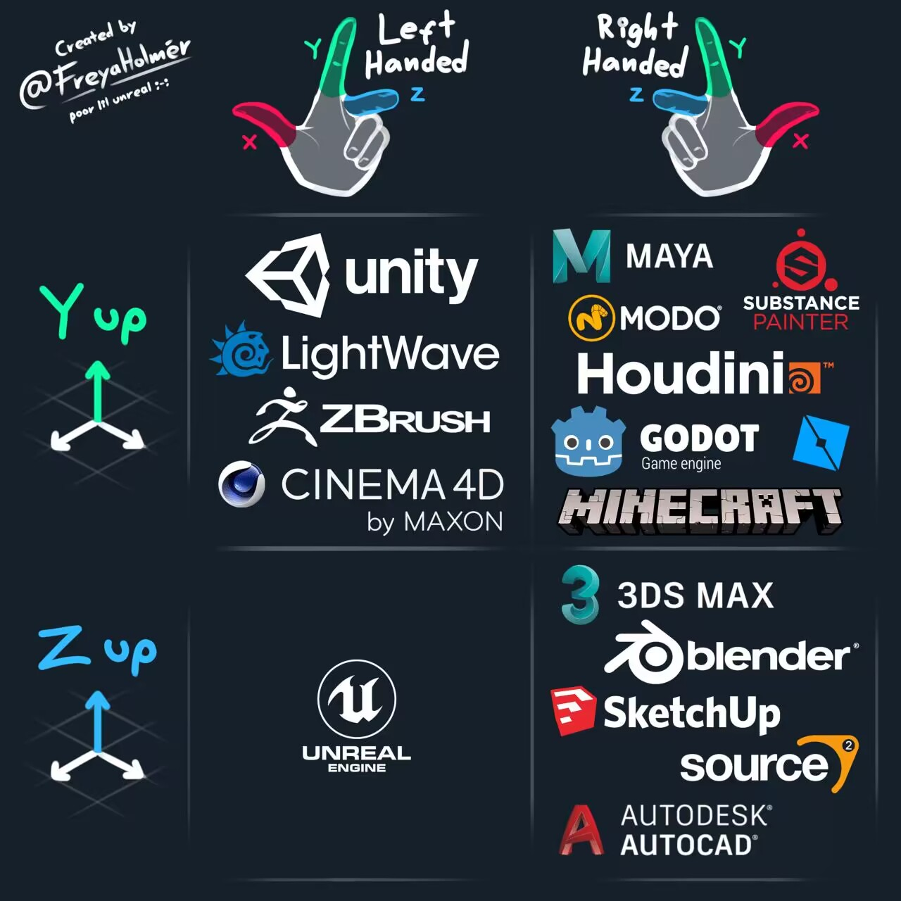
后面几节(17 ~ ) 复制了 https://www.zhihu.com/column/c_1277336980535975936
第一节
==全局光照==
什么是图形学
光栅化 opengl shader
curves and meshes
光线追踪
动画/模拟
光栅化
几何
光线追踪
动画/模拟/仿真
OpenGL/DirectX/Vulcan
this syntax of Shaders
we learn Graphics,not Graphics APIs!
第二节 线性代数回顾
==图形学依赖于线代 统计 微积分==
==图形学依赖于 光学 机械学==
==图形学依赖于 信号处理 数值分析==
aesthetics 美学
向量缺省为列向量
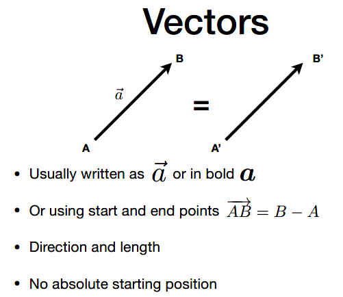
很明显 简单的对向量和点进行了定义
- 向量单位化
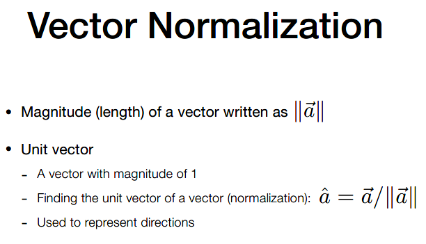
向量的和(四边形法则 三角形法则)
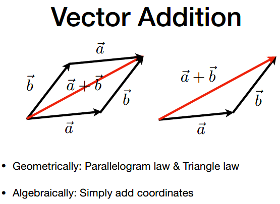
1583940681602 笛卡尔坐标系下的向量
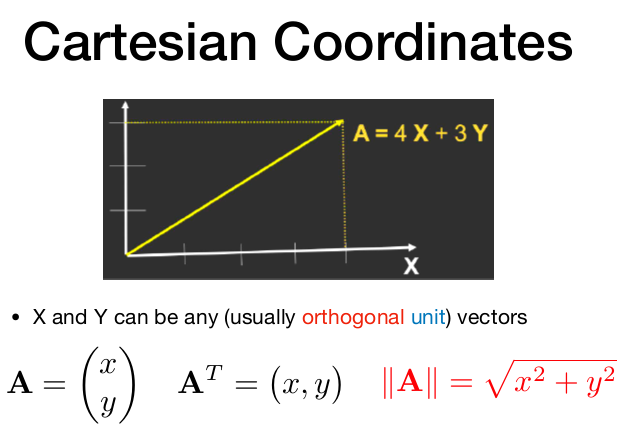
1583940681602 接下来是向量的点乘 和 叉乘
点乘
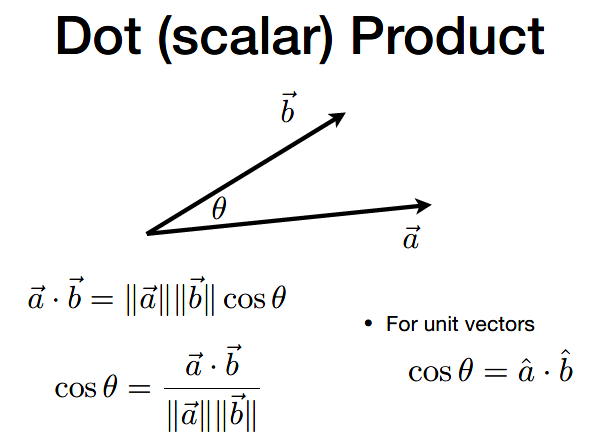
点乘的公式
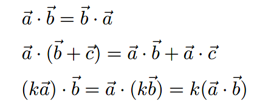
1583940681602 点乘在笛卡尔坐标系下的公式表示
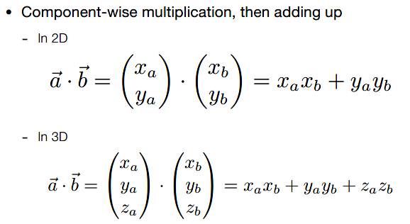
1583940681602 点乘在图形学上的应用
找到两个向量的夹角
找到一个向量在另一个向量上的投影
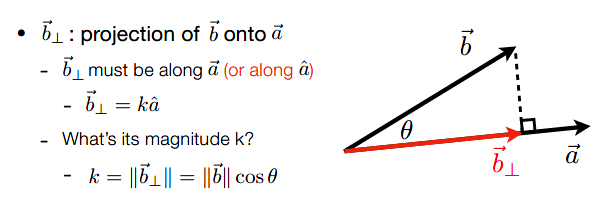
1583940681602 测量两个向量是否接近—分解一个向量—-判断向量的朝向
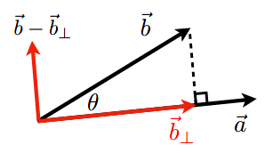
1583940681602 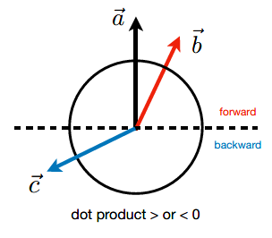
1583940681602
接下来是叉乘
叉乘
正交与两个向量 —- 方向被决定于右手定则 —- 在构造坐标系时有用
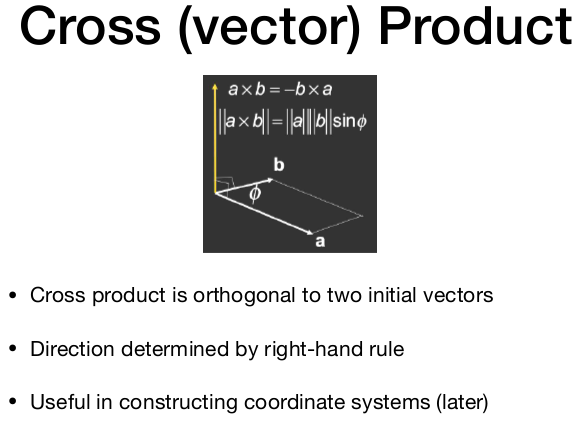
1583940681602 性质
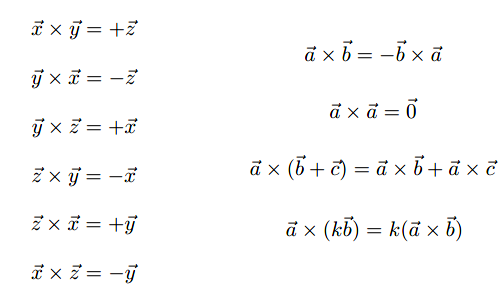
1583940681602 叉乘:笛卡尔公式
一个叉乘可以写成 一个矩阵和一个向量的乘积
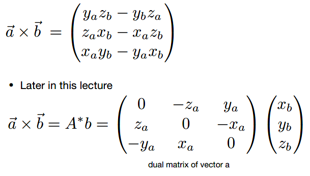
1583940681602 叉乘在图形学上的用处
判断 左/右
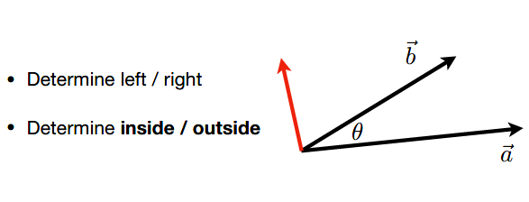
1583940681602 判断内外
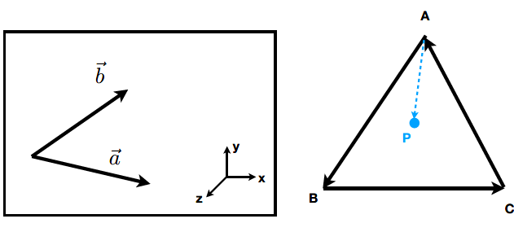
1583940681602
可以算出 当点P在三角形内部的时候 我们可以将三角形画成如图的形式 当P在三角形内部的时候
连接顶点和P 这个向量与顶点出发的向量 形成的叉积 一定处于同一个方向 (\(AB和AP\ BC和BP\ CA和CP\))
正交坐标系
？为什么引入正交坐标系
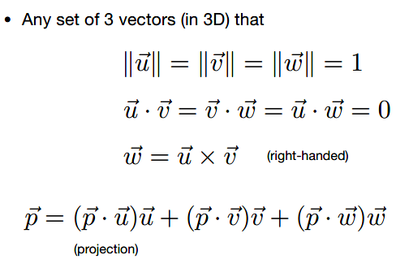
homogeneous coordinates
齐次坐标
第三节 变换 transformations
Scale 缩放
Reflection 反转
shear
Rotate 旋转
linear Transforms 线性变换
- 学习变换
- 建模 (Modeling)
- 可视化 (Viewing) ==（3D to 2D） projection==
- 2D变换
- 齐次坐标
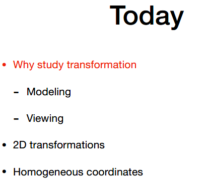
1583940681602
? 为什么学习 变换
下面 摄像机的变换
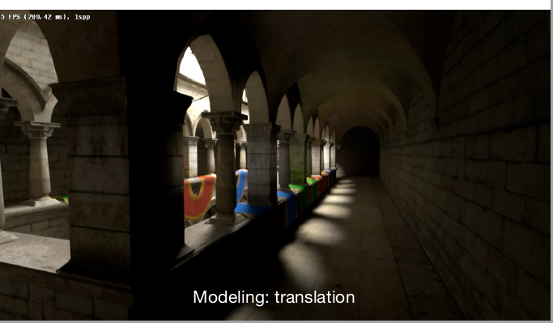
相机的旋转
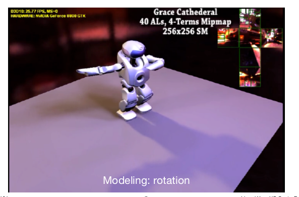
字母I的缩放
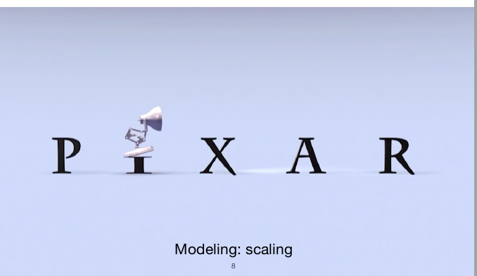
3d 到 2d 的投影
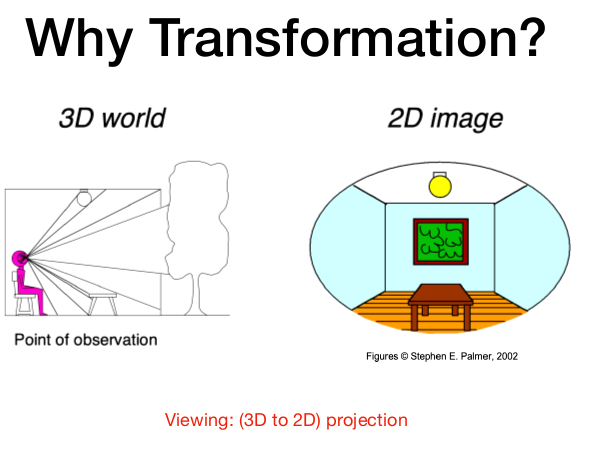
2D变化
- Scale(缩放)
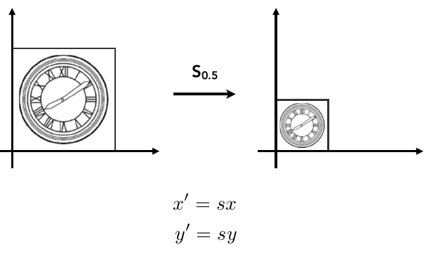
矩阵表示
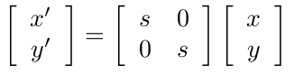
Scale(Non-Uniform) 不规则缩放
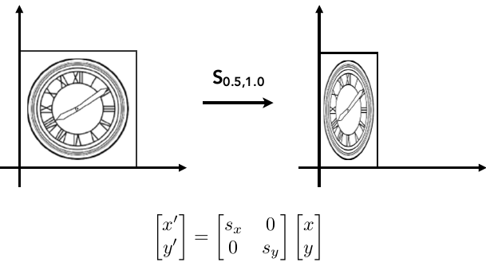
1583940681602 Reflection Matrix(对称)
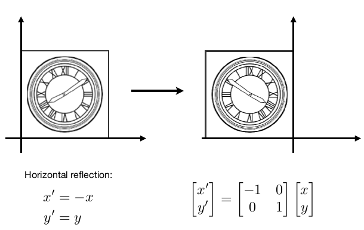
1583940681602 Shear 切变
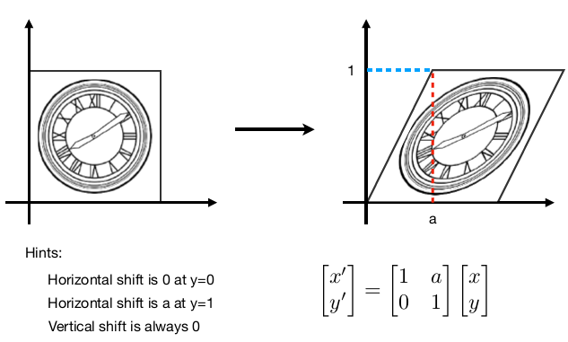
1583940681602 Rotate 旋转
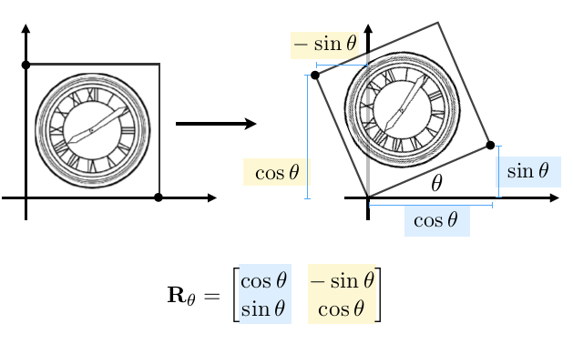
1583940681602
如何计算？
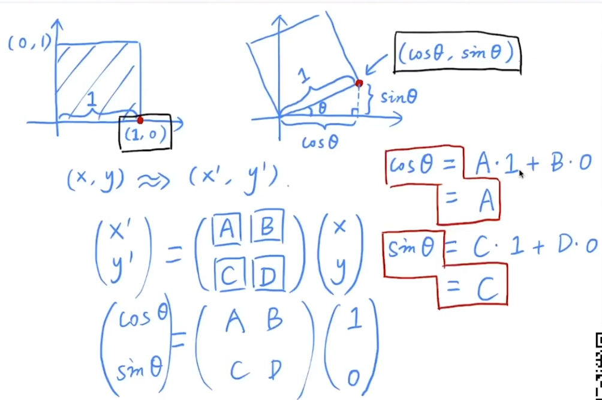
带入两个特殊点 分别是 正方形 右下角 和 正方形 左上角 后解出结果
==Linear Transforms=Matrices== 线性变化即一系列矩阵的复合
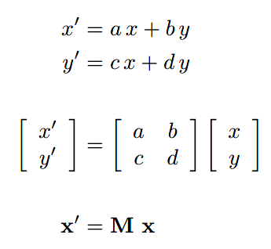
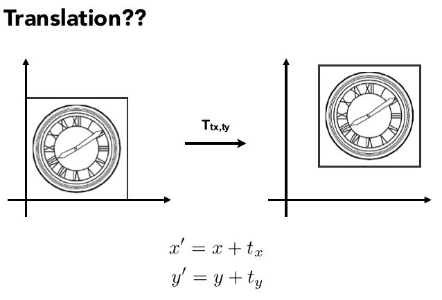
齐次坐标
? 为什么要使用齐次坐标
我对此理解是为了 使得平移普通化 平移较为特殊 如果 二维向量使用二维来表示 对于平移只能加一个向量来进行处理 而正交坐标系因为升维度变得更加容易处理
平移⑧是线性变化 单单凭借 同维难以表现
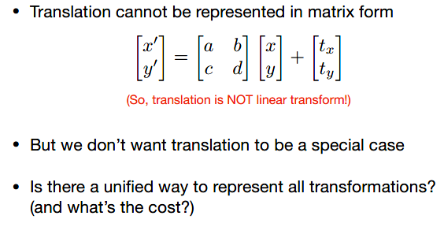
那么 就需要齐次坐标来帮我们
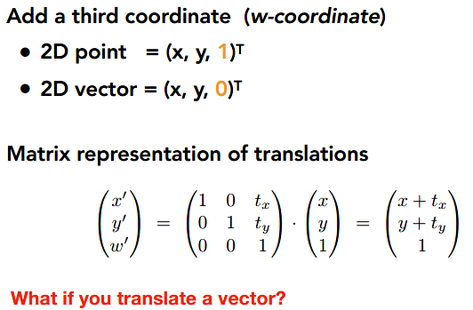
嗯 这样看起来不错
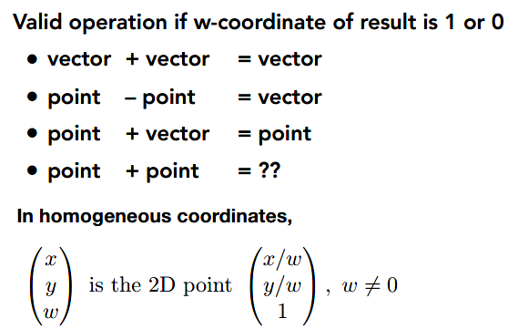
所以点和点加起来是什么？ 是他们的中点 等下就知道了
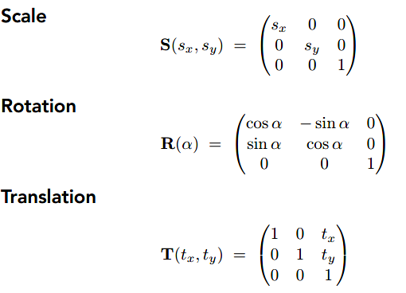
相反的变换 即是矩阵的逆
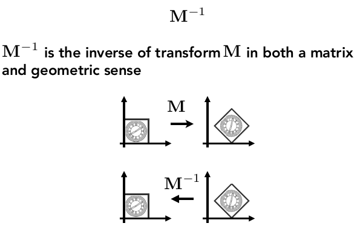
对于旋转平移的操作顺序不同 也会影响结果的不同
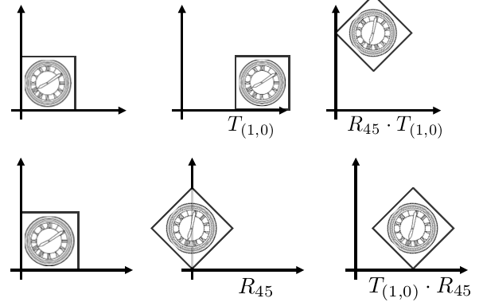
因为上面旋转是针对 原点说的 非原点无法 使用
所以要绕任意一个点进行旋转 可以先平移到原点 再旋转 再平移回去
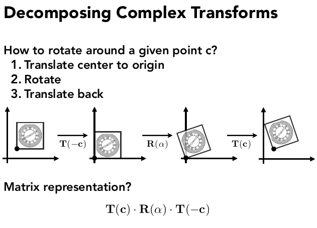
==先线性变化再平移==
第四节 3d变换和viewing
补充
旋转矩阵是正交矩阵
什么是正交矩阵?
\(AA^T=E\) 也即 \(A^{-1}=A^T\)
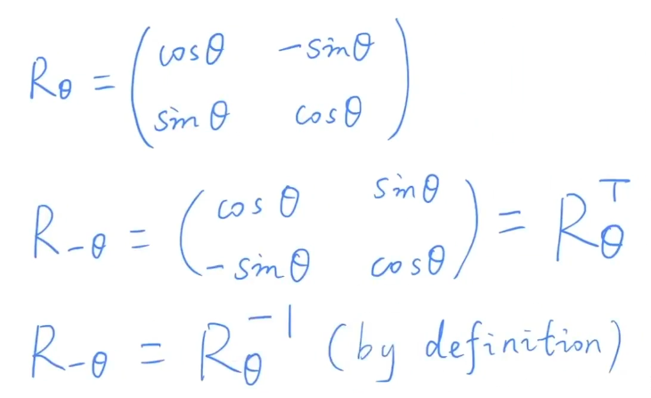
而且 因为 旋转矩阵的特殊
\(R_{\theta}^{-1}=R_{\theta}^T\) 通过定义 因为 \(R_{\theta}R_{\theta}^T=E\)
\(R_{-\theta}=R_{\theta}^T\) 写出来就可以得到
也就是说
\(R_{-\theta}=R_{\theta}^{-1}=R_{\theta}^T\)
观测变换
- 视图变换
- 投影变换
- 正交v
- 透视
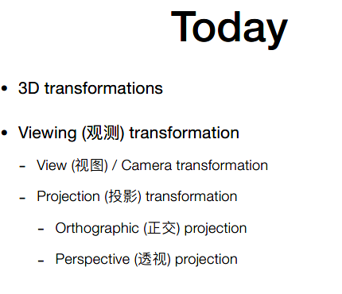
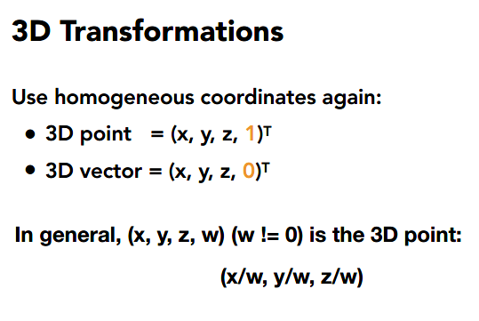
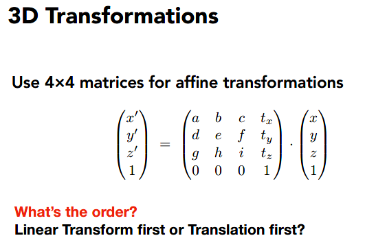
先旋转再平移
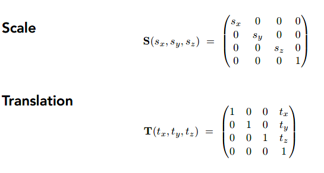
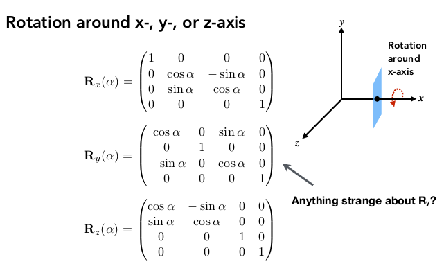
为什么 y 看起来奇怪?
看起来 绕x轴 和 绕z轴 都是 和上面那个 按\(\theta\) 旋转的对应正负
但是y轴表现出来 是按 \(-\theta\)旋转
xyzxyzxyzxyz （循环对称
怎么理解？ 按照2维那个旋转 旋转的方向 是从 \((cos\alpha,-sin\alpha) -> (sin\alpha,cos\alpha)\) 这两个对应的轴旋转
当我们再二维上旋转时候 其实可以看成 从z轴正方向看去
此时旋转\(\theta\) 是绕z轴逆时针旋转 (定义) => 从x绕到y
同理 对于x轴 绕x轴旋转 也应该是 从y到z
而当我们从y轴看向时 理应当
如果 绕y轴旋转 写成这种形式 就是 从x轴绕到z轴 所以就应该取相反的旋转
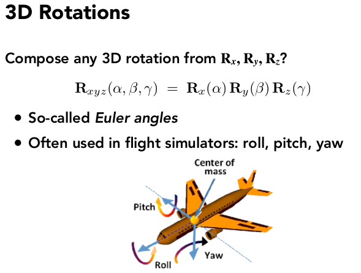
可以把任意的旋转 分解成三个 绕 x y z 旋转 ↑
罗德里格旋转公式 将一个旋转写成矩阵的形式
I是单位矩阵
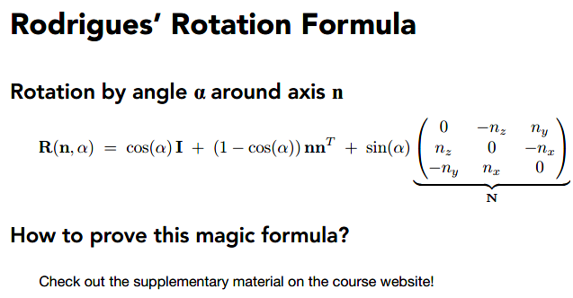
默认的想法 ： 沿着某个轴旋转 默认是过原点的 ↑
推导公式
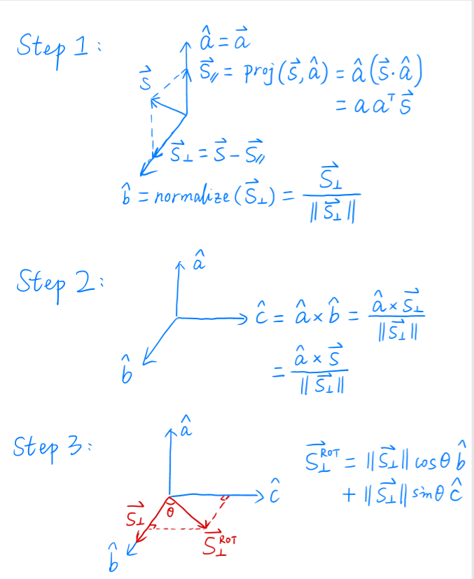
不打算说的 : 四元数
它的引入 更多的是为了旋转和旋转的插值
比如二维的旋转 旋转15度 可以写出一个公式
另一个旋转25度 如果两个取平均 肯定不是旋转 20度
也就是说 旋转矩阵是不适合插值这样的操作 因此 我们需要一种方式 ===》四元数
view/CamerOkay, let us sum up how real-time rendering works. We have a triangle in world coordinates, it is projected to the screen. Then for each pixel inside the triangle we compute its barycentric coordinates with respect to the triangle, pass the barycentric coordinates to the shader and then the shader can interpolate anything inside the triangle: texture coordinates, normals, colors, whatever.
Here is the commit that works exactly in this manner. And its result is shown in the left image of the above figure. Here is the correction with correct perspective-aware interpolation, check the floor tilings. All I did was to pass to the shaders bc_clip coordinates and not bc_screen. Hm. Let us find why.
a transformation 观测变换/视图变换
Projection transformation
Viewing transformation 观测变换
- View/Camera transformation 视图变换
- Projection transformation 投影变换
- Orthographic projection 正交投影
- Perspective projection 透视投影
为什么要学这些变换
目的: 把三维中的一个物体 变成 二维中的一张照片
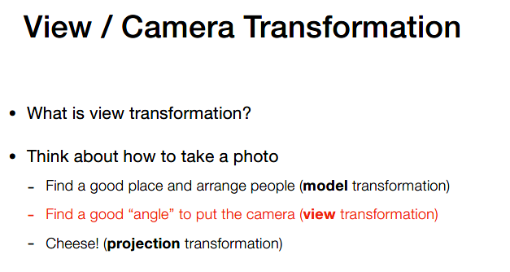
第一步 先要固定 相机的位置 –>怎么看
- 什么是视图变换
- 如何拍一张照片
- 找一个好地方 安排好人 (model transformation 模型变换)
- 找一个好的角度 放相机 (View transformation 视图变换)
- Cheese 拍照 (投影变换 projection transformation)
简称MVP变换 model -view-projection
View/Camera Transform
如何摆放相机？
- Position \(\vec{e}\) 放在哪
- Look-at/gaze direction $g $ 朝哪看
光定义这两个是不够的 还得再定义向上方向 防止相机的旋转
- Up direction \(\hat t\) 相机的向上方向 假定垂直于 look-at
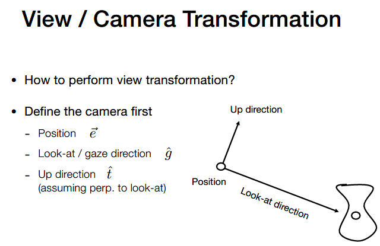
1583940681602
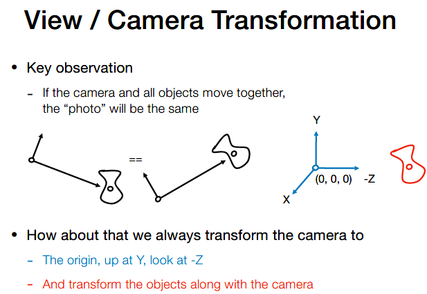
如果 相机于物体保持相对运动 为什么不把相机移动到原点
相机放在原点 看向 -z 方向 向上方向 为 y 轴 (约定俗称)
这样有不错的好处 也会造成一定的问题
1583940681602
==旋转矩阵是正交矩阵==
通过这种变换 将相机移动到固定的位置 其它物体也需要跟着做这样一种变换
? 为什么需要这样的变换 => 投影变换 (正交orthographic 透视perspective)
Projection transformation
- Orthographic projection
- Perspective projection
正交投影 透视投影
左边 平行线依旧平行 常用于工程制图 不会带来 近大远小的效果
右边 延长两条线 会交在一点 (人眼的成像更类似于这种) 有近大远小的效果
平行线不再平行 它们会相交
Orthographic Projection
1583940681602 - 相机摆放好
- 扔掉z坐标 =>如何区分物体的前和后?
- 平移缩放于 一个正方形 \([-1,1]\) (约定俗成)
更具体的做法
定义一个立方体 上下 y轴 (top bottom) 左右 x轴(left right) 近远 z轴(near far)
==l<r b<t ’n>f 看图== z轴的影响 右手系的影响
有些api使用左手系 opengl
转换成一个正则(标志)立方体 canonical cube
Translate 平移
Scale 缩放
1583940681602 ==这里这俩矩阵在右手系中进行变换==
unity只有再view空间是右手系
放缩后 物体也会发生变换 因此 在所有变换 做完后 还要做一个视口变换 还会做一次拉伸
Perspective Projection 透视投影
- 最广泛应用的投影
- 平行线不在平行
1583940681602
？ 为什么
在同一个平面 两个平行线不会相交
但是 透视投影下 一个平面相当于被投影到另一个平面 这时候就不是平行线了
欧氏几何 指的是同一个平面内
齐次坐标 乘一个数 任然代表同一个点
- 将远平面四个点 及中间那些点 挤 成一个长方体 怎么做?
- 再做一次正交投影 已经知道了
近平面上任意一个点不变
远处的平面z不会发生变化 只是再这个平面内收缩
远平面中心的也不变
所以找到了变换 任意一个点的y如何被挤压
注:此时 \((x,y,z)\) 代表的是一个中间普通的点 下面会利用特殊点 求解 压缩矩阵
接下来就计算 第三行 利用两个特殊点 解方程
两个特殊点
- 近平面上的点不发生变化
- 远平面的点的 z 左边不发生变化 —- 更特殊的 我们可以取 原平面的中心点
近平面上的点 (x,y,n) \[ \begin{pmatrix}x\\y\\n\\1\end{pmatrix} => \begin{pmatrix}x\\y\\n\\1\end{pmatrix}= \begin{pmatrix}nx\\ny\\n^2\\n\end{pmatrix} \] 可以算出 第三行为 \(\begin{pmatrix}0&0&A&B\end{pmatrix}\)
接着 远平面上的点 (0,0,f) 为什么是 0 0 因为 求z值与x y无关 可以当作为0 \[ \begin{pmatrix}0\\0\\f\\1\end{pmatrix} => \begin{pmatrix}0\\0\\f\\1\end{pmatrix}= \begin{pmatrix}0\\0\\f^2\\f\end{pmatrix} \] 所以 便可以解出
问题 对于中间的任何一个点 比如说 $z=(n+f)/2 $ 这个位置上 某一个z 经过挤压变换后 z 怎么变 更近 更远?
应该是 更远了
\(\frac{n^2+f^2}{n+f}-\frac{n+f}{2} = \frac{(n-f)^2}{2(n+f)} < 0\)
故 \(\frac{n^2+f^2}{n+f} < \frac{n+f}{2}\)
2024-1-19 …好像没有归一化 (拿只经过挤压的 也就是第三个矩阵算的 上面我好像是拿所有的矩阵)
归一化后是 \(n + f - \frac{n + f}{2} = \frac{n + f}{2} < 0\)
2024-4-13 又好像没错XD…
在z的负半轴上 所以变远了 (games202 说到 所有的点会被推向原平面)
(带入值后 使用wolfam计算图形 观察 怎么有的变近了 有的变远了)
总结下 投影变换 \[ \begin{pmatrix}{2/(r-l)}&0&0&0\\0&{2/(t-b)}&0&0\\0&0&{2/(n-f)}&0\\0&0&0&1\end{pmatrix} \begin{pmatrix}1&0&0&{-(l+r)/2}\\0&1&0&{-(t+b)/2}\\0&0&1&{-(n+f)/2}\\0&0&0&1\end{pmatrix} \begin{pmatrix}n&0&0&0\\0&n&0&0\\0&0&{n+f}&{-nf}\\0&0&1&0\end{pmatrix} \]
第五节 三角形的光栅化
光栅化成像
==做完观测矩阵后 所有物体都再经典的 \([-1,1]^3\) 空间 中 下一步 怎么办 下一步 就是要 画在屏幕 上 这就叫光栅化==
宽高比 aspect ratio 视角 field of View
MVP 操作后 Model View Projection
这个 立方体画到哪？ —- 屏幕上
什么是屏幕
- 对于图形学 是一个二维数组 每个元素是一个像素 1920*1080 1080p
Raster == screen in German
- Rasterize ==drawing onto the screen 把东西画再屏幕上 这就是光栅化的一个过程
Pixel 像素 (FYI short for “picture element”)
- for now a pixel is a little square with uniform color 在这门课中认为 是一个一个的小方块 且 整个方块的颜色一样 –在这里 像素可以看成是 最小单位 (类似于 化学反应中的原子是最小的单位
- Color is mixture of (red,green,blue)
- for now a pixel is a little square with uniform color 在这门课中认为 是一个一个的小方块 且 整个方块的颜色一样 –在这里 像素可以看成是 最小单位 (类似于 化学反应中的原子是最小的单位
定义屏幕空间
在屏幕中定义坐标系 左下角原点 向左x 向右y 每个像素 长度为1
宽度width 高度height
像素坐标 从 (0,0)到(width-1,height-1) 即 左下角代表它的坐标
将 这个 正方体 【-1，1】 映射到 屏幕上(0,width) (0,height)
=> 怎么处理z方向的值? 暂时 不管 z自然有用途 (z-buffer)
这个变换 就是 视口变换 (Viewport transform)
经过各种变换 会生成 图片中的多边形 =>但这不过
我们要多边形进一步打碎 显示成像素
绘画机器
1583940681602
不同的光栅的显示设备
示波器
阴极电子管
CRT
显卡里的区域(显存) 把显卡中的某个区域映射到屏幕上
LCD 液晶显示器
- 为什么是三角形
- 最基础的多边形
- 任何其它多边形都可以拆成三角形
- 独特的性质
- 保证是个平面
- 内外定义清晰 向量的叉积
- 良好的方法 在插值上
光栅化中最重要的一个概念 判断一个像素和三角形的关系=>判断像素的中心的与三角形的关系
最简单的做光栅化的方法 ->采样
采样(sampling)是什么-> 给你一个函数 是连续的 在不同的地方 问这个函数的值是多少
采样 就是把一个函数离散化的过程
采样 判断 像素的中心是否在三角形内
采样函数的定义
在不同的像素 中心 确定 inside函数的值 是1 还是0

是不是在三角形内 如何判断 利用叉乘 得到的结果 要么全是 z为正 要么全为负
边上的情况 要么不做处理 要么特殊处理
一些 api中有明确的规定 opengl directX
三角形的包围盒 轴向包围盒 AABB axis-align bounding box
每一行 都找最左和最右 每一行相对于有一个包围盒
实际屏幕光栅化
右边 bayer pattern
像素并不是 我们所像的那样
锯齿(Jaggies) 光栅化图形学中一直在致力于解决的严重问题 采样率 走样(Aliasing)
抗锯齿 反走样
第六节 Rasterization 2 光栅化
反走样 和深度缓冲
锯齿 ⑧希望有锯齿
抗锯齿(反走样)
锯齿(Jaggies)的学名 走样(Aliasing)
采样的理论
光栅化 就是 采样 2d空间
图像 也是一种采样
视频 在时间中进行的采样
采样带来的问题
所谓 Artifacts 在图形学中 的概念 一切我们看上去不太对的情况
- 锯齿
摩尔纹
1583940681602
本质上: 信号的变化太快 采样的速度太慢
采样之前先做一个模糊 (Blurring 或者 叫 pre-Filtering 滤波)
为什么
为什么说 采样速度跟不上信号变换速度会产生走样
为什么 先采样再模糊 无法达到反走样的效果
Frequency Domain 频域
正弦 余弦
1583940681602
\(T=\frac{2\pi}{w}=> w=\frac{2\pi}{T}=2\pi{f}\)
傅里叶级数展开 — 任何一个周期函数 都可以把他写成 一系列正弦和余弦的线性组合
傅里叶级数展开 —- 傅里叶变换
给定一个函数 经过一个复杂的操作 变成另一个函数 当然也可以通过逆变换 变回来(傅里叶变换和傅里叶逆变换)
所谓傅里叶变换 就是把函数 变成 不同频率的段 并且把不同频率的段显示出来
没间隔一段 采样函数 连起来 基本上可以知道原来的函数长什么样
但是 如果 对于频率高的函数 采样率太低 会导致离原来的点越来越远
对于一个函数来说 本身就有一定的频率 而且 我们采样也应该有一定的频率
我们可以用很高频率的采样点 恢复 出 很高频率的函数
高频率的函数 需要 高频率的采样 => 否则无法正确的恢复
通过频率分析走样是怎么一回事
1583940681602
走样：同样的采样方式 采样 两种不同的函数 得到的结果 我们无法区分 这就是走样
滤波? 什么意思 去掉一系列的频率
就是把某个特定的频段 给抹掉
傅里叶变换可以把一个函数 从 时域 变成 频域
傅里叶变换 会把 图像 从 时域 变成 频域
虽然这个图像不带有任何时间的信息 我们把空间上不同的位置 也认为是时域 （just a name 一个名字)
高频低频 变化的快不快
所谓的变化快 不是指在时间上信号在抖
而是在空间上 这个信号
比如在空间上画一条线 这条线经过图像上不同位置 把值显示出来 变化是剧烈的还是比较平缓的
右边
中心 定义为 低频
周围 定义为 高频
存有多少信息 通过亮度来表示
大多数信息集中于低频 (对于自然的图片 大部分都是低频信息多)
水平 以及 竖直的 白道 —–> 分析一个信号 我们认为时周期性重复的信号 对于不周期的信号怎么办?
如同这张图 我们看不出有哪重复了 我们认为当 图片到达右边界时 它又重复左边的内容
在水平方向无限多个 竖直方向无限多个
正常情况下 一张图片的左边界和右边界 很难一致
—>所以 在 图像左边界和右边界的交界处 会发生一个剧烈的信号变化 也就会产生一个极其高的高频
傅里叶变换 能够让我们看到 在不同的地方 频率长什么样 (更通用的说 任何信号 在 不同的地方 长什么样 ==频谱==)
滤掉低频 剩下高频 使用逆傅里叶变化 得到图片
得到图片内容上的边界
高通滤波
？为什么对应边界 某个物体 左右突然发生了剧烈的变化 这就是图片蕴含的高频的信息
低通滤波 得到相对模糊的图片
高频去掉了 边界看不到了 变模糊了
过滤=卷积=平均
(模糊就是一种平均操作)
任何一个数都是周围若干数的平均
这里的卷积是图形学上简化的定义
卷积定理
- 时域上 对两个信号进行卷积 对应到 两个信号各种的频域上 是两个信号频域的乘积
- 时域上 的乘积 对应 频域上的卷积
时域 所谓时域 (Spatial domain/Time domain)
拿到一个图
可以先做傅里叶变换到频域上 卷积和 也可以在 频域上写出来(也做傅里叶变换)
时域上 卷积 = 频域上 乘积
乘1/9 是为了 归一化 是卷积不会引起图像亮度的变化
盒子性质的 叫做低通滤波器
左边时域 右边频域
如果 左边盒子变大 右边频域变小
因为 盒子变大 使得图像更加模糊 也就意味着频率更低 因此 在右边频域上更加集中
采样= 重复频域上的内容
左上角 一个函数 反应在 频域上为右上角
加入要采样这个函数 ？ 什么叫采样? —>将函数变成离散的点
c 这样的就叫冲激函数 (冲激函数：只在某些位置上有值 其它无值)
axc 这就得到了采样结果 (时域上的)
时域上乘积 等于 频域上卷积
a 和 c 对应的 频谱 b d 在 频域上卷积起来 得到 f
在时域上得到一系列离散的点 在频域上就是把 原始函数的频谱 复制粘贴了好多份
=>采样就是在重复一个原始信号的频谱
所以？ 为什么产生了走样现象
采样的不同间隔 会引起 频谱以不同的间隔进行移动
上边就是正常的频谱
如果采样不够快 意味着采样点之间的距离很大 对应到频谱上 原始的频谱 搬移的密集
这就发生了走样
走样 在频域的角度上 是搬移产生了混叠
- 反走样
- 增加采样率
- 反走样 (先模糊在采样)
模糊 使得 频域上频率减小了
那么如何把一个三角形变模糊?
用一个低通滤波器(box-filter)进行卷积 (平均 卷积)
取什么块 小方块
一像素的低通滤波器 对一个像素内进行卷积(平均) (像素内部的值平均起来)
实际上怎么做? (一个三角形 在某一个像素 里覆盖的区域算出来 不容易)
=>MSAA (一种近似方法 对反走样的近似 不能严格意义上解决反走样)
mutisample antialiasing
对于任何一个像素 认为 被划分成了 小的像素
一个像素内多加 采样点
这样 第一步的模糊做完了 然后进行采样
MSAA 解决的是对信号的模糊处理 不是通过增加分辨率来解决问题的
增加了计算量
Milestones 不同的抗锯齿方法 Antialiasing
FXAA (Fast Approximate AA) 和采样无关 在图像层面上
找到图像上的锯齿 然后去掉锯齿
TAA (Temporal AA) 静止的 去找上一帧的结果 相当于把MSAA结果分布于时间上
Super resolution 超分辨率 /super sampling
- DLSS (Deep Learning Super Sampling)
第七节 Shading1 着色
画家算法
深度缓存 z-Buffer
为了做反走样 一个像素内取好多采样点 (MSAA 中)
对于采样点 要使用 深度缓存 z-buffer 就需要对每个采样点 做一个深度信息
z-buffer 得考虑 对每个采样点 进行一个记录 (作业2提高内容)
==z-buffer 处理不了透明物体==
Shading 着色
MVP 后 东西在二维屏幕 之后 光栅化
model view projection viewport rasterizating
1583940681602 1583940681602
着色 当把所有三角形画在屏幕上后
这些像素的值应该是什么
同样的物体在不同光照下 颜色不同 这就是要讨论的着色问题
Shading 着色
定义: 1.引入明暗的不同
2.引入颜色的不同
这堂课中
是对不同物体应用不同材质的过程
不同材质和光线作用有不同的方法
1583940681602 简单的 着色模型 Blinn-Phong Reflectance Mode 反射模型
- Specular highlights 高光
镜面反射 - Diffuse reflection 漫反射
- Ambient lighting 环境光照
认为在一个极小的面上是个平面
都定义为单位向量 长度为1
n 法线
v 观测方向 view direction
L 光照方向 light direction
shading point 这个点的属性 color shininess
着色 不是 阴影
不考虑其它物体的存在 这个点只看自己 别的不管 => 着色具有局部性
?阴影怎么生成 —之后再说
- Diffuse Reflection 漫反射
光达到某个点 光会反射到各个方向去
假如光离散 每个光线具有相同的能量 当旋转一定的角度 接收到达光线就少了
l方向 和 n方向 的夹角 决定了 有多亮
首先把光看成能量 看到物体接收到多少能量
考虑着色点周围的单位面积能接收到多少能量
Lambert’s cosine law
接收到的能量 与 n方向和l方向 夹角的余弦有关系
提到接收 就需要提一下 发散
点光源发出的能量 集中在球壳上
到达的能量 能够接收到的能量 漫反射系数(物体会吸收能量 不同物体对颜色有不同的吸收 \(k_d\))
如果把 漫反射 系数 表示为一个 三通道向量 \(r g b\) 分别是 0到1 就可以定义某种颜色
点乘得到负数 无意义 这时候取0
漫反射 和观察的方向(v)没有关系 (因为漫反射往四面八方反射的东西是一样的)
Blinn-Phong 模型是一个经验性的模型 不是完全符合物理的模型
第八节 Shading2 Pipeline TextureMapping
着色 管线 纹理映射
都是指单位向量
Specular Term 高光(Blinn-Phong)
观察方向和镜面反射方向足够接近

=> 法线方向和半程向量方向很接近 h 和 n接近
半程向量的方向是角平分线的方向
通常ks是白的一个系数
高光系数(亮度) 到达的能量 反射的能量 没有表示出吸收的能量
Blinn-Phong是个经验模型 简化掉了 能量的吸收
为什么 用 半程向量 就叫 Blinn-Phong模型 (是对模型的改进) 因为半程向量非常好算
另一个用 v 和 R (镜面反射方向) 的点乘叫 Phong-reflect model
指数存在的意义 — 降低容忍度 离得近 认为才是高光 (100~200 次数)
Ambient Term 环境光照 来自环境的光
- 假设来自环境的光都是相同的 (非常大胆的假设 环境光世界非常难)
环境光系数
事实上不是这么一回事 实际的情况要使用全局光照的知识
对所有的点进行着色操作
- 着色频率
- 面着色
- 顶点着色
- 像素着色
- flat shading 逐三角形
- gouraud shading 逐顶点(vertex)
- Phong shading 逐像素(fragment)
一个是着色频率 一个是着色模型
怎么知道逐顶点的法线
顶点的法线 认为 是相邻面的法线求平均 (加权平均)
如何得到顶点间点的法线 实现一个平滑的过渡 —-插值 重心坐标
记住要归一化法线向量
着色模型 着色模型怎么用 把所有的东西合在一起就叫图形管线
实时渲染管线
- 管线 graphics pipeline = Real-time Rendering 实时渲染管线
- 把所有的东西和在一起 就叫做图形管线
一个场景 到一张图 中间经历了什么过程
这个过程就叫做Pipeline 管线(表示一系列不同的操作)
- 输入一系列的点
- 进行投影 到屏幕上
- 形成三角形
- 光栅化
- 打散成不同的像素
- 输出图片
shading 发生在顶点 和 像素 ？
考虑到不同的着色频率 ground shading (顶点) Phong shading(像素)
现代GPU 运行有些部分可以编程 决定如何着色
处理这部分代码 叫做 shader 控制如何着色
如何定义不同点拥有不同的属性 —- 纹理映射
GLSL ↑ opengl的着色语言 gl shader language
决定顶点 和像素 如何着色 需要自己写shader 能在硬件上执行的语言
shader 每一个顶点或每个像素 会执行一次
写的shader 是一个通用的程序 每一个顶点(像素)都会执行
写的是顶点的操作 —– vertex shader (顶点着色器)
写的是像素的操作 —– fragment shader /pixel shader 片段着色器/像素着色器
像素着色器 干什么— 要告诉 这个像素最后的颜色是什么 — 对于一个像素 要写清楚怎么算最后的颜色 并且输出出去
shadertoy
https://shadertoy.com/
- GPU
GPU 高度并行的处理器
纹理映射
1583940681602
希望通过某种方法 能够定义物体上任意一个点的属性 kd
任何一个三维物体 表面都是二维的
定义一个纹理
纹理是什么？ 纹理就是一张图
要把一张图贴在表面上去
物体上如何映射到纹理上 任何一个三角形顶点都能找到在纹理上 映射到那个点
?怎么知道
- 艺术家的创造 (美工)
- 自动化的过程 给任何一个模型 展开成一个平面 参数化(几何上的研究)
假定我们已经知道了对于纹理上的坐标
在纹理上定义坐标系 (u,v)
uv的范围 不管是不是方块 通常都认为 u在0到1 v在0到1(约定俗成 方便处理)
三角形每个顶点都对应一个uv
不断的重复 贴满整个物体
tiled texture 无缝衔接的合成 不简单 wang-tiling
知道顶点的uv 如何知道三角形内部的uv —- 插值 可以将属性在三角形内部做一个平滑的过渡 – 重心坐标
- 纹理用来定义着色时 需要的各个不同点的属性
- 不同的材质就是不同的着色方法
作业上就是软渲
第九节 Shading3 Texture Mapping Cont.
Barycentric coordinates 重心坐标
Texture queries
Application
- 重心坐标 插值
- 纹理
- 纹理的应用
在三角形内部进行任何属性的插值 –重心坐标
- 为什么要插值
- 知道三角形顶点的属性值 想要在三角形内部实现平滑的过渡]
- 插值什么内容
- 纹理坐标 颜色 法向量
- 怎么插值 — 重心坐标
重心坐标是定义在三角形上的
换一个三角形 就换一套定义的重心坐标
三角形内任何一个点都可以表示成 三角形顶点的线性组合
所以 \((x,y)\)在重心坐标下的表示是\((\alpha,\beta,\gamma)\)
实际上 三个数只需要知道2个
可以通过面积比求出
三角形重心(三条中线的交点) 能将三角形 均分成 等面积的三个三角形
应用重心坐标做插值
重心坐标在投影下 不能保持不变
=> 要插值三维空间中的属性 就应该 取三维空间中的坐标 取算重心坐标 (不能在投影后做插值)
知道投影上的点 使用逆变换 得到三维空间中的点
=> 深度
纹理应用于实际的渲染
重心坐标插值出 (u,v) 在纹理中查询 值 知道对应纹理对应的颜色
可以认为这个纹理定义的就是物体的漫反射系数
可以用纹理的值代替 \(K_d\) 就相当于把这张图贴在物体上
如果这么做 会出先声明问题?
纹理太小了会被放大
高分辨率 对应 一张 低分辨率的纹理
插值可能插出小数 代表着纹理被拉大
纹理的放大
四舍五入成整数 texel 纹理上的像素 (Nearest)
- 3*3的像素可能会应用到同一个 texel上 因为纹理太小了
双线性插值 (Biliner interpolation)
1583940681602
纹理在这个红点处的 值是多少
线性插值
得到任意一个点 它的颜色是多少
两趟线性插值 双线性插值
- Bicubic 双向三次插值 取得不是四个 取周围临近的16个
纹理很小 会拉大 => 如果纹理太大 会这么样
纹理太大 会引起更严重的问题 – 走样
为什么？ 近处 一个像素覆盖纹理相对较小 远处一个像素覆盖了很大的纹理
=> 屏幕上像素覆盖纹理上的区域大小各不相同
像素覆盖了很大的区域 不能用像素中心取采样
一个像素增加采样点 类似于(MSAA)
信号变化快 采样跟不上
当纹理特别大 一个像素可能包含很大的纹理 这块纹理一直变换
- 一个像素内有非常高频的信号 需要用更高频的采样方法 (超采样)
另一个思路
采样引起走样 我们可不可以不采样?
立刻知道纹理的平均值 如何? mipmap
数据结构和算法 点查询(插值) 和 范围查询(range query)
有许多不同种类的范围查询
范围查询能够查询任意不同大小范围 => 引入Mipmap概念
- Mipmap 允许范围查询 快、不准(近似)、只能做正方形
- 近似的正方形的查询 (映射到texture上是正方形)
mipmap 一张图生成一系列图
比原来多少存储空间 三分之一
一个等比数列
将这个点的邻居都映射到 uv图上 然后做一个近似
求出对应的长度
用正方形框 近似不规则的区域
也可以用像素的四个顶点 反正都是近似
如何根据之前算好的mipmap 来算这个正方形区域的值是多少
如果右边这个是 1*1 1个像素 我们可以在原始的图上 原始的纹理上找对应
如果 是 4*4 这个像素 一定会在第二层上 变成一个像素
为什么 44在原始的图上是 4 4 经过第一层mipmap 会变成2 2 (可以这样理解？所占比例不变 在第一层占 1/32 为 4 4 到第二次为 2 *2)
通过这个 求出 第几层会变成一个像素的大小 然后就可以查那个像素就可以可以立刻得出那个像素是多少了 (在第 \(Log_2{L}\)层)
只算了离散的层 想要在连续的层上查询
比如第1.8 层 => 插值
双线性插值+线性插值 = Trilinear Interpolation 三线性插值
想要查 1.8层 先查第一层的 在查第二层的
最后把这两个双线性插值的值合在一块 — 在层与层之间进行插值
三线性插值非常有用 得到非常广泛的应用 (游戏 实时)
下面 三线性插值后的结果
为什么 Overblur 过渡模糊
mipmap有什么不对的吗？
- 它只能查询正方形区域内的范围查询 近似
部分解决这个问题 各向异性过滤 (Anisotropic Filtering)
各向异性过滤 比 mipmap 对了 些 不均匀的压缩 长宽比不同
对应到一个矩形上
可以发现 有些像素映射到Texture上时 不是正方形 所以各向异性过滤(开销增加了3倍) 可以使我们不限制于 正方形
解决了一部分问题 对于矩形的查询 可以更加准确 但是对于斜的不行
各向异性:各个方向上各不相同
只是对显存有要求 对计算要求不大 因为会收敛
发明了EWA过滤
把不规则形状拆成圆形 去覆盖这个不规则形状
纹理的应用
1583940681602
纹理的应用
纹理可以理解成一块数据 可以做不同类型的查询 没有必要限制在一个图像上
- 环境贴图
认为环境光来自无限远处
把环境光存储在球上
环境光可以记录在球面 上
展开后 扭曲问题
不把光照信息 存在球上 而存在立方体上
得到六张图
cube map
都是为了描述来自不同方向的光照信息
光照信息不一定是直接光照 反射的光也是信息
凹凸贴图
1583940681602
不把几何形体变复杂的情况 下 可以通过应用一个复杂的纹理(凹凸贴图 法线贴图) 从而定义任何一个点相对的高度 (假的法线=>假的凹凸不平=>欺骗眼睛) (凹凸贴图 法线贴图 一定意义上来说 就是为了改变法线)
相对的高度发生变化=>法线就会发生变化 =>shading的结果(着色的结果)就会发生变化
因为法线发生变化 使得着色发生一定的变化 人们才能看到这种凹凸不平
Bump Mapping
1583940681602 只是改变贴图 不会改变三角形的
- 进行对法线的扰动
- 对高度的移动
- 怎么样改变法线
- 原本p处法线是 (0,1)
- 求出曲线的切线
- 得到法线 归一化 (x，y交换 x坐标加上负号) (公式)
- 贴图如何影响法线
- 原来的p的法线
- 纹理有uv 分别计算p对 uv的导数
- 得到法线 归一化(公式)
- 这是局部坐标系 定义法线 为(0,0,1) 算出后 进行一个简单的变化
Bump mapping(凹凸贴图) 会在边缘 和 阴影露出问题
位移贴图 Displacement mapping
会把不同的顶点 真的移动的顶点
结果更好
但是要求三角形足够细 需要模型能够跟上纹理的变化速度
要细到比所定义的纹理频率还要高才行
不希望模型足够细致 能不能先用一个粗糙模型
应用位移贴图的时候 检测是否把三角形变的更细 如果需要 才拆开
=> directX 中的 动态曲面细分 dynamic。。。。
- 更多的应用
- 3d 定义了空间中任意一个点的属性 三维空间中的噪声函数
- 记录以及算好的信息 环境光遮蔽 算好贴上 感觉unity中也有一个功能 可以把阴影直接烘焙
- 三维纹理 体渲染
第十节 Geometry 1（Introduction)
存在光滑的曲面
如何在图形学中描述几何的形体?
如何描述各个不同的部件 大小 位置 这么设计
布料 怎么表示几何
水滴 模拟问题 模拟任意一个时刻的
城市 复杂的几何
带来的问题
怎么存储几何
就算存储后 怎么渲染
复杂的几何造成非常复杂的情况
即使近距离 几何也会非常复杂
- 许多表示几何的方式
- 隐式的几何 implicit geometry
- 显示的几何 explicit geometry
隐式几何
不会告诉你具体的点 而是告诉你这些点满足的关系
球的显示表示 \(x^2+y^2+z^2=1\)
隐式表示 \(x^2+y^2+z^2=1 \Rightarrow f(x,y,z)=0\)
隐式表示 有些好处有些坏处
比如说这种表示 \(f(x,y,z)=(2-\sqrt{x^2+y^2}+z^2-1)\)
但是 若问哪些点满足这个式子 是个圆环 但从式子上很难看出来
对于隐式表达 说出整个形状是什么(也就是说哪些点在这个面上) 比较困难
隐式的好处？
比如 说 判断一个点在不在这个面上 非常容易
只需要带入到这个关系式中就可以
显示表达 有什么好处
表示的方式
- 把面上的点都表示出来 (直接给出)
- 通过参数映射表示 (把所有的uv走一遍 就可以找到所有的xyz)
\(f(u,v)=((2+cosu)cosv,(2+cosu)sinv,sinu)\)
将u v 映射到三维空间实际的点
x y z等于什么uv函数式子 都知道
把所有uv都找一遍 就能得到长什么样
对于显示的表示很容易 对于的三维形状
我们只需要把所有的uv 带入 就可以知道了
对于显示的表示什么会变难 ？ 判断是否在表面上 内部 外部 会变难

为什么使用不同的表示方法 根据需要来取
隐式的表示方法还有很多
隐式表达
数学公式(代数方法) 简单图形可以 复杂图形会很困难
1583940681602 CSG Constructive Solid Geometry(非常好用)(Implicit)
Combine implicit geometry via Boolean operations
组合 隐式几何 进行布尔运算
1583940681602 Distance Functions(Implicit)距离函数
对于任意一个几何都不直接去描述它的表面 去表述任何一个点到这个表面的最近距离
1583940681602 ↑怎么做到的？ 对几何的距离函数做blend(或者是融合)
==距离函数:空间中的任何一个点到你想要表述的几何形体上的任意一个的最小距离==
这个距离可以是正的 负的 可以这样定义 外部是正 内部为负
应用距离函数的例子↓
两张图表示某种几何的边界
A 一个物体挡住了三分之一 B 一个物体挡住了三分之二
想要求出 物体运动过程中的一个中间状态
考虑两个不同的图 想要融合 做个简单线性blend(融合) 得到一个中间状态
=>左边三分之一还会被挡住 中间三分之一半被挡住 右边三分之一没有被挡住
=>左边黑 中间灰 右边白 —不对 不能表示一种运动信息
=>想到得到的是 准确的运动过程 左边一半黑 右边一边白(可以看出是运动到中间?)
=>?怎么做
先求出有向的距离函数 SDF(A) ==S表示signed== 有正有负
signed distance functions
A的边界 就是物体的表面 距离函数的定义 做垂线 左边正 右边负 距离近小 远距离大
blend 两个SDF 就等于是在Blead他们的边界 得到 左边黑 右边白
S->signed
1583940681602
分别把他们对应的(平面空间)距离函数 blend起来 再恢复成原来的面
=>SDF=0就是他们的面所在的地方
距离函数可以干什么
距离函数blend出来后 得到了一个函数
如何把它恢复成表面呢 ？ =》把距离函数对应0的位置全找出来 \(f(x)=0\)
对于距离函数不太好用式子写出SDF
水平集(Level Set) 方法 想法和距离函数完全一样
仅仅是它的函数的表示是写再不同的格子上 只需要找到中间为0的点的地方
等高线 不同位置 相同的值
水平集也可以定义在三维上的格子
Fractals (Implicit) 分形 自相似
1583940681602
==分形== =>自相似—>与递归很相似
不断再重复
在渲染的时候会引起强烈的走样 变化频率太高了
总结
隐式函数 通常表示起来很容易 数学公式 距离函数 不是把点写出来
通常写出来容易
一个公式一个形状
对于存储有利
容易判断在外面 里面 小于0 大于0
很容易做光线求交
==问题== 难以表示复杂的形状 这也是为什么要用显示表示形式 (引出下文)
第十一节 Curves and Surfaces 曲线和曲面
显示表示
曲线
曲面
- 在计算机图形学上的显示表示
Point Cloud 点云 最简单的方式 （显示)
不考虑物体表面 把物体表示为一堆点
1583940681602
点云需要特别密集的点 密度很低很难画出来
点云会变成多边形的面
- Polygon Mesh （显示) (最多的使用方法 ) ==多边形面==
多边形面 (常用三角形 四边形)
三角形设计连接关系 —–》造成比点云更多的困难
几乎是得到最广泛的应用
平常在图形学中是如何表示用三角形面形成的物体的
一种特定的文件格式 一个文件存放一个物体 一个场景
和编译出的.OBJ不同 这是个文本文件
说了什么？—-空间中的点(vertices) 法线(normals) 纹理坐标(Texture coordinate) 分开表示
然后再一块组织起来
]
解释上面文件的意思
立方体 八个点 六个面->>六个不同的法线
v 定义八个点 八行
vn 定义六个法线 （为啥是八行? 自动建模有冗余的部分)
vt 定义十二个纹理坐标 (一个面4个顶点 应该 24个 有公用的部分 不用使用这么多)
f 定义连接关系(哪三个点会形成一个三角形) face
格式 v/vt/vn
解释 5/1/1 1/2/1 4/3/1
表示是用 第5个 1 4 形成一个三角形
并且使用 第1个 2 3 纹理坐标
并且使用 第1个 2 1 法线
==通过这种形式定义不同的三角形面==
Curves 曲线
曲线应用
无线放大曲线 都是光滑的
Bezier Curves (贝塞尔曲线)
? 贝塞尔曲线做了什么？
=>要用一系列控制点去定义某个曲线
(这些控制点定义这个曲线的满足的性质)
系数3 ？下面会进行解释
起始点和终点 一定在 P0 P3
并且起始的切线和结束的切线 一定都P0P1 P2P3方向
不需要经过中间点 (取决于我们怎么定义)
怎么画一个贝塞尔曲线?
=>de Casteljau Algorithm
转换成这样的想法 给你一个时间\(t(0<t<1)\) 你告诉我这个点在哪
==相当于把画整个一条这个曲线的画法改成找这个点==
输入顺序 \(b_0 b_1 b_2\)
相同比例 给定这个时间t 假定 \(b_0b_1\) 为1 找对应的t
(比如说t为\(1/3\)) 则找这个对应的 \(b_0b_1\) 上的 \(1/3\)
把这两个点连接起来
再在这个新连的线\(b_0^1b_1^1\)上找对应的点t
这样之后不可能找到更多的线段了 就结束了
这个点\(b_0^2\)就是这个贝塞尔曲线 在时间t在的位置
通过参数定义 —-> 显示表示
枚举所有t 理论上 自然而然

相当于对\(b_0 b_1\) 做了一次线性插值
即 \(b_0^1=(1-t)*b_0+t * b_1\)
为什么？
一个简单的公式( 定比分点公式)
对于 起点为A 终点为B 的向量 C 分AB 且\(AC/AB=t\)
那么 C 表示为 \((1-t)A+tB\) ?how
公式为 C分 AB 且AC/CB = \(\lambda\)
则\(x= \frac{x_1+\lambda x_2}{ 1+\lambda}\) 同理 \(y= \frac{y_1+\lambda y_2}{ 1+\lambda}\)
此时 在文中 \(\lambda=\frac{t}{1-t}\)
化简后得
\(x=(1-t)x_1 + tx_2\)
\(y=(1-t)y_1+ty_2\)
==上表这个数(迭代次数)表示第几层 比如这个 是第二层==
\((x+t)^n\) 展开式 1-t 和 t
n+1个点 构成 n次贝塞尔曲线
伯恩斯坦多项式 ==n表示层数== (N I) 组合公式
可设置更高维得贝塞尔曲线 j是第几个顶点
==组合也是插值==
贝塞尔曲线的性质
经过起点 终点
对于三次贝塞尔曲线 (给四个点) 切线 的起点终点的切线的斜率 系数是3次 不知道怎么算 看上面两张图
在==仿射变换== 不变 仿射不变性? 先后操作不影响 先仿射再曲线 = 先曲线再仿射
直接对不同的顶点做仿射变化 再对这些仿射后的点做贝塞尔曲线
和 对这些顶点的贝塞曲线 做仿射变化 得到的结果一样
==仿射变换==
仿射变换，又称仿射映射，是指在几何中，一个向量空间进行一次线性变换并接上一个平移，变换为另一个向量空间。
对其他变换不是如此
凸包性质
画出的贝塞尔曲线 一定绝对 在控制点形成的凸包内
什么是凸包?
1583940681602
包围 这些点的最小的凸多边形
黑板上定上许多钉子 我们可以用一个橡皮筋 阔在上面 然后形成的图形就是凸包
凸包性质的应用:比如 给了一系列点 在一条直线上 因为凸包性质 所以 ==这样的点形成的贝塞尔曲线一定是条直线 就是自己==
Piecewise Bezier Curves
piecewise 分段的
分段贝塞尔曲线
控制点太多 不太容易操作
为什么要用这么多点？ 我可不可以每次用很少的点定义一段贝塞尔曲线
逐段定义 —- 通常 ==每四个定义一个 即 三次贝塞尔曲线==
中间那个没有画出来
-> 怎么保证我连起来的曲线是光滑的呢?
结论: 把两个控制杆拉到共线的状态 这样上一个贝塞尔曲线的结束位置切线 和 下一个贝塞尔切线的起始位置的切线 是一样的 并且和中间那个点等距 就可以说得到一个光滑的曲线
? 为什么要和中间那个点等距
如果认为两个曲线在切线意义上连续 我们认为不只是切线方向一样 大小也得一样
引出了连续性的定义
给定两个贝塞尔曲线 如果说
几何上的连续 接着就是连续 (a b 表示的顶点)
第一段终点和第二段起点接着 我们称之为 \(C^0\)连续 \(C^0 continuity\) $ a_n=b_0$
对于切线连续 称之为 \(C^1\)连续 (1阶导数的连续)
\(C^2连续\) 就是二阶导数连续 (曲率连续)
1583940681602 其它曲线
splines (样条) 相当于对曲线的一种总结
由一系列点控制 能够满足一定的连续性(几阶连续取决与具体的定义) 在任意的地方
==总结:一个可控的曲线== ->样条
B-splines (B样条) basic-splines
基函数样条
?什么是基函数(basic function)
百度百科定义: 在数学中，基函数是函数空间中特定基底的元素
函数空间中的每个连续函数可以表示为基函数的线性组合，就像向量空间中的每个向量可以表示为基向量的线性组合一样
在数值分析和逼近理论中，基函数也称为混合函数，原因是它们用在插值上：把基函数混合起来可作为插值函数（“混合”的方式是根据基函数对数据点的评估）
可以理解成 用伯恩斯坦多项式 在时间T 它的几个不同的项 对不同的控制点 做一个加权平均
也可以理解成 用控制点的位置 对伯恩斯坦多项式 进行一个加权求和
那么这个伯恩斯坦多项式 就理解成一个基函数
由不同的函数 通过不同的方式组合起来 形成其它函数 这就是基函数
B样条 相当于对贝塞尔曲线的扩展 比贝塞尔曲线的能力更强
我们想要一种性质 局部性
改变一个点 我知道这个控制点至多影响 这个曲线 到哪个范围内
B样条极其复杂
NURBS 非均匀有理B样条
↑ 非常难 https://www.bilibili.com/video/av66548502?from=search&seid=65256805876131485
Surfaces 曲面
Bezier Surfaces 贝塞尔曲面
1583940681602
三次贝塞尔曲面
十六个控制点 可以理解成某种力
how?
双线性插值 在两个方向上分别应用贝塞尔曲线
对每一行来说 取四控制点 得到曲线
如果我们认为 得到的曲线上的点 连起来
得到的再生成贝塞尔曲线
需要有两个时间 t 第二次做贝塞尔曲线 也得有个时间t
我们可以管他叫 (u,v) 或者(t1,t2)
先找u对应的四个点
再给一个时间v
在这四个点上找 对应的点
这个点(u,v)对应的点就是 曲面上的点
几何处理 网格
- 网格 细分 用更多的三角形
- 网格 简化 用更少的三角形
- 网格 正规化 基本成为正三角形
第十二节 Geometry3
更多三角形 网格复杂
更少三角形 网格简化
网格正则化 (正三角形)
曲面的细分
1583940681602 Loop Subdivision Loop细分 (不是循环 是因为名字)
怎么做细分
细分 (1. 分出更多的三角形 2. 让这些三角形的位置发生变化 使得更加光滑 -> 更像圆)
先细分 再调整
增加新的定点 对老的顶点和新的顶点分别调整他们的位置 让模型变得更加光滑
引入更多三角形 (各种各样算法) 怎么增多?
连接三边中点
调整顶点的位置 把三角形的顶点区分开 新的顶点和老的顶点 是变得更加光滑
1583940681602 怎么调整 ==新的顶点== 这里这个白点 和 这条边被两个三角形共享 知道两个共享边上的点 A B 以及不是共享边上的顶点C D 运用算法 (简单的加权平均 – 算法的执行方法) ==求出的值是这个白点的值==
1583940681602 ==旧的顶点== 那个白点
n:顶点的度 白点的度为6
u:与顶点的度有关的数
公式计算
更新这些顶点 (老的顶底 新的顶点) 得到更加光滑的图形
1583940681602
Catmull-Clark Subdivision （General Mesh) (另一种细分方法)
对于一般情况 (不止有三角形 还有四边形)
非四边形面
奇异点 (度不为4的点都是奇异点)
1583940681602 取面的中心点 边的中点 连起来
1583940681602 在三角形内连接的 会是奇异点
经过一次细分后 所有的非四边形面消失了
所有的非四边形面都会引入一个奇异点,并且引入奇异点后 这些非四边形面都会消失
就好像说这些非四边形面在一次Catmull-Clark细分后都变成了一个奇异点
=>经过一次细分后 所有的非四边形都消失了 这就告诉我们 奇异点不可能再增加了
=>Catmull-Clark 在做第一次细分后 增加了非四边形面数这么多个的奇异点 之后再也不会增加
1583940681602 1583940681602 公式 (怎么调整点 在面内的店 在边上的点 老的点)
FYI for you information
==Loop细分只能用于三角形面 而Canmull-Clark可以用作各种不同的面==
1583940681602
曲面的简化
从很远看 效果看起来是差不多的
离近了用30000个 离远了用3000个 当我们切换时候 会不会看到很明显的变化? 希望有一个平滑的过渡
一个困扰的问题 几何的层次结构
怎么做简化 Colapsing An Edge 边坍缩 (某一种方法)
一条边的两个顶点 把这两个顶点捏在一起 这条边就不再存在了 这就叫边坍缩
但实际做起来却没有那么容易
1583940681602
比如 我要坍缩那些边
哪些边可以捏在一块 哪些边不可以捏在一起
引入一种误差的度量 —- 二次误差度量 (二次不是指做俩次 而是平方)
希望找到一个点 可以最小化二次误差 ? 什么是二次误差
找一个最优的位置 它到各个面的距离的平方和最小
如何找到坍缩边
对于每一条边 计算如果坍缩它 会有多大的误差
找到二次度量误差最小的边进行坍缩 一次次进行坍缩
给每条边先打一个分数 这个分数就是它的二次度量误差
从小的开始一个一个做坍缩
问题
坍缩了一条边后 有些边跟着变化 会影响其它边的二次度量误差
这样我们不可以先计算出所有边的二次度量误差 因为当我们做了一次坍缩后 某些边也会发生变化
- 取最小操作
- 做更新 (堆 允许求最小 并且允许动态更新)
- 是贪心算法 不能保证全局最优
遗漏的问题 Shadow 阴影
之前遗漏的问题 光栅化中如何生成阴影
为了说明为什么要用光线追踪
全局的光线传输问题 包括阴影 都是光栅化不太好做的事情(虽然不太好做 但人们发明出了如何在光栅化的情况下把阴影做出来)
1583940681602
着色是一种局部现象(考虑着手点自己 光源 摄像机) 解决不了阴影 现在来解决
Shadow mapping 光栅化下解决阴影(阴影映射)
对应的结构叫shadow map
shadow mapping 在生成阴影过程中不需要知道场景的几何信息
但是shadow mapping会产生走样现象
某个点不在阴影中 ===> 光源可以照到 摄像机可以看到
经典的shadow mapping 只能处理点光源(方向光源)
这种阴影通常有非常明显的边界 说明这个点要么在阴影 要么不在阴影 非0即1的
这种阴影叫做硬阴影
点光源下如何生成阴影
从光源看向场景 做一遍光栅化 就可以得到光源可以看到什么
得到了一幅光源可以看到物体的图
这个图不要做着色 我们记下看到任何点的深度
从摄像机看场景 看到点 投影回光源看到的图像上 得到在哪个位置上
然后计算看到的点到光源的距离 这两个深度相等 说明这个点是可见的
这个点可以被相机看到 可以被点光源看到
接下来那个点计算的深度 和 保留在点光源计算的深度不一致 说明这个点是被光源看不到的 —-这个点在阴影中。
光源处的虚拟相机 记录出的能看到的深度 (depth-buffer / z-buffer)
从真实相机 看 点 重新投影回 点光源 比较看到的点是否一致
从点光源看 实际上记录的只是深度 z-buffer (depth-buffer)
光源能看到的深度信息记录在一个图中(这个图叫 shadow map) 这个图有分辨率
相机看到的 通过对比 什么样的点可以看到
左上角可以被看到 知道什么是可以被看到的 什么是在阴影中的
决定是否相等很困难
因为是浮点数 而且看到像素可能覆盖很多点 它们位置都有很多差异
- 比较大小 看到点的距离比记录的大 说明在阴影中
- 引入偏差 比较要大于 并且要大于记录的距离加上一个偏差值
记录的图 shadow map 有分辨率
如果分辨率很低 渲染整个场景分辨率又很高
阴影的信息记录的是走样的 会投影出来一个具有锯齿的阴影
走俩遍 开销大
问题
- 要渲染整个场景两边 (更大的开销)
- 只能做硬阴影
- 数值精度问题
但这个技术得到了非常广泛的应用
游戏中设置阴影质量
大多数情况下指的是这个阴影图(shadow map)的分辨率是多少
什么是硬阴影软阴影
软阴影不是非0即1 会有种变化
软阴影在物理上就是伴影
如果在某个地方完全看不到光源 叫做本影
如果可以部分看到光源 叫做伴影
对于点光源是出现不了软阴影的 有软阴影就说明光源有一定的大小
如何做出 ===>接下来
第十三节 Ray tracing 光线追踪 Whitted-Style Ray Tracing
光栅化 有些部分不好做 所以需要光线追踪
全局光照是直接和间接光照的集合
为什么引入光线追踪
光栅化最大的问题是 无法很好的表达全局的效果global effects
软阴影(Soft shadows)
–反射(类似于打磨比较光滑的金属)(Glossy reflection)
间接光照(Indirect illumination) 光线在到达人眼不止弹射一次
- 光栅化很快 是一种很近似的渲染方法 但是质量较低
光线追踪
准确 但是慢
==光栅化 是实时的 每秒钟生成超过三帧的图 光线追踪 是离线的 电影==
trade-off
一帧需要花一万个CPU小时 (一帧就是一张图)
基础的光线追踪算法
1583940681602
定义图形学中的光线
- 光线按直线传播 (对于这门课)
- 光线不会发生碰撞(对于这门课)
- 光线从光源出发到眼睛 反过来也是一条可逆的光线 reciprocity 光线的可逆性
光线追踪利用的是光的可逆性
所谓追踪 从最后终点开始 也就是从眼睛 或者 相机开始
光线追踪 从眼睛(相机开始)
从眼睛(相机)打出一根光线 先做光线的投射 与某个物体相交表示看到了哪
然后把这个点和光源做一个连线 判定这个点是不是在阴影中 不在阴影中 就生成了一条有效的光路 ↓
从光源到这个点再到眼睛 就可以计算光源携带的能量 算出颜色 (这步是着色)
这就是光线投射 怎么去生成不同的光线
光线追踪 有些假设
- 认为眼睛是个针孔摄像机 认为眼睛是个点 不考虑实际的镜头(有实际大小的镜头 在路径追踪中会说)
- 认为光源是个点光源
- 对于场景中的物体 光线打到后 会发生完美的反射和折射
对每个像素都这么做 eye ray
取的是最近的交点 完美的解决了深度缓存的问题
找到交点 往光源连第二根光线 shadow ray
如果这根光线中间没有任何物体阻挡 就可以知道光源可以照亮这个点
黑色的线 法线
有了法线 入射方向 出射方向 就可以算这点的着色
着色算出后就可以写入像素的值
怎么做着色？
各种各样的着色模型 Bling-Phong等方法都是可以的
Whitted-Style Ray Tracing 本身是个递归的算法
可以做各种光线弹射的光线追踪
打到一个点 有反射光线
这是个玻璃球 有折射光线
whitted说明这样一件事 在一个点 可以继续传播光线 只需要正确的算出反射方向 折射方向
在每一个弹射点都会去计算着色的值
会把所有着色部分(能被光源照到的) 都给加回去 (光线是可逆的 所以从眼睛出发的到达反射的地方 最后也能回来) (有能量损失)
对于不同类型的光线做一个归类
从眼睛出发的叫 primary ray
之后折射 反射的叫做 secondary ray
反射点与折射点与点光源连线叫做 shadow ray 为了判定可见性
解决技术问题
Ray-Surface Intersection 求交点
1583940681602 定义数学上的光线:定义起点和方向 都认为是单位向量
o起点 d方向
1583940681602
光线上的任意一点的表示 也即光线的定义
(d是单位方向向量,点加向量还是点)
光线与球的交点 数学上定义交点:这个点既光线上 又在球上才叫交点
求点p 两方程求解
解出t 要满足实际意义(t必须为实数 而且是正的)
推广到光线和隐式表面求交 (所谓隐式表面 写成函数的形式)
这个点既在光线上 也在隐式表面上 带入函数 解出解(1.必须是实数(有意义)2.必须是正的(光线是射线))
对于显式表面怎么做?
最最重要的显式表面 — 三角形
光线与三角形求交 很重要 => ？为什么
能够找到交点 判断光线是不是被遮挡
判断一个点是不是在物体内
画一个封闭的曲线 在形状内部 点一个点 随便朝哪个方向打一个光 如果这个点在形状内部
得到的交点个数一定是奇数(射线) 偶数个交点则一定在形状外(推广到3d仍然适用)
1583940681602 光线怎么和三角形求交?
- 一个一个三角形求交 (太慢)
分解为两个问题
- 光线和平面怎么求交
- 找到交点后 判断是不是在三角形内 (叉乘) 已知
光线和平面怎么求交
求交点先定义出数学定义
光线已经知道 \(r(t)=o+td\)
平面如何定义 法线 和点 定义 (点法式)
平面内一点和\(p^{'}\)构成的向量与\(N\)垂直 用这样的方程来表示平面的点
求平面和光线的交点
1583940681602
解出t后 (正的 实数) 之后判断这个点是否在三角形内 (这一系列是简化的做法)
有没有办法能够一下解出光线与三角形的交点? 且解出来后立刻就可以判断在不在三角形内
可以
MT算法 Moller Trumbore Algorithm
做了什么?
将这个点 (在三角形内) \(\stackrel{\rightarrow}O+t\stackrel{\rightarrow}D\)写成重心坐标描述的形式
解出时间 t
线性方程组
解出来怎么办 ? 检测正确性
1.t 为正 2. 保证点在三角形内 b1 b2 (1-b1-b2)都为非负数
把光线和每个三角形都求交 然后找出最小的 太慢
怎么提升速度
一千万个三角形
两千万个三角形
怎么加速
为了加速
Bounding Volume 包围盒的方式进行加速
包围盒
如果光线碰不到包围盒 那么里面的东西也不用看了
常用的包围盒 Box (长方体)
这个长方体
理解成长方体是三个不同的对面形成的交集 形成了前后的对面 上下的对面 左右的对面
Axis-Aligned Bounding Box(AABB) 轴对齐包围盒
现在光线如何和一个包围盒求交
(因为逻辑就是 如果光线和包围盒没有交集 那么它和包围盒里面的肯定没有交集)
那么 如何判断光线和一个盒子是不是有交点 ==很重要==
先看二维怎么算
二维就是两个对面形成的交集
对于给定的光线可以求出来 光线和这竖的两个面什么时候有交点
\(t_{min} t_{max}\)
\(r(t)=o+t\stackrel{\rightarrow}d\)
然后看水平的两个对面
同样可以求出什么时候和\(y_0 y_1\) 有交点
时间为负的时候会与\(y_0\)有交点
对于任何一对对面 能找到进入时间 与 出入时间
那么 如何找到什么时候进入盒子 什么时候出去盒子
怎么做的?
求了一个线段的交集 =>为什么?
对于三维的盒子 (三个对面)
光线什么时候进入三维这个盒子 只有当光线进入了所有的对面 才能说进入了盒子
光线什么时候离开三维这个盒子 光线只要离开任意一个对面 就离开了盒子
所以要找最大的\(t_{min}\) 最小的\(t_{max}\)
\(t_{enter}=max\{t_{min}\} t_{exit}=min\{t_{max}\}\)
如果进入的时间 小于出去的时间 表示在这个盒子中
问题:还没有考虑负的情况
离开的时间小于0 \(t_{exit}<0\)
盒子一定在光线的背后
\(t_{exit}>=0\quad t_{enter}<0\)
光线在盒子里面 肯定有交点
总的来说 光线和AABB有交点 当且仅当
\(t_{enter}<t_{exit}\&\&t_{exit}>=0\)
为什么轴对齐
光线和轴平行的面求交点好求 上面这个平面与 yoz平面平行 好求交点
可以只看x方向的交点
\(r=o+td\)
\(p_x^{'}=o_x+td_x\)
==> 其它加速结构 进一步加速求交
第十四节 Ray Tracing2 (Acceleration & Radiometry)
加速结构 辐射度量学
光栅化是实时的
光线追踪离线的
有很多离线的算法 渐渐都能搬到实时中来
之后的内容比较难 算是现代图形学
使用AABB加速光线追踪
- 均匀格子
- 空间划分
先和盒子求交 在判断是否与物体有交
找到包围盒
对场景的预处理 把盒子分为一堆格子
判断有哪些格子有物体 不关注内部 （右上角那个涂的不对（预处理结束 这样就知道有些格子有物体 其它格子没物体 接下来进行光线追踪
进行光线追踪 (假设光线和盒子求交非常快 和物体求交非常慢)
光线经过的格子 且 如果上面已经被标注了阴影 说明光线和物体有可能有交点
这时候做一个与物体求交 没有交点
当与盒子里物体相交时 找到了交点
怎么知道光线传播过程中 下一个打到的格子是哪个(不需要每个格子都判断一遍)
最最简单的思路(当然肯定不会是这么做的):
比如图上 光线在往右上打 当前在某个格子
那么光线下一次打到的格子 要么在它右边 要么在它上边
所以只要判断和这俩个盒子是否有交点就可以了 取最近的 就可以把光线向上或向右移动一个格子
这就是在光栅化中没有提到的话题 —- 如何光栅化一条线 (线不像三角形 不存在内外 那么线会占据哪些不同的像素呢) (虎书中有)
有算法可以知道光线的走过的下一个格子到底是谁 (与直线的光栅化有类似的地方)
加速效果怎么样
1x1 的格子 格子太稀疏
格子太密集(光线与格子求交次数太多) 效率下降
格子数 = 常数 * 物体数 (人们推测的 并且测试出好的常数)
找到了划分格子的好的平衡 格子不能太稀疏 不能太密集
下面可以使用划分均匀的格子
运动场中的茶壶
场景在不同的位置 分布不怎么均匀 大规模的集中 大规模的空白(不适合使用分布均匀的格子)
- 空间划分 (加速结构)
格子大小相同 但是在稀疏的地方 我们不需要这么小的格子 在密集的地方用 小的格子
空间划分是个很早的问题 在计算几何上有各种各样的研究
图形学应用了各种各样的划分结构
Binary-Space partitioning BSP
八叉树(八个子节点) Oct-Tree
为什么八块 空间中的正方体切三次 这里是二维的情况 （切两次 实际上是一个四叉树)
八叉树 在二维上是四叉树 在线段上是二叉树
对每个子节点再切成四块(Oct-Tree 右上角那个也需要切分 只不过没画出来)
什么时候不切了 取决于不同的标准 某一个格子是空的 或者 某一个格子有足够少量的物体 差不多就可以停止了
把空间切成了不均匀的块 并组织成了树结构
人们不喜欢使用八叉树 在平面情况下 八叉树是四叉树
在三维空间是八叉树
再更高维的空间 是2的多少次方数 =>这样显然并不好
发明新的办法 能够使空间得到划分 并且和维度没关系=>KD Tree
KD-Tree 和八叉数几乎相同
不同的是 每次只沿一个轴 劈成两半
划分成了类似二叉树的结构 每个节点只有俩个叉
x y z x y z 不断循环选轴 拆成两半
BSP树 是对空间二分的方法
每次选一个方向把节点砍开(与KD-Tree 区别就是 它不是横平竖直的砍的)
三维就需要一个平面 高纬就需要超平面
BSP 不好计算 越高维越难算
给一个场景 先建立KD-Tree (先做好加速结构 之后再考虑如何于光线求交)
（1 与 2 3也会被划分) 最后形成一棵树
在中间节点 A B C D 只需要记录它被划分成什么样的格子 长什么样
在叶子节点存储是否相交
总结 (如果要设计一种KDTree的数据结构 怎么办)
对于任何一个节点
- 知道当前节点沿着哪个轴划分
- 划分在哪 (不一定是正中间 各种各样定义的)
- 两个子节点
- 实际的物体不存在中间节点上 只存在于叶子节点上
这个结构怎么帮助加速光线追踪
假设光线从左上到右下
查看交点 有一个最大的包围盒A 判断是否和A有交点
那么有可能和A的两个子节点有交点 所以应该继续看下去 判定与两个子节点是不是都有交点
左边的情况按理应该继续划分 但是我们给了一个很歪的的KD-Tree 所以不继续划分了(就是认为1就是叶子节点了)
与右边有交点 关系既然和B相交 那么有可能与2 C相交 继续判断
如果光线和某一个格子没有交点 那什么也不用做
如果光线和某一个格子有交点 那么光线和它的两个子节点可能有交点
所以都判断一下
直到判断到叶子节点 与叶子节点包围盒没有交点 那么就什么都不做
如果与叶子节点有交点 那么光线就要和叶子节点中的所有物体求交点
总结
KD划分是空间划分的一种 通过kd-Tree划分我们可以找到交点
那 怎么判定物体和包围盒相交的情况? 这些很难判定
对于KD-Tree有个明确的问题
==> 如果场景都是三角形构成的 那么通过空间划分的方式 势必产生一个问题
给你一个AABB的包围盒 我得知道和哪些三角形有交集 很难判断(但有算法)==问题一==
所以渐渐的不使用KD-Tree了(不太好写)
1583940681602 像这个 与不同的包围盒又交集 3 4 5都要存这个物体
物体有可能存在多个不同的叶子节点中 这个并不怎么好 ==问题二==
====> 通过物体来划分 Object Partitions & BVH(Bounding Volume Hierarchy)
现在大家都使用这种结构来进行划分 因为解决了KD-Tree的两个问题
- 物体可能存在不同的格子里
- KD-Tree的建立并不简单 需要考虑三角形和盒子的求交
得到了非常广泛的应用
不管是实时的光线追踪 还是什么离线结构 都用的这个BVH结构 因为它解决了KD-Tree的俩个问题
- 划分的不是空间 而是物体
根节点对应的方框
把一个盒子的所有三角形 组织成两部分
把这两部分重新求包围盒
同样道理继续划分
划分到什么时候为止? (比如说划分到一个包围盒中只有5个三角形为止)
同样也可以使用 KD-Tree的划分方法 某一层左右划分 下一层上下划分
性质:一个物体只可能在一个包围盒中 (解决了KDTree三角形可能在多个包围盒中的问题)
把三角形分成两堆 好做
取最小的包围盒 也好做 找最小y 最大y x z同理
不会涉及到三角形和包围盒求交
但是BVH引起了一个问题 BVH对空间的划分 其实不是严格的划分开 不同的Bounding box有可能相交 尽可能划分交集少(具体怎么划分 是一个很好的问题)
1583940681602 找到包围盒
递归地把包围盒中的物体拆成两部分
重新计算包围盒
当叶子节点中有足够少的三角形就够了
实际的物体记录在叶子节点里, 其它部分都用来做加速结构的判断
如何划分一个节点
选择一个不同的维度划分 这一层左右 下一层上下(向KDTree学习)
选择沿着最长的那个轴分为两半(技巧)
取中间的那个物体 第\(\frac{n}{2}\)个三角形 保证了划分出的两个三角形数量接近 可以保证树的平衡(技巧)
(排序问题 取三角形的重心 沿某个轴排序 找到中间的那个 分成两个部分) 排序\(O(nlogn)\)
更通用的算法
给一系列无序的数 找到第i大的数 可以在 \(O(n)\) 时间解决 叫做快速选择算法(受快速排序的启发)
终止条件
- 划分到某个节点的三角形足够少(比如5个)
加了物体 或者 物体动了 只能重新计算一个BVH
中间节点
- 包围盒
- 子节点的指针
叶子节点
- 包围盒
- 实际的物体
生成加速结构后 怎么用它 方法和KDTree是完全一样的
光线与BVH不相交
什么也不发生
如果和BVH相交
相交的是叶子节点
光线和叶子节点中的物体求交 返回最近的哪一个
相交的是中间节点(那就是有可能与子节点有交)
递归的进行计算 使用自己
KDTree 对空间的划分
- 划分的是空间 空间与空间是不会有交集的
- 物体可能在多个空间
BVH 对物体的划分
- 包围盒可能会重叠
以上就是whitted 风格的光线追踪
接下来讲辐射度量学(为什么突然将这个 马上会介绍)
从这开始就是 国内的图形学不会覆盖的内容
接下来会将更高级的光线追踪方法
光的强度 I为10 那么它的物理意义是什么?
Whitted风格的光线追踪能得出正确的结果吗?
Bling-Phong 有很多不对的地方
为什么要学辐射度量学?
因为辐射度量学 给我们精准的光的一系列物理量
把光精确的定义出来 包括物体表面怎么和光进行作用 ….
整个一套路径追踪的体系 可以理解为高级的光线追踪
辐射度量学
如何去描述光照
定义了一系列单位 方法
它能给光各种各样不同的属性 —- 空间中的属性
(Radiant flux,Intensity,Irradiance,radiance)
radiant 辐射的
flux 流量
Intensity 强度
irradiance 辐照度
radiance 辐射
辐射度量学 依然是基于几何光线来做的 就是认为光还是直线传播 没有波动性
why what how
Radiant Energy: 电磁辐射的能量 单位是焦耳 光源辐射出的能量
Radiant Flux(Power)(灯泡的亮度):单位时间的能量 功率 单位是瓦特 流明 定义一个光有多么亮
flux — 单位时间通过感光器的光子的数量
辐射的光 接收的光 传播中的光
Radiant Intensity: 功率除以立体角 cd (每一个单位立体角上的power power是radiant flux)
单位立体角的辐射功率
=>介绍立体角
面积除以半径平方
一个球的立体角为 0 ~ 4pi
那么半球的立体角为 0 ~ 2pi
单位面积 高数书上 空间 讲参数坐标的时候证明过
算出微分立体角(单位立体角)
各向同性点光源
这个60W表示相当于多少的白炽灯 （看上去像是60w的白炽灯)
第十五节 Ray Tracing3 (Light Transport & Global llumination)
光线传播和全局光照
- 辐射度量学
- 光线追踪
- 全局光照
- 概论论复习
- 辐射能(Radiant Energy)，符号Q，表示光穿过一个平面的光能。
- 辐射通量(Radiant Flux(Power))，符号Φ，表示单位时间内光穿过一个截面的光能。
- 辐射强度(Radiant Intensity)，又叫光强度，符号I，表示单位立体角上的辐射通量。
- 辐射率(Radiance)，又叫光亮度，符号L，表示单位立体角、单位投影面积上的辐射通量。
- 辐照度(Irradiance)，符号E，表示单位面积上的辐射通量。
辐照度
单位面积上的power (面必须和光线垂直) 不垂直要变成垂直的
并不是intensity在衰减 是irradiance在衰减
辐射
radiance 是power在单位立体角 单位面积(光线与面积垂直)上
确定某个区域 这个区域会向某个方向去辐射能量
radiance intensity 在每固体角
radiance irradiance 每单位面积
irradiance:dA收到的所有能量
radiance:考虑从某个方向进来dA收到的能量
radiance无非就是在irradiance上增加了一个方向性
L是radiance E是irradiance
BRDF 双向反射分布函数
bidirectional 双向
reflectance 反射率
distribution 分配
用这种方式来理解下反射到底是什么
BRDF告诉你有多少能量进来 进来后如何分散
光反射的俩种理解
一种是直接反射
一种是被物体表面所吸收了 然后物体发出光 经过一个中间过程 这样就可以用irradiacne和radiance来解释反射
光线打到物体表面 吸收了一部分(获得irradiance) 然后再反射出去 某个方向就会获得一个radiance
BRDF定义如何去分配能量
光从某个方向进来 达到某个物体 往不同的方向上去反射 它的能量分布 (BRDF)
镜面反射 只有那个方向上集中了所有能量
漫反射 进来的能量会被均等的分布到出去的各个方向上
BRDF定义了不同的材质
BRDF告诉我们某个方向进来的光线
我们可以把每个方向进来的光 都计算 最后就可以得到某个出去的光是什么样的
反射方程:定义任何一个着色点 在各种不同的光照环境下 考虑任何一个输入的方向(光进入的方向) 对观测的方向(出射的方向)的贡献
radiance进来 经过BRDF 会变成 出射的radiance
提到反射方程后提到另一个概念渲染方程
p 点p
递归方程
任何一个面接收到radiance 会反射出 radiance 这个鞋radiance又会照亮其它的面
光线在场景中不至弹射一次 任何出射的radiance都有可能作为其它点的入射radiance
从反射方程推出一个更加通用的方程 — 渲染方程(早期翻译为绘制方程 rendering早期被翻译为绘制)
有一点忽略了 如果这个物体会发光
渲染方程
如果物体自己会发光 我们把发的光加上就可以了
物体往某一个方向出射的光 由俩部分产生
1.自己发射出去的光
2.反射的光 入射的radiance 经过BRDF 得到反射的radiance
下面积分域是半球 因为从下方打过来是 不可能会有影响的
通过一个方程 描述所有的光线传播过程
知道渲染方程 怎么解 =》下一节
下面是对渲染方程的理解
u 物体自己位置
v 发光物体位置
目的是为了解渲染方程
I是单位矩阵
从光源直接看到什么(直接看到) 经过一次反射看到什么(直接光照) 经过…次反射看到…(间接光照)
包括了一次 两次 …次 的叫做全局光照
全局光照是直接和间接光照的集合
光栅化告诉我们的内容 其实只有0次和1次弹射 后面就是光栅化比较难做的部分(不是不能做 比较麻烦)
这就是为什么要使用光线追踪的方式来 它可以容易的解决后面的问题
全局光照收敛到某个亮度
能量守恒
蒙特卡洛积分
路径追踪
第十六节 Ray Tracing4 (Monte Carlo Path Tracing)
蒙塔卡罗路径追踪
从四面八方反射过来的光 BRDF会告诉从反射观察方向上的光
蒙特卡洛积分 积分方法
给任何一个函数 计算定积分
写不出解析式
这是一种数值方法 最后关心的是积分出来最后的值是多少
在积分域内不断采样 采样到x 假设是个长方形 即f(x)为定值 把所有长方形面积加起来求平均
上面是通用的情况 推出更一般的情况
- 样本越多 越准确
- 在x上积分 在x上采样
来自chatgpt ==不是很对的样子==
当我们考虑蒙特卡洛积分的方差时，我们可以使用以下的形式： \[ \text{Var}\left[\frac{1}{N} \sum_{i=1}^{N} \frac{f(x_i)}{p(x_i)}\right] = \frac{1}{N^2} \sum_{i=1}^{N} \text{Var}\left[\frac{f(x_i)}{p(x_i)}\right] \] 这里，我们使用了方差的性质，其中每一项都包含了 () 的方差。我们希望最小化方差，以获得一个更准确的积分估计。
对于给定的采样点 (x_i)，我们有
\[ \text{Var}\left[\frac{f(x_i)}{p(x_i)}\right] = \mathbb{E}\left[\left(\frac{f(x_i)}{p(x_i)} - \mathbb{E}\left[\frac{f(x_i)}{p(x_i)}\right]\right)^2\right] \] 我们希望使得 (\(\frac{f(x_i)}{p(x_i)}\)) 越稳定，即其方差越小。
现在考虑概率密度函数 (p(x))。如果在某个区域内 (p(x)) 较大，那么样本点在这个区域的概率较高。我们希望在高概率密度的区域内的样本点权重越小越好。为了证明这一点，我们可以考虑 Jensen 不等式。
Jensen 不等式的一个形式是，对于任何凸函数 (g(x)) 有
\[ g(\mathbb{E}[X]) \leq \mathbb{E}[g(X)] \] 对于凸函数 (g(x) = x^2)，我们可以得到
\[ \left(\frac{\mathbb{E}[X]}{p}\right)^2 \leq \mathbb{E}\left[\left(\frac{X}{p}\right)^2\right] \] 其中 (\(X = f(x)\)) 是函数的值，(p) 是概率密度函数值。由于我们希望 (\(\text{Var}\left[\frac{f(x_i)}{p(x_i)}\right]\)) 最小化，我们希望在高概率密度区域内权重越小越好，即 (\(\frac{1}{p(x_i)}\)) 越小。
综上所述，这个简化的证明说明了在蒙特卡洛积分中，希望在高概率密度的区域内样本点权重越小，以减小方差，提高积分估计的准确性。这个证明依赖于 Jensen 不等式的应用和对凸函数的性质的理解。
whitted风格的光线追踪
- 在光滑点进行折射和反射
- 遇到漫反射的点停止
这些例子不一定对
右边这种叫做 color bleeding 左边盒子左边会反射出红色
这个模型被广泛的用来测试全局光照
渲染方程是对的
要正确的解出渲染方程
- 计算半球上的积分
- 递归的问题
假设物体不发光
使用蒙特卡洛积分法
pdf 概率密度 采样方法 均匀采样
上面那个p是点
没有解决
- 光线数过大 使用N=1 多次采样
- 递归的 递归可能不会停
路径追踪 N=1
使用RR来决定
用俄罗斯轮盘赌的方法 来决定一定的概率停止继续追踪
这种方式 期望弹射的次数为
这已经是一个正确的path tracing的方法了 但是并不是那么高效
samples per pixel 一个像素打出多少path
有些光线浪费掉了
不一定要使用所有方向上均匀的pdf 可以换其它的
在光源上进行采样
蒙特卡洛积分要求 在x上采样 在x上积分
现在这种情况 是在光源的面积上采样 在立体角上积分
得把渲染方程写成在光源上的积分
只需要知道dA和dω的关系

单位圆球上 面积大小就是面积对应的立体角
先把面积移动到光线垂直方向

现在可以直接对光源采样
- 光源的贡献 不需要轮盘赌 (只有涉及到多次弹射才需要轮盘赌)
- 其它所有非光源的贡献

在什么领域积分 就在什么领域采样
最后的问题:判断对光源的采样是否被阻断
对于路径追踪来说 点光源真的不好处理
可以把点光源做成很小面积的光源
- 路径追踪实际男
- 在本科CS是很难的
- 辐射度量学 概率 微积分 代码
- 学习PT
- 是否是入门？
- 不是 但是是现代
- Path tracing非常有用
path tracing 几乎百分百正确
ray tracing
- 之前
- ray tracing 就是whitted风格的光线追踪
- 现在
- 所有光线传播方法的大集合 包括
- (单向 & 双向) path tracing
- 光子映射
- metropolis 光线传输
- VCM / UPBP
怎么生成一张图?
要么光栅化 rasterization 要么光线追踪 ray tracing
未覆盖的内容 之后也不会说
- 均匀采样半球
- 更通用的话题 给你一个函数怎么去采样它 采样理论
- 蒙特卡洛积分允许任意的概率密度函数
- 选择什么样的pdf 重要性采样理论(哪块亮我多采样一点)
- 随机数是否影响？用了很多随机数 这些随机数如何控制不扎堆 或者很好的控制距离
- 随机数序列 low discrepancy sequences 低差异化系列
- 可以采样半球 和 光源
- 能否组合？ mutiple imp sampling MIS
- 为什么平均像素打出光线的radiance 就是 像素的radiance
- pixel reconstruction filter 涉及到是否加权
- 算出的radiance 是否是颜色？
- 不是 而且不是线性对应的(radiance和color) gamma correction 伽马矫正 曲线curves 颜色空间
- 是不是入门
- 是的 敬畏科学吧
第十七节 Materials and Appearances
直接抄了 https://zhuanlan.zhihu.com/p/255027783
材质和外观
材质和外观其实本来就是一回事
不同的材质在某些不同的光照下 就会表示不同的外观
可以说 外观是光线和材质共同作用的结果
所以要研究的是 各种各样的光照 与 不同材质之间的总用方式
Materials and Appearances (材质与外观)
本节课主要内容：
1 图形学中的材质
-漫反射材质
-Glossy材质（抛光金属）
-玻璃/水材质（反射、折射（Snell’s Law（斯内尔定律/折射定律））、Fresnel Reflection / Term（菲涅尔项））
-Microfacet Material（微表面材质/微表面模型）（基于物理的材质）
-Isotropic（各向同性） / Anisotropic（各向异性） Materials
2 BRDF的属性
3 Measuring BRDFs（测量BRDF）
外观其实是材质和光线共同作用的结果，我们要研究不同的光照与不同的材质之间的作用方式
1 自然界中的材质
一个非常成熟的渲染器：weta数码的Manuka渲染器（支持40种材质）
2 图形学中的材质
描述光线和不同材质的作用
如下图（左）：三维空间中的网格模型；如下图（中、右）：渲染出的不同结果
材质（Material）= BRDF
在光线传播中，渲染方程本身是严格正确的，方程中的BRDF描述了某一种材质，因为BRDF决定了光如何被反射
漫反射材质
任何一根光线打到一个点上会被均匀的分散到各个不同的方向上去
漫反射系数
漫反射材质可以定义在任何一个不同的点上有不同的漫反射系数
经验的定义：
在Blinn-phong模型中，我们定义过漫反射系数，有多少Intensity到达，然后用一个0到1的颜色控制能被吸收多少（RGB三个通道各不相同，那就引入了颜色）
正确的定义：
假设空间中从任何一个方向进来的光的Radiance都是一样的（uniform），那反射出来的光因为是漫反射所以也是uniform（均匀的反射到各个不同的方向去）的。
这样可以利用能量守恒（如果这个点不发光也不吸收光（白的），那就意味着所有的光进来多少就发射出去多少。也就是进来多少Irradiance，就会出去多少Irradiance，因为Radiance是uniform的，所以入射和出射的Radiance也要是一样的）
当入射的radiance等于出射的radiance 时候 p等于1 这时候是完全不吸收能量的BRDF
根据上式，因为Li要等于Lo，所以BRDF要等于1/π，这个时候是完全不吸收能量的
可以定义一个反射率（albedo）在0到1之间，那就可以引入不同颜色的BRDF，其值为albedo/π。这个BRDF的范围是（0 , 1/π）
Glossy材质（抛光金属） ==上==
很像镜面反射，但又要粗糙一些
玻璃/水材质 ==上==
既有反射又有折射
如下图（左），是一个玻璃球（用的是水的性质）；下图（右），有颜色，这个颜色来自于玻璃球壳内，这就说明折射光在玻璃里面传播的时候会被部分吸收
反射
1）物理上的反射定律
对于镜面反射，入射角等于出射角
根据定律可以写出反射的公式：
方式一：
根据反射定律，入射光的方向和出射方向的正中间一定是法线方向，再利用平行四边形法则，将ωo和ωi加起来，一定会沿着n方向，其长度为2cosθ
方式二：
将这些角度投影到局部坐标系上，认为任何一个方向和法线的夹角（仰角），θ等于0，就意味着它是沿着法线方向的，θ等于90度，就是水平方向去的
再定义一个φ角度：规定ωi、ωo、n在某一个平面上，φ等于0，如果这个平面绕着n在转，所形成的角度叫方位角
通过这种方式可以将任何的角度拆成θ和φ，对于左图从上往下看，得到右图，入射角和出射角的朝向在方位角上正好相反（也就是在一个角度上加上一个π），然后所有的角度都是按2π循环的
那知道θ和φ，就可以计算出出射方向
所有的反射可以用BRDF表示，那镜面反射也可以，涉及到一个狄拉克δ函数
以下引自知乎 TC130 的 彻底看懂PBR/BRDF方程
TC130：彻底看懂PBR/BRDF方程zhuanlan.zhihu.com/p/158025828?utm_source=ZHShareTargetIDMore
1）折射现象
① 色散：一束平行光经过棱镜后，因为不同的波长有不同的折射率，会被分解成不同的光线
② Caustics（国内不准确的翻译焦散）：
不准确的原因：看到Caustics的原因永远是聚焦，而不是散射。
形成原因：光线打到海水表面（凹凸不平），光线会往不同的方向去折射，对于海底的某一个点来说，是有几率接收到来自不同方向打过来的光。
对于渲染来说是很大的考验，path tracing是不适合这么做的
斯奈尔定律 折射定律
如右图，对于方位角的朝向，入射光和折射光也是正好相反的
2）Snell’s Law（斯内尔定律/折射定律）
不同的材质有不同的折射率，如下图，比如真空认为是1，水是1.333，钻石的折射率非常高，这就说明光进来会被折射得非常厉害，折射角非常小，会体现出各种各样不同波长的光被折射的不同程度（也就是钻石闪闪发光、五颜六色的原理）
入射角的正弦和折射角的正弦满足折射率相乘相等的关系
3）根据折射定律计算折射角的余弦
4）全反射现象
当上面根号内的数小于0的时候（如下图），是没有实数意义的，也就意味着折射不可能发生
上式小于0，也就是式子右边这一项大于1，因为1-cos²θi是不可能大于1的，所以要大于1只有可能是：
也就是入射介质的折射率大于折射的介质的折射率，这时候就有可能会出现没有折射的现象，这就叫全反射现象
如：Snell’s Window / Circle
人在水底，往各个不同的方向看，只能看到一个锥形的区域（97.2度）。如下图（左），最左边的一根光线的折射角就已经达到90度了，如果角度再大一点，所有能量都会反射到池子底部
BSDF=BRDF+BTDF（但平常很少有人严格区分）
BRDF中的R表示反射，折射是BTDF，其中的T是transmit。BRDF和BTDF加起来可以统称BSDF，其中的S表示散射
S scattering
对于玻璃等透明物质，光线穿透玻璃，在另一边再次发生反射折射，图形学用双向透射分布函数BTDF来模拟这种现象，以后有机会再写。下面我们看看不透明和半透明物质。
如下图，有一本书放在了书桌上，可以以不同的视角看过去，左图，垂直的往下看，几乎看不到什么反射；右图，几乎平着往前看，会发现桌子反射书反射得特别明显。
入射光和法线的角度决定了有多少能量被反射，通过菲涅尔项就可以决定有多少能量发生了反射，有多少发生了折射
polarization 极化 偏振
偏振（英语：polarization）指的是横波能够朝着不同方向振荡的性质。例如电磁波、引力波都会展示出偏振现象。纵波则不会展示出偏振现象，例如传播于气体或液体的声波，其只会朝着传播方向振荡。
https://zh.wikipedia.org/wiki/%E5%81%8F%E6%8C%AF
s 和 p 偏振
有两个系数可以描述入射光的两种不同的线偏振分量。由于任何偏振状态都可以分解成两个正交的线性偏振波的组合，所以两个系数就足够了。以下是两种情况（由于电场分量、磁场分量、光的传播方向由右手螺旋定则确定，所以仅讨论电场方向的偏振）：
- 偏振入射光的电场分量与入射光及反射光所形成的平面相互垂直。此时的入射光状态称为“s偏振态”，源于德语“垂直（senkrecht）”。
- 偏振入射光的电场分量与入射光及反射光所形成的平面相互平行。此时的入射光状态称为“p偏振态”，源于德语“平行（parallel）”。
https://zh.wikipedia.org/wiki/%E8%8F%B2%E6%B6%85%E8%80%B3%E6%96%B9%E7%A8%8B 菲涅耳方程
反射比和透射比的具体形式还与入射光的偏振有关。
{kind=link}
unpolarized 非偏振的
1）绝缘体（Dielectric）
如下图中的红线，如果一根光几乎和物体表面完全持平，那它就会被完全反射掉；如果光和物体是垂直的，更多的能量会发生折射，反射的能量会非常少
下图的另外两根线表示的是极化现象，和光线的波动性有关，其实光线是沿着各个不同方向有振动的，极化就是只沿着某一个方向振动（S和P是两个方向的极化）
2）导体(Conductor)（如金属）
导体的菲涅尔项和绝缘体的不一样，即使在垂直看过去的情况下，也是反射很多的
（如镜子，一般是银制的或铜制的，因为它们在一般情况下反射率都挺高的）
导体的折射率是复数，需要一个N和一个K
引自百度百科https://baike.baidu.com/item/%E5%A4%8D%E6%8A%98%E5%B0%84%E7%8E%87/2124541?fr=aladdin 复折射率，又称光纳，吸收性介质最主要的光学常数。吸收性介质最主要的光学常数。它是一个复数，符号N’，可用N’=N-iK表示。式中实数部分N为吸收性介质的折射率，它决定于光波在吸收性介质中的传播速度；虚数部分的K决定于光波在吸收性介质中传播时的衰减（光能的吸收），叫做吸收系数。
3）菲涅尔项的公式
一个0到1之间的数，有多少能量会被反射，2个不同的极化（polarization：
S和P）会告诉你不同的反射率，如果考虑不极化的光，就将2项平均起来
4）菲涅尔近似式（ Schlick’s approximation）
认为这个曲线从开始0度的时候是某一个值，涨到90度的时候能涨到1，就和绝缘体一样，对导体来说，也不考虑它下降再上升了，就考虑它从比如90%上升到100%
其基准反射率（0度的时候垂直入射的反射率）和它们的折射率是有关系的，如下式：
考虑曲线上升到90度的时候等于1，0度的时候等于R0，如下式：
这样不管是绝缘体还是导体都可以近似得非常好
微表面材质(微表面模型)
只要离得足够远 看向一个物体的时候 很多微小的物体是看不到的
如下图，是在空间站拍摄的图片，可以看到有一个相对完美并有一定粗糙程度的高光，可是地球的表面的山、树、建筑物等完全看不到，这就说明从远处看，看不到各种各样的细节，能看到的是具有一定粗糙程度的表面
也就是说只要离得足够远，看向一个物体时，很多微小的东西看不到，看到的是它们最终形成的对表面的作用（对光形成的总体的效应）
微表面模型
- 物体表面粗糙
- 从远处看
Microfacet Theory（微表面理论）
假设物体表面是粗糙的，从远处看看到的是材质（外观），从近处看看到的是几何
1）Macroscale层级：（flat & rough）从远处看，看到的是一个平面，并且是粗糙（材质看上去是粗糙的）的；
2）Microscale层级：（bumpy & specular）从近处看，可以看到很多凹凸不平的表面，并且每一个小的表面的微元都认为是完全镜面反射的物体
比如漫反射可以把光反射到四面八方去，因为可以认为所有的微表面都像一个很小的镜子，分布又各不规则，最后形成的分布就会把光打到各个不同的方向上去
每个微表面 想象成镜子
每个微表面都有自己的法线
可以算出法线分布
可以把粗糙程度 用 微表面的法线分布来表示
Microfacet BRDF——微表面法线的分布
1）通过微表面模型，可以把表面的粗糙程度用微表面的法线分布来表示
① glossy材质：如下图的表面，看起来很平，它们的分布法线差的不太远，基本都是朝上的。所以如果将它们的分布画出来，它们的法线会集中在宏观的表面法线的周围
② diffuse材质：如下图，如果表面粗糙（意味着所有的微表面会沿着不同的方向），如果将法线画出来，那它的分布就会离中心离的特别远都会有分布的值
Fresnel term – 不同程度的反射
shadowing-masking term – 有些微表面会被其它微表面遮挡
distribution of normals – 法线分布
微表面模型的BRDF公式
① 菲涅尔项（Fresnel）- F（i，h）：表示总共有多少能量被反射。根据不同的入射方向有不同程度的反射（也就是说如果入射方向几乎是平的，那么就会有大量能量被反射）。
反射光线占入射光线的比率（引自Unity Shader入门精要）
② 法线分布（distribution of normals）- D（h）：这个分布表示在任何一个给定方向上分布的值（可能是集中在中间的，可能是均匀分散开的）。此处又用到了half vector的概念，只有当微表面的法线方向和half vector完全一致的时候，才能够把入射方向的光反射到出射方向上去。对法线分布往h方向去的分布的值进行查询，就可以知道在所有的分布里，有多少微表面的法线方向是沿着half vector去的
用于计算有多少微面元的法线满足m=h（引自Unity Shader入门精要）
③ 阴影遮掩（shadowing-masking）（几何项） - G（i，o，h）：这些微表面间有可能会发生互相遮挡。对入射的光线，有可能会出现自己给自己的阴影；对于观察方向也是一样的，有部分也有可能因为遮挡会看不到
当光线（或观察方向）几乎平的打到表面上时，更容易发生自遮挡、自投影的现象，这种入射方向叫Grazing Angle（掠射角）。所以阴影遮掩这一项就是为了修正掠射角这个现象的（比如没有这一项去渲染一个球，那在球的边界上打过去的光线几乎是Grazing Angle，这种情况它的边界会特别亮，但如果用了shadowing-masking，就不会这么亮了）
用于计算那些满足m=h的微面元中有多少会由于遮挡而不会被人眼看到，因此它给出了活跃微面元所占的浓度（引自Unity Shader入门精要） ④ 分母部分用于校正从微面元的局部空间到整体宏观表面数量差异的校正因子（引自Unity Shader入门精要）
Microfacet BRDF: Examples
如下图，是用Autodesk Fusion 360渲染出来的图
质量很高，而且微表面模型可以描述的东西特别多，金属、皮质、木头（木头要基于微表面之上还要研究出来新的东西才能描述）等
PS：微表面模型是一个统称，它有很多微表面模型，如Cook-Torrance模型等
isotropic 各向同性
Anisotropic 各向异性
区分材质的方式——Isotropic / Anisotropic Materials (BRDFs)
如下图，是电梯间的内部，我们知道电梯间的六面几乎都是金属，金属是平面的，如果说头顶上有一些小灯打到金属的表面上去会形成高光，高光一般都是圆和椭圆，但这里出现了一条一条的现象。
因为这个金属是往一个方向磨过的金属（拉丝金属），这样就会出现图中的现象
Isotropic（各向同性） / Anisotropic（各向异性） Materials
各向同性：认为它的微表面不存在一定的方向性，或者说方向性很弱
如下图，我们可以看到它的法线分布各个方向分布基本是均匀的
各向异性：如下图，其法线分布具有明确的方向性
1） Anisotropic BRDFs（各向异性的BRDF）
BRDF原本是2个方向的函数,θi、φi是输入方向，θr、φr是输出方向。如果入射方向和出射方向在方位角上旋转，得到的还是相同的BRDF，我们就叫它各向同性的材质。如果它们不只和相对的方位角有关，还和绝对的方位角有关，那这个BRDF就是各项异性的
2）其他各向异性材质
① 尼龙（Nylon）
对于不同的布料来说，布料基本上都是织在一块的，正常尼龙的做法是水平竖直的一根压一根，其各向异性表现在对角线上是不太一样的
2）其他各向异性材质
① 尼龙（Nylon）
对于不同的布料来说，布料基本上都是织在一块的，正常尼龙的做法是水平竖直的一根压一根，其各向异性表现在对角线上是不太一样的
② 天鹅绒（Velvet）
其实不应该将其当成表面，因为在底层有很多伸出去的fiber（纤维），如果这些纤维往各个不同的方向上去分布是均匀的，可以认为是各向同性，但是我们可以认为它是各向异性，因为我们可以把天鹅绒的纤维拨到一边去，人为造出了各向异性的效果
BRDF的属性
1）Non-negativity （非负）
2）Linearity（线性）
之前讲Blinn-Phong模型分成了diffuse、specular、ambient三块，分别计算出来后将结果加了起来。BRDF本身可以拆成很多块，分别做光线传播，再将各个块加起来，得到的结果和用整个BRDF做光线传播一样
Reciprocity principle（可逆性）
交换入射方向和出射方向的角色，得到的BRDF的值一定是一样的
Energy conservation（能量守恒）
BRDF的存在绝对不会让能量变多
在做path tracing时说经过无限次的光线弹射后，能量会收敛就是因为BRDF能量守恒的性质
reciprocity 相互性
Isotropic vs. anisotropic （各项同性性 和 各向异性）
① 各项同性意味着BRDF的值只和相对的方位角（φr-φi）有关，就可以写成下面的形式：
这样原本4维的BRDF，会变成3维的
② 因为所有的BRDF（不管各向同性还是各向异性）都有可逆性，所以对于各向同性来说，相对的方位角还不用考虑正负
Measuring BRDFs（测量BRDF）
BRDF可以用各种各样不同的模型去描述，但这些模型都是基于物理的描述或者近似，但只有测量出来的BRDF才是对的BRDF
为什么要测量BRDF
因为以前的模型并不足够准
如下图，可以通过某些物理方法测出菲涅尔项（绿线、红线），发现和理论上的曲线（蓝线）看起来完全不一样。也就是说实际上菲涅尔项非常复杂，不是简单公式可以描述的，所以之前的模型是不太准确的。
1）其实实际上物理上得出来的很多结论都是有很多简化的，和实际的结论还是不太一样，所以有很多情况下需要去做测量
2）如果测量，就可以不去推一些模型，而可以直接用测的数据
BRDF如何测量
1）BRDF是2个方向（一个入射方向，一个出射方向）的一个函数，如果盯着一个着色点看，并改变它的入射方向（比如拿一个灯从四面八方照它），相机从四面八方去拍它，这样就可以覆盖BRDF所有可能的输入方向和可能的输出方向对，这样就可以做测量
使用的仪器——gonioreflectometer
对于下图这个特定的仪器，它在球面上旋转，又叫Spherical gantry
这个器械有2个爪子，一个抓相机，一个抓光源，将样本放在正中间（球心），这2个爪子可以在球面上任意的旋转
算法
枚举所有的出射方向，将光源放上去
枚举所有的入射方向，将相机放上去
测量Radiance
这样，BRDF就是四维的，非常费时，比如上面的机器，固定了摄像机之后，光源要整个走一遍球面，才能覆盖所有的光源方向，如果下次换一下相机的方向，就又要把光源在整个球面走一遍，这就叫curse of dimentionality，维度往上一涨，数据量立刻就上去了
提升算法的效率
如果测量的BRDF是各向同性的，实际上只有三维的
用BRDF的可逆性，只考虑相对方位角的话，又可以减少一半的测量
可以设计更好的思路：比如不用把球面上的所有的方向对都采样到，只需要采样若干的不同方向，剩下的东西可以猜出来
Challenges in Measuring BRDFs
1）Accurate measurements at grazing angles
Important due to Fresnel effects
2）Measuring with dense enough sampling to capture high frequency specularities
3）Retro-reflection
4）Spatially-varying reflectance, …
- 在掠射角下的精确测量
由于菲涅耳效应而重要
- 以足够密集的采样来测量以捕捉高频镜面反射
- 逆向反射
- 空间变化反射率，…
Representing Measured BRDFs
测量出BRDF，肯定要将其存起来，表示出来，这就涉及到大量的存储和存储要求，以及压缩（也有用神经网络来做压缩）
Desirable qualities
• Compact representation
• Accurate representation of measured data
• Efficient evaluation for arbitrary pairs of directions
• Good distributions available for importance sampling
理想的特性
- 紧凑的表示
- 测量数据的准确表示
- 任意方向对的高效计算
- 可用于重要性采样的良好分布
BRDF库——MERL BRDF Database
测量了很多不同的材质，而这些材质大多都是假设各向同性的，所以是三维的，只需要测：
它对每一个材质做了90*90*180次测量，这样就可以把这些材质都表示出来，并且把最后的结果存到一个三维数组中去
但是它不做压缩的话，是一个非常大的
第十八节 Advanced Topics in Rendering
复制了 https://zhuanlan.zhihu.com/p/258952054
（高级光线传播与复杂外观建模）
本节课主要内容：
1 Advanced Light Transport（高级光线传播）
1）Unbiased light transport methods（无偏的光线传播方法）
- Bidirectional path tracing (BDPT)（双向路径追踪）
- Metropolis light transport (MLT)
2）Biased light transport methods（有偏的光线传播方法）
- Photon mapping（光子映射）
- Vertex connection and merging (VCM)（结合了光子映射和双向路径追踪）
3）Instant radiosity (VPL / many light methods)（实时辐射度算法）（实际上是将间接光表示成很多很小的光源）
2 Advanced Appearance Modeling（高级外观建模）
1）Non-surface models（非表面模型）
- Participating media（散射介质）
- Hair / fur / fiber (BCSDF)
- Granular material（沙子等材质）
2）Surface models（表面模型）
- Translucent material (BSSRDF)（半透明）
- Cloth（布料）
- Detailed material (non-statistical BRDF)（有细节度的材质）
3）Procedural appearance（程序化生成的模型）
- 无偏的光线传播
- BDPT 双向路径追踪
- MLT
- 有偏的光线传播
- 光子映射
- VCM
- 实时辐射度
1 Advanced Light Transport（高级光线传播）
1.1 高级光线传播内容架构
1）Unbiased light transport methods（无偏的光线传播方法）
- Bidirectional path tracing (BDPT)（双向路径追踪）
- Metropolis light transport (MLT)
2）Biased light transport methods（有偏的光线传播方法）
- Photon mapping（光子映射）
- Vertex connection and merging (VCM)（结合了光子映射和双向路径追踪）
3）Instant radiosity (VPL / many light methods)（实时辐射度算法）（实际上是将间接光表示成很多很小的光源）
1.2 Biased vs. Unbiased Monte Carlo Estimators（有偏和无偏的蒙特卡洛估计）
做光线追踪很多方法都是再用蒙特卡洛估计
1）无偏的蒙特卡洛估计：如果蒙特卡洛估计出来的结果的期望永远是对的，是我们要的真实值。
在路径追踪时，我们使用了蒙特卡洛方法，用不同数量的样本去解一个积分，但不管用多少数量的样本，蒙特卡洛估计值的期望永远是真实的我们要的定积分的值
2）有偏的蒙特卡洛估计：估计出来的值的期望和我最后要的值不一样
特殊情况：虽然不管取多少个样本得到的结果都是有偏的，但是在极限定义下（用的样本足够多的），这时候得到的期望值会收敛到正确值，虽然其仍然是有偏的，但这种情况我们称其为一致的（consistent）
1.3 Unbiased light transport methods（无偏的光线传播方法）
1.3.1 Bidirectional Path Tracing (BDPT)（双向路径追踪）
之前说路径追踪是利用光的可逆性，从相机开始的路径追踪，产生一条路径，最后连接相机和光源
1.3.1.1 什么是双向路径追踪
双向路径追踪是对之前的扩展，它会生成2个半路径（子路径）。如上图，从光源打出一些light sub-paths（半路径），从摄像机出发也可以生成另外一系列的半路径。双向路径追踪会将这些半路径的端点连接起来，就形成一条完整的路径（实现起来很困难）
1.3.1.2 BDPT适合的情况
双向路径追踪在有些条件下效果非常好，如下图，左边是路径追踪，右边是双向路径追踪。用的都是每个像素32个样本，但双向路径追踪的效果要更好
1）原因：对于这个场景，光线追踪要找到一条带有大量能量的路径是不太容易的。因为下图场景的光源是往上面的角落打的，所以整个场景都是被间接光所照亮的，对于这种情况，做路径追踪的话，从摄像机出发，很多情况下，第一个打到的地方是diffuse的，导致不好控制它打到之后能量集中的区域
所以当光线传播在光源这半边（light sub-paths）比较容易算的时候，BDPT的效果会更好
2）BDPT的缺点：实现非常难，相对比较慢
MCMC – 马尔科夫链
1.3.2 Metropolis Light Transport (MLT)
Metropolis是人名，国内相关文献翻译为大都是光线传播是不准确的
1.3.2.1 思想
用统计学上采样的工具—— Markov Chain（马尔可夫链）（当前有一个样本，马尔可夫链可以根据当前样本生成和它靠近的下一个样本，并用这些样本估计函数的值）
这就和之前所说的均匀采样不太一样，均匀采样是在a和b之间以均等概率选一个x，每次选的和上一个选的毫无关系（独立的）
给定足够的时间，马尔可夫链的蒙特卡洛方法可以生成一系列以任意的函数形状为PDF生成的样本
1.3.2.2 使用的原因
之前说蒙特卡洛方法可以以任意的PDF来采样一个函数，实际上当你采样的PDF（p（x））和要积分的函数（f（x））形状一致的时候是最合适的（这时候的variance是最小的）
任何未知的函数都可以通过马尔可夫链的方法生成一系列分布和被积函数形状一致的样本
1.3.2.3 具有局部性
它是一个局部的方法，当给你一个路径时，可以生成它周围跟它相似的路径
如下图，有一条蓝色的光路，现在对这个光路做微小的扰动（改变各个交点的位置），就可以形成一条新的路径
在一个path周围产生更多的path，就可以把所有的path都找到
1.3.3 效果对比（BDPT vs. MLT）
1）优点
在下面这些情况（半开的门进来的光和Caustics）下MLT效果非常好，因为它特别适合做复杂的、困难的光线传播（你只要找到其中一条作为种子，在它周围就可以不断找到更多）
Caustics是光线经过聚焦打在游泳池底，然后被人眼看见。光线要穿过水的表面（凹凸不平，还有浪），会被聚焦到一系列的地方（水面有办法将光线聚焦到一系列的线上）。这种情况渲染起来非常困难，因为假设游泳池底是diffuse的，光线会先经过一个specular的水面，游泳池底被我们看见也要经过一个specular（这种路径简称SDS（specular-diffuse-specular））
2）缺点
① MLT很难在理论上分析它最后收敛的速度（ex：对于一幅图，渲染多长时间大概会收敛？如果用path tracing是会有一个大概估计的（简单的蒙特卡洛积分是可以分析variance的，提高sample数量和降低variance是有一定关系的））
② 所有操作都是局部的，有些像素收敛快，有些像素收敛慢，得到的结果就是图像正常看上去都比较脏（dirty）（如上图）
③ 所以不适合用来渲染动画，因为上一帧和这一帧，各自有一些地方收敛了，有些地方没有收敛，看上去有的地方就会抖得非常厉害
caustics 焦散 翻译不准确 只有聚焦 没有发散
1.4 biased light transport methods（有偏的光线传播方法）
1.4.1 Photon Mapping（光子映射）
1.4.1.1 光子映射适合的情况
特别适合用来渲染Caustics（一系列的光经过折射出来后会聚焦在某些地方，至于有无颜色，涉及到色散）和Specular-Diffuse-Specular (SDS)
1.4.1.2 一种实现方法
1）步骤一：从光源出发（光源无时无刻不在往外发射光子），光子碰到什么物体，该反射反射，该折射折射，直到光子打到一个diffuse的物体上停止。到这一步将所有光子都整理起来，就知道所有光子都在哪里
2）步骤二：从眼睛或摄像机开始，往各个不同的方向打各种各样的路径（sub-path），该反射反射，该折射折射，直到打到diffuse的物体上
3）将上面2步合起来计算局部密度估计（local density estimation）
局部密度估计是建立在下面的观察上的，一开始打了很多光子，光子分布在物体表面了，从camera出发的一堆光线也打到物体表面上了，那我们看到的物体表面，光子分布越集中的地方就越亮，越不集中就越不亮，当第二趟打到各种不同的物体表面的时候就要做一个局部的密度估计
对于任何的一个着色点，取它周围最近的N个光子（Nearest Neighbor问题）。
具体解法：
① 将所有的光子组织成自上而下的加速结构模式，然后可以迅速定位到一个着色点周围有多少个光子，找它最近的一些。
② 计算N个光子所占的面的面积（有很多近似的方法，比如对这些光子求一个包围球，然后用包围球和着色点所在的面求交集）
③ 计算密度：用光子的数量N除以它们占的面积
1.4.1.3 N取多少
做局部的光子的密度，肯定涉及到N取多少的问题。如果用很少的光子的数量，就会得到一个很有噪声的图，如果用更多的光子，结果虽然会好一些，但是得到的结果会糊
1）原因（这也是为什么光子映射是有偏的原因）：
- 在做密度估计时，我们想算的密度是，当前这个点的周围取一个微小的面积dA，它里面有多少个光子：
- 但我们实际算的密度是，给它一定光子数，算它实际的面积：
- 正常情况下，这两个很接近，但这2个绝对不是一回事（因为毕竟是有限的光子数量和有限的周围覆盖的面积）
所以对密度的估计是不对的估计，只有当dA无限小才是正确的估计
2）所以当实际的面积足够小（也就是光子打出去足够多）的情况下，就会越来越接近正确的结果
那什么时候△A会很小？如果把打出一亿个光子改成打出一千亿个光子，就会有更多的光子辐射出去，那么在着色点周围找同样数量的N个光子，它们会更集中，所以这N个一定会覆盖一个更小的区域，那这个区域就会越接近真实的dA。但只要光子打出去的不是无限多，那得到的结果就不是正确的，所以多少都有点糊
所以这个方法是有偏（biased）但一致（consistent） 的
1.4.1.4 渲染中有偏和一致的理解
有偏（Biased）：得到的结果相比正确的结果只要有任何一点的模糊（blurry），就是有偏的
一致（Consistent）：虽然有模糊，但是只要样本足够多，就会最后让它收敛到不模糊的结果
那是否可以取着色点周围一个面积，数里面有多少个光子？理论上来说这样做也可以，但这样得到的结果永远都是有偏且不一致的，因为△A永远不会变小
得出来有一点模糊(blurry) 就是有偏的(biased)
1.4.2 Vertex Connection and Merging（VCM）
推导理论复杂，但想法很简单。它是双向路径追踪（BDPT）和光子映射的结合体
1.4.2.1 想法
如果做BDPT，相当于生成2个sub-path，再将端点连起来,。但如果有的path满足下面的性质（如下面第二根路径），如果左边的path和右边path的端点十分接近，在同一个面上。这时候就认为其中一半过来的是光子，这种情况就用光子映射将虚线圆内的2个sub-path的贡献结合在一块
在电影行业应用广泛
IR – 实时辐射度
1.5 Instant Radiosity (IR)（实时辐射度算法）
有时也叫它many-light approaches（很多光源的方法）
1.5.1 想法
之前在讲光线传播时，其实并不不太区分光线到底是反射来的，还是自己发出来的，因为都是光线（Radiance），实时辐射度就应用了这样的思想
已经被照亮的地方都可以认为它们是光源，用它们来照亮别人
1.5.2 具体做法
1）从光源打出很多light sub-path，这些光会停在某些地方，就认为它停在的地方就变成了新的光源（VPL）（如上图（中），绿色的那些点就形成了新的光源）
2）当我们看到上图（右）中的着色点后，就用所有新的光源去照亮它（这样也就等于实际考虑了光线弹射2次）
1.5.3 优缺点
1）优点
快速，通常在漫射场景中给出良好的效果
2）缺点
① 在一些窄的缝隙或接缝处，会出问题（发光）
这个和我们之前推出的距离平方项有关（之前在推light sampling时，把对立体角的采样改成了对面积的采样，所以产生了面积乘以cos除以2个点之间距离，当2个点之间距离极近的时候，就会出现我除以了一个极接近0的数，得到的结果就非常大）
② VPL不能做glossy的物体
2 Advanced Appearance Modeling（高级外观建模）
外观就是材质，对于表面模型来说，材质就是BRDF
2.1 主要内容
1）Non-surface models（非表面模型）
- Participating media（散射介质）
- Hair / fur / fiber (BCSDF)
- Granular material（沙子等材质）
2）Surface models（表面模型）
- Translucent material (BSSRDF)（半透明）
- Cloth（布料）
- Detailed material (non-statistical BRDF)（有细节度的材质）
3）Procedural appearance（程序化生成的模型）
2.2 Non-surface models（非表面模型）
2.2.1 Participating media（散射介质/参与介质）
2.2.1.1 什么是散射介质
如上图的雾和云等等，显然不是在一个表面上，而是定义在空间中。
Fog（雾）
当一个光在行进的过程中如果穿进了一个散射介质（如云），会发生散射和吸收2件事情（如上图）：
1）如果云中间有光源，它本身会发光
2）在光线行进过程中，云中间有很多小的晶体（冰晶），它们会把光线随机的打到其他方向上去
3）在传播的过程中，也有可能接收到从其他方向反射过来的光
当然在传播过程中，有一些能量逐渐就没了，如乌云（光线传播不过去，各种东西就被吸收了）
2.2.1.2 如何散射
类比物体的表面，物体是diffuse的，才会认为光线被均匀的反射到各个不同的方向上去。对于散射介质也是一样，在任何一个点都会发生散射，并使用Phase Function（相位函数）的函数定义如何散射
如上图，相位函数就决定了是均匀的往外散射，还是有一束光打到这个点主要的往背后散射，还是主要都向前散（和BRDF很像，BRDF决定了光线如何反射，相位函数决定了光线如何散射）
2.2.1.3 散射介质的渲染
假设你在参与介质内的某个地方，你往某个方向去走，能走多远是由这个介质的吸收能力决定，当停下来后，再考虑应该把这个光线往哪个方向散射。这就好像光在物体表面做各种各样的弹射，只不过中间的任何一个点都有可能会发生方向的改变。但你仍然会找到一个Path，再将其上各个弹射的地方和光源相连，来计算整个路径的贡献（中间有很多数学的计算，这里就不再考虑Rendering equation了，因为渲染方程描述的是物体表面如何与物体作用，而非和体积如何作用）
2.2.1.4 应用
超能特工队
游戏：刺客信条
巧克力（模拟流体）（也是散射介质，只不过光线进去不久就会消失掉）
2.2.2 Hair / fur / fiber (BCSDF)
头发（是一根一根的，如果梳理的比较平整还能说是在一个表面，但正常情况下不能这么假设，因为很多情况下头发是飘出来的）（可以看到有2种类型的高光，一种是无色的，发白的；另一种有色的高光）
2.2.2.1 上面的2种高光是如何形成的呢？
如上图，有一根光线打到圆柱（头发的模型）上，会散射出一个圆锥来，同时又会有一些光线散射到四面八方去（就好像diffuse和specular加起来）
1）Kajiya-Kay Model
但看上去不怎么好，很像之前做的blinn-phong模型，因为显然不是真的
2）Marschner Model
一个广泛应用的模型，这个模型考虑光线打到圆柱上：
① 肯定会有一部分会被直接反射掉（记作R）
② 一部分会穿到头发里面去发生折射，穿透记作T，一根光线要穿透一根头发要穿2次，所以会产生TT的光线的传播方式
③ 光线进到头发里面（一次穿透），在头发的内壁上发生一次反射，又往回走（又发生一次穿透）（记作TRT）
将头发当成一个玻璃的圆柱（当然可以扭曲，但局部认为是直的），它包含2个结构：外层cuticle（表层），内层cortex（皮层）
头发内部有色素，如果有光线穿进头发，会有一部分被吸收，再传出去（比如黑发吸收多，金发吸收少）
Marschner模型考虑了3种光线和模型的作用（R,TT,TRT）
(R: reflection, T: transmission)
将这些综合考虑到一块，就可以得到一个非常逼真的模型
可是上面定义的是光线如何与一根圆柱（头发）的作用，那光线如何与多根头发作用？
多次散射：光线会打到一根头发里面，出来，再打到第二根、第三根……直到被看见
计算量非常大
应用：
最终幻想15
疯狂动物城
2.2.2.2 人的头发是否可以用来描述动物毛发？
如上图，我们想要的是右边的效果，左边是人的头发模型得到的效果。说明人的头发放入模型不足以描述光线如何与动物毛发进行作用
1）生物结构Human Hair vs Animal Fur
人的毛发和动物毛发具有共同点，如果将毛发切开，如上图（左），有3个结构，cuticle（表皮）、cortex（皮层）、Medulla（髓质，内部结构很复杂，光线进入后就像进入了反射介质，直接被打到四面八方去）。
人和动物都会有，如上图（右上），人的毛发同样有这3个部分，但是如上图（右下），动物毛发中的髓质特别大，也就是说光线进去了之后更容易发生散射
2）髓质（Medulla）的重要性
所以模拟髓质是有必要的，之前玻璃柱模型忽略髓质是不对的
对于没有髓质和髓质小的对比图
2.2.2.3 双层圆柱模型（Double Cylinder Model）
将髓质精准的描述出来
光线打到表面后还是会被弹走，光线穿过结构的过程中可能没打到髓质（或打到了之后没有发生反射），也就是和之前一样，还是会有R、TT、TRT
同样有一部分光会在穿过髓质的时候发散到各个方向上去（TTs），TRT也是一样，在穿过髓质的过程中，2次都有可能会被散射，形成TRTs
也就是说可以用5个不同的分量，在原来3个模型上加2个散射的结果
应用：
如上图的仓鼠，有60万根毛发组成的，所以可以看到不是表面，而真的是一根一根曲线描述出来的，每一帧渲染了将近40分钟
猩球崛起
狮子王
2.2.3 Granular（颗粒） Material
如香料、盐、糖等等
计算量非常大，但是可以做一些简化
比如一个沙子堆成的城堡，它的每一个单元上有很多不同的石子来构成，各自成分各是百分之多少。渲染出来，离得近的情况下可以看到一粒一粒的，离得远的情况下就是一个沙丘
皮克斯动画——鹬
2.3 Surface Models（表面模型）
2.3.1 Translucent Material（半透明材质）
Translucent其实不应该被翻译成半透明，semitransparent才是半透明Translucent其实和半透明是有区别的，它不是说光线在穿过透明介质中中间会涉及到吸收，它本身还涉及到散射，说明光线可以从某一个地方进入这一个表面，再从另一个地方出这个表面
即不是说沿着一个方向传播并被吸收，它可以被导到其他方向上去
Jade玉石
Jellyfish水母
2.3.1.1 Subsurface Scattering（次表面散射）
为了描述上面的光线散射方式，将其定义成次表面散射
1）次表面散射可以理解成是对BRDF概念的延伸
之前的BRDF是说：光线打到这个点，并且又从这个点出来（比如diffuse的物体），就是说所有的作用发生在一个点上。
在BSSRDF上：可以理解成把BRDF的概念延伸到从一个点以任意方向进来，可以从任意一个其他的地方以任意方向出去
2）BSSRDF的定义
和BRDF概念基本一样，只是中间加了一个Subsurface Scattering，次表面反射对应的BSSRDF其实规定了光线从哪个点，哪个方向进来，从哪个点，哪个方向出去
3）对应的渲染方程：
原本是对各个方向进行积分，但这里还要考虑从各个方向进到其他点的光，所以要对方向和面积进行积分
4）Dipole Approximation [Jensen et al. 2001]——近似次表面反射的效果
上面的算法会比较复杂，但是人们发现Translucent介质其实就好像下面的原理一样：一根光线打到物体上，就好像物体底部出现了一个光源，会从底下照亮打的着色点周围的一片，当然为了物理上的真实，推出来一个光源不够，还要对应上方有一个光源。所以相当于有2个光源，用这2个光源照亮周围着色点的一块，就好像次表面反射得出来的结果，这个方法叫Dipole Approximation
5）效果
上图的渲染是BRDF，没有考虑次表面散射，看上去像石膏的效果
上图有次表面反射，看上去像大理石效果（光线在鼻子处看得比较明显）
如上图（左），用BRDF渲染人脸，看上去很干，如下图（右），如果用BSSRDF渲染，效果很好（因为在实际的情况下，光线就是能进入人的皮肤，再从局部散射出去）
上图，是对次表面参数进行调节的例子
6）应用
如上，三幅图都是渲染出来的
2.3.2 Cloth（布料）
1）布料的组成
布料由一系列缠绕的纤维构成的，它的缠有几个不同的层级：
纤维（fiber）是最基础的，纤维可以缠绕成不同的股（ply），不同的股再经过不同的缠绕会形成线（yarn）
Woven or knitted（将线进行编织或针织）
一种是机器织的，一根压一根的，像桌布之类的做法（如上图左）
一种是手工织的，像打毛衣一样（如上图右）
对于布来说，它是纤维缠绕而成的，所以算它的表面模型就非常麻烦，因为它肯定和针织或纺织的方向有关（比如隔多少根用一根压着另外一根）
可以通过各种各样编织的图案，就可以算出来是什么样子，可以得到一个BRDF的模型
2）问题
这个布本身模型如果真的在一个平面上（如上图左），可以认为是在一个表面上；但之前有提到过天鹅绒的材质，这种材质它的纤维都是一根一根往外分布的，根本不是一个平面，那怎么拿BRDF来表示它呢？
3）解决1：将布料当成散射介质渲染
所以将织物认为是在空间中分布的体积，然后可以将其划分成超级细小的格子，每一个格子里面大概知道纤维的朝向、分布、复杂程度等等，那就可以将这些性质转化成光线的吸收和散射。将这些性质转换成对云烟雾这种反射介质的渲染，不再将布料当成一个面，而是当成一个体积，体积中任何一个微小的块都知道它的性质
那这个计算量是很夸张的，生成一副图要很久
4）解决2：将布料的每一根纤维都渲染出来
因为布料本身就是纤维，那一个最暴力的做法，将每一根纤维都渲染出来，同样这个计算量也是非常惊人的
5）应用
上图不是当物体表面算的，本身会非常复杂
上图的布料用的BRDF的模型
2.3.3 Detailed Appearance（有细节的材质）
1）什么是有细节的材质
如上图，渲染出来的结果虽然不错，但是并不是很真实，因为得出来的结果过于完美
如上图，是真实的情况，车子上会有高光，高光周围有类似于蜘蛛网结构的划痕（划痕发生在空气中各种不同的回程颗粒和车外层的清漆之间）。对于鼠标，上面有一个高光，但这个高光是由很多小的凸起形成的高光
如上图，是用微表面模型得出来的，结果非常完美，但不真实
上面这幅图加入了实际可能产生不完美的地方（划痕）
上面这个模拟物体表面被同方向刷出来的各向异性的材质
2）微表面模型中的法线分布
微表面模型最重要的是微表面的法线分布，描述分布用的是非常简单的模型（如正态分布、高斯），那得到的自然是并没有什么细节的结果（因为法线分布本身并没有体现各种各样的变化和各种各样的细节）。但其实我们需要的是这个法线分布基本符合统计规律，但又有自己的细节
如下图，蜗牛的壳上贴了一个大的法线贴图（200k*200k），每一个面可以产生一个高光，所有的高光形成在一块就可以变成一个大的高光，拉近看，可以看到每一个高光是什么样子
Metallic flakes：同样，可以换另外一个模型，比如很多人喜欢在车子的喷漆里加亮片，亮片非常小，就会形成很多不同的方向，不同的方向就会形成不同的反光，得到以下的效果
虽然可以定义各种各样的细节，但渲染出来非常困难（比如真的用path tracing做，2小时还得不到如上左图的结果），根据计算，需要渲染将近一个月，才能得到这个结果
渲染困难的根本原因：认为每一个微表面是一个镜面，如下图场景中有一个针孔摄像机和一个点光源，那从摄像机打根光线过去，打到哪个表面，就可以知道它的法线，也就可以知道它的镜面反射方向，所以也就很难通过反射的方式让光线打到光源上。从光源打过来也是同理，打到一个微表面，并且知道如何反射，但就是反射不到摄像机上去
解决：考虑一个像素会覆盖很多的微表面，如果我们可以将微表面的分布拿出来（在一个小的范围内的微表面的法线分布算出来），那就可以替代原本光滑的分布，并且用在微表面模型里
- p-NDF的形状：
如果考虑一个像素覆盖了多大的范围，那会得到各种各样神奇的法线分布（NDF）。可以想象一个像素覆盖了非常多的微表面，那这些微表面自然会显示出一些统计学的规律（如上图右下角，看上去挺圆的，很像高斯的分布）。那如果覆盖的范围小，就会显示出一些很独特的性质，法线分布就会看上去很有特点
而且不同类型的法线贴图会引起不同的法线分布（比如像刷过的就会得到各向异性的分布；比如离散的亮片就会得到离散的点）
例子：
在游戏中的应用——古墓丽影中的雪地
- 引入波动光学：
当引入细节后，还用几何光学解释就不对，物理上当物体非常小，小到和光的波长相当时，就不能假设光线是沿直线传播的，而必须假设这个光是一个波，这就会涉及到衍射和干涉现象的发生，如下图
比如你在一个小黑屋里，用一个点光源照亮一个金属片，你会在本身只有一个颜色的金属片上看到各种各样的颜色
既然用白光照射物体，那反射出来就是白的，如果不是白的，就一定有波动光学（Wave Optics）发生了（在复数域上做各种各样的积分）
如上图，波动光学得出来的BRDF和几何光学得出的BRDF很像，但是具有不连续的特点（因为光会发生干涉，会引起有些地方加强，有些地方减弱）
如上图是使用波动光学渲染出来的图
2.4 Procedural Appearance（程序化生成的表面）
用一定的方式指导它的生成，不需要真正的生成它，可以动态的查询它
比如下图，可以定义各种各样的花纹，比如花瓶打碎了，还可以看到花瓶内部是什么样的（可以看到切面），可以定义一个 三维的纹理。
但存储量在三维的情况下瞬间就上去了，所以就不存，而是什么时候要用，什么时候去查，利用空间中的一个noise函数f（x,y,z），给任何x,y,z，立刻可以得到它的值，这些函数允许你得到一些很神奇的noise
Procedural更多的意思是不生成，而是需要用的时候去找
游戏中车子上的锈：可以生成一系列的噪声，可以对噪声做一些操作（如二值化（binary noise）：锈肯定是有些地方有，有些地方没有，这个噪声如果认为是0到1，比如当噪声函数值大于0.8的就认为是1，小于0.8的就认为是0）
应用最广泛的噪声是柏林（Perlin）噪声
噪声函数还可以用来生成地形
水面（不同的位置有不同的高度）
第十九节 Cameras，Lenses and Light Fields
相机 棱镜 光场
相对独立的部分
（相机、透镜）
本节课主要内容：
1 Camera相机
（FOV视场、Exposure曝光（光圈、快门、ISO））
2 Lenses透镜
（DOF景深）
计算机图形学有2种成像方法：光栅化成像和光线跟踪成像
但这2种方法其实都是一种合成（Synthesis）的方法，相当于这个在自然界中不存在，但我们不止可以通过合成方法成像，还可以通过捕捉（Capture）方法成像（即真实世界中存在的一些东西，将它变成照片）
当然有各种各样的成像方法，最简单的捕捉的成像方法是用相机。当然现在还在研究很多别的更好成像技术（比如：光线的传播其实是有时间的，有一些研究会研究光在极短时间内的传播，就可以看到光线真正在空间中进行传播的过程，这个过程叫Transient image（瞬息图像））
成像 = 合成 + 捕捉
1 Camera
如下图，是相机的截面图
最早的时候研究相机是从小孔成像一个现象开始的
如下图，如果认为中间平面上的一个孔是一个理想的点，那左边所有不同的有反射光的点，通过中间的孔，会在另外一侧形成和左边的人倒立的像，如果右边放一个传感器，将其记录在某个胶片上，就可以得到一张相片
小孔成像原理对应的相机叫针孔相机（pinhole camera），如上图（上）
但我们平常最常见的是带透镜的相机，如上图（下）
1.1 相机的部件
1）快门（Shutter）
以上是去掉了镜头的相机快门部分，控制光在多少分之一秒内进入相机
2）传感器（Sensor）
捕捉光，并将光记录下来。传感器上任何一个点（像素）记录的是Irradiance
如果一个摄像机没有透镜或针孔，是不能拍出照片的，因为如果如上图直接把一个感光元件（传感器）放到一个人的面前，那任何一个点上都有可能收集到来自不同方向的光，而这个点作为传感器，它不区分来自各个方向的光线，这样，它就把所有来自各个方向的能量都给综合在一起反映在这个点上了，也就可以理解成它收集的是Irradiance。所以就不能直接将一个传感器放到人面前，因为你这样所有东西都是糊的
但目前有人研究出来这个传感器可以通过方向性的光分开记录（传感），但我们现在还是认为只能记录Irradiance，不能记录Radiance
1.2 针孔相机的成像过程
早在公元前就有人发现了小孔成像的原理
在今天，仍然可以用针孔摄像机拍照，现在大家用的都是各种带透镜的相机，但如果真正做一个针孔，如下图，一个硬纸板，中间有一个6mm直径能透光的地方，然后可以用这个小的针孔拍某个场景，记录在一个胶片上（针孔相机拍出来的东西是没有深度可言的，它的任何地方都不会是虚的，都一定是清楚的）
虚化是因为透镜的存在（之后会说）。光线追踪的时候用的就是针孔摄像机的模型，所以也得不出不同的地方会有不同的模糊（景深的效果）
1.3 Field of View（FOV，视场）
能够看到多大的范围，对于广角镜头，就意味着可以拍更广的角度，可以看的视场（FOV）更大。那对于普通的比如iPhone上的相机，视场就相对比较窄。
那我们更关心什么因素能够决定视场，这个在相机设定的时候就可以进行设计。
1.3.1 从小孔成像的针孔摄像机来理解视场
通过简单的相似三角形关系（认为传感器会感受到所有的光线），如上图，分别从传感器的2个边缘和小孔连一条线，那2条线中间的区域就都可以看到。
1）传感器的高度认为是h
2）它和小孔之间的距离（焦距，当然，对于小孔来说不存在焦距这个概念，但此处先这么定义）是f
3）通过将FOV分2半可以将其计算出来：
如果将传感器放到和小孔更近的地方，f变小，FOV变大。这样就可以通过内部设计推断出视场有多大
1.3.2 Focal Length（焦距）和Field of View（视场）
1）通过定义焦距的方式来定义FOV
不同的视场决定了不同的拍照结果，这个需要严格定义的。视场和传感器大小以及焦距有关，所以人们通常定义视场（FOV）是以35mm格式的胶片为基准，固定传感器的大小，再通过定义焦距的方式来定义FOV。
2）单反镜头的焦距
这就是为什么买单反镜头的时候，有不同的焦距，如上图，17mm对应广角104度等等
3）手机的焦距
对于手机，因为它的胶片很小，所以对应的焦距也小很多。所以手机上显示的焦距（如28mm），只是一个等效的概念
4）不同视场的效果
如上四张图用的不同的视场在同一个地方拍的，当视场越窄，看到的东西越远
1.3.3 传感器（Sensor）大小和FOV
小一点的传感器，会对应小一点的视场
1）传感器和胶片
实际上传感器（Sensor）和胶片（film）这2个概念不一定一样，平常一般认为是一回事，认为传感器上各个不同的点会对应写到对应的位置上去，所以有一个一一对应关系，也就是说，我们认为传感器接收到的图像就是最后成像出来的图像。但对于渲染器来说，传感器负责来记录每个像素最后收到的Irradiance有多大，胶片（film）用来决定应该存成什么样的图片格式。
2）传感器的大小
大的相机有大的传感器，也就有大的分辨率。所以说不同得相机价格各不相同，相机机身越大、镜头越大越长越好，价格也越高
如果有一个手机（传感器小），要保持它有相同的FOV，就将焦距也变小
曝光
1.4 曝光（Exposure）
1.4.1 曝光的定义
1）理解：如果对着明亮的场景拍一张照，得到的结果就会亮一些；如果对着一个比较暗部的场景，但快门按下的时间长（曝光时间长），也可以得到一个比较亮的照片。所以通过进来多少光和让光进来多长时间，进行累积，就可以得到曝光度。
2）在之前的辐射度量学上，一直说单位时间有光打到一个表面，单位时间又辐射出去，那就只需要考虑单位时间。但照相，是考虑整体的时间
3）Irradiance由相机上的光圈大小（ lens aperture，会影响镜头接收到多少光）和焦距（focal lengt）决定
- 光圈大小
- 快门速度(快门开放的时间) 速度越快 开放的时间越短
- 感光度 算是后期处理 乘上一个数
1.4.2 影响照片亮度的因素
1）Aperture size 光圈的大小
相机是一个精密仪器，可以控制光圈大小。最大可以开到和镜头一样大，这个由f-stop控制。光圈实际上是一个仿生学的设计，仿照的是人的瞳孔（人的瞳孔是可以动态调节大小的，如果在相对暗的情况下，瞳孔会自动放大，会接收更多的光，看清楚更多的东西；在非常亮的情况下，瞳孔会缩小，不让更多的光进来，灼伤视网膜）
2）Shutter speed 快门速度
快门速度越快，开放的时间越短，意味着更少的光会进来
3）ISO gain（ISO增益/感光度）
简单的理解可以把ISO当做是一个后期处理，当感光元件已经感知到了某个层级的光（比如0.1），你可以利用ISO后期再乘上一个数（这个乘可以发生在不同的地方，可以发生在硬件上，调节传感器本身的灵敏度，来增加ISO；还可以在生成照片的数字信号上面调节）
1.4.3 各因素不同的配置
1）如上图，第一行参数，用F数来表示光圈的大小，外面黑色的是遮挡物，之间白色的那块是实际光圈的大小，F后面跟着一个F数，这个数越大，光圈越小（将点号写成逗号是欧洲的写法）。
2）第二行参数，用一个分数表示快门速度，（比如1/1000，就是开放1/1000秒，也就是1毫秒）
3）第三行参数，是ISO，不同的ISO可以理解为简单的往上乘（比如ISO200就是在ISO100的图上乘了一个2）
ISO 乘上一个数 不仅仅放大信号 但是也放大了噪声
1.4.4 ISO简单放大信号会放大噪声
任何一个信号肯定会有噪声，那对整个信号去乘以一个很大的数，在放大信号的同时也会放大噪声。这就是为什么在一个很暗的环境，用一个很小的光圈和很小的快门时间，拍出来一张很暗的图，这时，你可以用一个相当大的ISO让其变得更亮，但是，会出现很多噪声。
正常情况，大家不会愿意通过调ISO来得到一个更亮的图，在一定的小范围内调没有问题，调得非常大的情况下一定会出现噪声问题
为什么会出现噪声？最简单的理解是，把光认为是光子，如果快门时间不够，那进到感光元件的光子数就少，光子数少造成的结果就是noisy
描述光圈大小用F-Number（F-Stop）
1）F数的2种写法：FN（F后面跟一个数）或F/N（F/这个数）
2）F数的非正式理解：光圈的直径的逆（也就： 1/直径）（所以N越大，直径越小）
3）如上图，调光圈可以直接调出曝光度
1.4.6 快门的曝光时间对结果的影响
如上图是一个快门
1）可以起到调节曝光度的作用
2）运动模糊（Motion blur）（对于高速运动的物体容易出现。在快门（对于机械快门）打开的这段时间内，物体已经发生了一些运动，就意味着在快门开合的这个过程中，会记录下物体的一段移动，将这些过程都记录下来，传感器又起到一个平均的作用，所以看到的就是模糊）
更长的快门时间会造成更严重的运动模糊，对于等长的快门时间，物体运动越快，越容易出现运动模糊。
上面是手抖的情况下出现的运动模糊
运动模糊
但是更短的快门时间，曝光度也降低了，所以为了达到相同的亮度，就要调节ISO或光圈的大小
运动模糊也不一定是坏事：
① 如果没有运动模糊，从人的感知上会觉得赛车特别慢
② 对于运动的物体，一帧的拍摄，相当于在不同的时间对物体所在的位置进行了一个采样，如果有运动模糊，就相当于做了一个反走样（Anti-aliasing）
3）Rolling shutter问题
而对于一些电子控制的快门，就可以认为是在任何时刻任何一个位置同步打开，但对于上方的机械快门来说，运动得再快也有一个过程，如果说物体的运动比这个更快，或者差不多（超级高速运动的东西），就会出现Rolling shutter问题（比如上图的螺旋桨出现了扭曲），因为图像上不同的位置有可能记录的是不同时间进来的光
1.4.7 快门和光圈的均衡
快门的时间打开得短就会暗，那就可以提高光圈的大小，用更小的F数。以下的表格上下对应的参数基本可以达到相同的曝光度（亮度）。但达到的效果并不会一模一样（因为大光圈会引起前景深的问题，快门时间又会引起运动模糊）
1.4.8 Fast and Slow Photography
1）High-Speed Photography（高速摄影）
高速摄影也就是每秒钟要拍更多的帧数，然后再按照正常的帧数来放。那每一秒要拍更多的照片，就说明每一张照片留给它的快门的时间就非常少。可又要保证每一张都能看得见，而且有正常的曝光度，就可以用更大的光圈和更高的ISO
延时摄影
2）Long-Exposure Photography超低速长曝光）
用非常小的光圈慢慢让它拍，也就是所谓的延迟摄影（在摄影界俗称拉丝，其实也就是长曝光造成的运动模糊）
棱镜近似
2 Lens（镜头）
2.1 Thin Lens Approximation（薄的镜头的近似）
1）真正的镜头设计是高度复杂的
不管是相机还是手机，目前，一般来说不会用单个透镜来做成像的，而是会用一个透镜组
2）Real Lens Elements Are Not Ideal（真正的镜头元素是不理想的） – Aberrations
如上图的透镜，一面是凸的，一面是平的，这样就不可能将光聚到一块去
3）我们研究的是理想的薄透镜（透镜的厚度不考虑或忽略不计）
理想化的透镜
① 对于平行于透镜的光如果打进来会被集中到一个点上去（即焦点），定义焦距是焦点到透镜中心的距离。
② 因为光路有可逆性，如果光线穿过焦点，被透镜折射后会变成平行的一束光
③ 假设薄的透镜可以任意的改变焦距（对于设计出来的透镜，焦距是固定的，现在的相机能改是因为使用了透镜组）
理想化的薄棱镜
薄的棱镜 可以任意的改变焦距
棱镜组 使得组出来的结果
z0物距 zi相距 f焦距
4）透镜满足的基本的物理规律
① 平行光会被折射成过焦点，以及过焦点的光会被变成平行光出去
② 任何一个透镜可以假设任何一条光穿过透镜中心，它的方向不会发生改变
③ 对于固定焦距的透镜，如果改变像距，物距一定跟着改（根据上面的公式可得）
5）Gauss’ Ray Tracing Construction / Gaussian Thin Lens Equation（薄透镜公式）
如下图，左边有一个物体，经过透镜会成像到右边的物体上去，可以进行如下定义：
定义物距（物体到透镜的垂直距离）：Z0
定义像距（成的像到透镜的垂直距离）：Zi
透镜的焦距f
可以得到上面的关系：
① 如上图，平行光过焦点，过焦点的光会变成平行光
② 忽略中间过透镜中心的光，现在要推物距、像距和焦距之间的关系
③ 可以看到上图的几何关系：对于左边，发出来的光到达透镜之前，可以形成2个相似三角形，就可以得到第一组关系。同样，对于右边，也有两个相似三角形，根据比例也可以得到一组关系
④ 将2组关系做一个简单的数学运算
⑤ 以上原理的演示软件
defocus 散焦
2.2 Defocus Blur（散焦模糊：可以解释景深）
2.2.1 Circle of Confusion (CoC)（弥散圆）
为了解释模糊，引入Circle of Confusion (CoC)的概念
如下图，左边远处有一个平面（Focal Plane），所有的光经过透镜后都会被聚焦到右边一个平面上（Image）。
1）如果物体不在Focal Plane上，会出现模糊
拍一张照片出来，肯定有一个地方是完美的、不模糊的，其他地方都要模糊（如下图Object远离了Focal Plane，它肯定会模糊）
CoC Cirle of Confusion
confusion 混乱
CoC 告诉我们 看到东西模糊不模糊 取决于光圈的大小
2）模糊的原因
任何地方有一个点，它穿过透镜后，可以根据上面透镜的公式算出像距（也就是成像的地方），但是如果成像平面不在这个地方，而是离得有一段距离，光线就会在原本成像的地方之后继续传播，那被感光元件接收到的时候就不再是一个点了，而是变成了一个圆（三维的情况）
这个圆就叫Circle of Confusion（在这个圆的范围内就无法区分是哪个点来的）
3）Circle of Confusion 的大小
和Aperture的大小有关。可以看上图的右边形成了2个相似三角形
Circle of Confusion的直径/Aperture的直径=d′/ Zi（像距）
已知Zs（成像平面和透镜的距离），所以d′=|Zs-Zi|
所以如果上面等式右边是固定的，那我们看某个物体的模糊程度是和Aperture的大小有关，CoC的大小和透镜本身的大小成正比
4）看到的东西模糊不模糊，取决于光圈的大小
如上图，光圈的f数是1.4，那就意味是大光圈，可以看到更模糊的效果，小光圈就看不到
f数的定义
是 焦距 除以 直径
2.2.2 光圈大小
之前对光圈的定义是直径分之一实际上是不对的，F数是有明确定义的
1）F数的定义
焦距光圈直径
N=f/A
2）常见的F数
1.4, 2, 2.8, 4.0, 5.6, 8, 11, 16, 22, 32
3）写法
经常写成f/多少，或f多少
4）例子
对于不同的相机可以直接计算它的F数
5）CoC的大小和F数成反比
所以平常要拍更清晰的照片就要用小光圈
光线追踪 模拟薄棱镜
2.3 Ray Tracing Ideal Thin Lenses（光线追踪理想的薄透镜）
之前讲的Ray Tracing和Path Tracing都是从相机往任何一个像素中心连线，其实就默认了是小孔成像的针孔摄像机的模型
但是我们可以模拟薄透镜，给它一个焦距，可以将Sensor放置到离镜头有多远，然后实际去做光线追踪
1）薄透镜渲染的例子
2）具体实现
① 定义一个场景
确定Sensor（成像平面）有一定大小，定义透镜本身的属性（焦距、光圈的大小）；
定义透镜和场景中某个平面离得有多远Zo（也就是认为这个平面是想着重去拍摄的）；
根据物距Zo和焦距，可以计算出像距Zi
② Rendering（Ray Tracing）
现在想找一些光线能够穿过透镜，打到场景中去
在成像平面（感光元件，实际上是film，胶片）上选一些点X′；
在透镜上选另外一个点X′′，将这2个点连一条线，就立刻知道它会往另一个方向去到哪（连接X′和透镜中心）；
这条线上的Radiance最终会被记录到Sensor的X′点上
lens 透镜
景深
有块是不模糊的 其它是模糊的
2.4 Depth of Field（DOF，景深）
如上2张图，一个用大的光圈，一个用小的光圈
之前说过大的光圈对应大的CoC，一个点会变成更大的圆，所以就会更模糊，但总归在一些地方（Focal Plane）是不模糊的。也就是说用不同大小的光圈会影响到模糊的范围
如上图，有一个光经过透镜会打到某一个成像平面，在这个成像平面的附近一段区域内，都认为CoC是足够小的
1）景深：在实际的场景中有一段深度，这段深度经过透镜之后，会在成像平面的附近形成一段区域，这段区域内认为CoC都是足够小的
所以要算景深，其实就是想算在CoC这个很小的一段范围内，基本上认为对应的场景的一段是清晰的
2）可以理解为：成像平面有很多像素，一个像素不是一个点，它是有大小的，当CoC的大小和像素大小差不多，或比像素小，都认为最后得到的结果是锐利的
3）解DOF
如上图，可以考虑景深的最远处和最近处，分别让它们穿过透镜，到某一个地方，可以得到右边的一个范围（这个范围对应的CoC多大也可以知道），通过定义的各个距离可以将DOF解出来
4）DOF的例子
改焦距：用大的焦距，会看到更浅的DOF，也就是只有一小段是不模糊的，其他地方都是模糊的（只有焦点上的成像是清晰的，在焦点之前的清晰范围叫前景深，之后的就叫后景深）
改F数（光圈大小）：光圈越小，景深越大（光圈]越小，即越接近小孔，那在各处都应该是清晰的，也就意味着DOF清晰的范围会大）
调CoC：更大的CoC对应的景深就更深（如果对CoC的大小做一些限制，在CoC一定大的时候还能接受，还觉得各处的成像是清晰的）
PS：F-stop可以理解为既是光圈大小，又是透镜大小（因为实际上是通过不同的东西去档透镜，也就可以理解成是动态的在改透镜的大小）
第二十节 Color and Perception
Light Field、Color and Perception（光场、颜色和感知）
本节课主要内容：
1 Light Field / Lumigraph（光场）
-全光函数
-光场摄像机
2 颜色（Color）
-颜色的物理基础（谱功率密度（SPD））
-颜色的生物学基础（视杆细胞、视锥细胞（S、M、L））
-同色异谱
-颜色匹配（加色实验）
-颜色空间（sRGB、CIE XYZ、HSV、CIELAB（互补色））
-减色系统（CMYK）
光场
1 Light Field / Lumigraph（光场）
（历史遗留问题，Light Field 和 Lumigraph都是指的光场，但是是2个不同的组各自发现并分别各自命名的，现在对哪个是先发明的仍然有争论，但Light Field是用的更多的）
1.1 看到的世界是什么？
如果我们坐在房间的一侧往窗户的一侧看，三维和二维的情况是上面这样的
如果在房间中间加一个幕布，上面显示的就是上图看到的东西，那你是感觉不到和真实世界的区别的
以上就是虚拟现实的原理（因为虚拟现实的成像平面就在头戴式设备上）
1.2 The Plenoptic Function（全光函数）
可以用全光函数描述人能看到什么东西
假设我们站在一个场景中，位置固定，然后可以往四面八方去看，这样可以定义任意的方向，用它的极坐标表示（θ，φ）
1）函数—Grayscale snapshot
我往任意方向上看，可以看到一个什么值，就可以定义如下一个θ和φ的函数，它的最后的结果是一个数
2）改进函数—Color snapshot
改进一下，引入波长（λ）的概念，其实也就是引入颜色（因为颜色就是因为光有不同的波长），如果将往某个方向看可以看到不同波长的光记录下来，就可以看到一个彩色的世界
3）扩展的全光函数—A movie
可以进一步将全光函数扩展一个时间t，那下面这个四维的函数就是电影，因为你可以往各个不同的方向看，看到各个不同方向来的信息都是彩色的，然后在不同时间显示的东西不一样，这不就是电影吗
全息电影
4）进一步扩展—Holographic movie
人站的位置之前都是固定的，现在考虑人/摄像机可以在三维空间中的任何地方移动，三维空间中的任何一个位置可以用x、y、z定义。那这也就是全息电影（不只可以看到，还可以改变自己的位置，从另外的角度看这个世界）
理解为在任何位置(\(V_X,V_Y,V_Z\)) 往任何方向看(\(\theta \ \phi\))
并且在任何时间(t) 看到的不同颜色 ($ $)
使用七个维度进行衡量
5）再改进一步—The Plenoptic Function
把这个函数不当做一个电影来看，而是将它理解成在任何位置，然后往任何方向看，并且在任何时间看到的都是不同的颜色。那也就是说整个世界是一个7个维度的函数。
我们可以将这个7维的函数当做我们所说的全光函数
光场的概念就是从这开始的
从所谓的全光函数中 提取一部分信息出来 用来表示更复杂的光
来自各个方向光的信息 光场是记录了稍微多一点的信息
光场是全光函数的一个小部分
6）全光函数和光场
光场的概念就是从这里开始的
先从全光函数本身的定义上来看，如下图，可以放在任意的位置（不一定是离散的，但图中的表示是离散的，见图中紫色的点），从任意方向，我们知道它过来的光是多少，方向也应该是一个连续的，这就是一个简单的二维的全光函数的表示。
可以从全光函数中提取一部分信息出来，用来表示更复杂的光，就是说我们平常在一个点我们往任意方向看，那记录的是来自各个方向的光的信息，那光场就记录了更多的信息，光场就是全光函数的一个小部分
1.3 定义光场
1.3.1 定义光线
1）方式一：通过一个起点（Vx，Vy，Vz）和一个方向（θ，φ）定义
2）方式二：取光线上的任意2点定义整条光线。假如说方向我们知道（负的或正的）
其实定义光线只需要二维的位置和二维的方向
物体可以放在一个包围盒中，如上图，我们从任何位置和任何方向看向这个物体，根据光路的可逆性，也可以认为要想描述这个物体所能被看到的所有的情况，就去描述这个物体在它的包围盒上在任何位置往任何方向过去的光线
知道包围盒上有一个点，自己观测的位置有一个点，这2点确定了一条光线，这样知道了它的位置和方向，就可以查询我们的记录的这个函数。这个函数记录了物体表面不同位置往各个不同的方向的发光情况（这就是光场）
光场就是在任何一个位置 往任何一个方向 去的光的强度
光场是全光函数的一小部分 只是位置和方向
两个数表示方向($ $) 两个数表示位置(类似纹理映射那种u v)
光场的好处就是 可以从任意一个位置看向物体
光场是一个四维的函数 可以给我们任意一个观测方向看到的结果
1.3.2 光场的定义
光场：在任何一个位置往任何一个方向去的光的强度（光场只是全光函数的一小部分，只有二维的位置和二维的方向）
三维物体的表面其实是在一个二维的空间中的（可以理解为纹理映射，用2个数表示u、v，就可以表示任意位置），任何一个方向都可以用θ、φ这2个数来表示
2个数表示位置，2个数表示方向，这就是光场
如果有了一个物体的光场，如上图，任何一个位置往任何一个方向都可以发光。我们在任何一个位置往这个物体某个点看的时候，是可以知道这条光线带的能量是多少的，因为通过这2个点可以知道往这个点看的方向，就可以从4维的光场中查询到之前记录的光场的值。也就是说光场可以给我们任意的观测方向看到的结果
1.3.3 如何记录光场？
1）上面说光场定义在物体表面，但是之前有把一个物体放到一个包围盒里，我不需要知道这个物体是什么（不需要知道光场表示的是什么东西，可以认为它是一个黑盒），只需要记录盒子上的任何一个点往任何一个方向的光线
前提是观测点一定要在包围盒外面
2）还可以理解成取一个平面，平面的右边是一些发光的物体，它们会发出各种各样的光，穿过这个平面（同上面一样，这个平面右边的东西可以忽略，我们只需要知道平面左边是什么就可以了。也就是说对于平面上任意一个点，我知道任意一个方向就可以了）
如上图，知道平面上一个点，二维情况用个θ就够了，三维情况2个数（θ、φ）
3） 参数化光场。因为光线还可以用2个点来确定，那就可以用2个平面来定义一个光场。
可以定义2个相互平行的平面，2个平面上各自任取一个点（2个点都是2维的），2个点一连就可以知道对应的光线。这就是为什么光场中会用到u、v和s、t
只要找到所有的u、v和s、t的组合，就可以描述所有的不同的位置和不同方向出来的光线
光场本质上就是一个4维的函数，上面不同的记录方法取决于我们如何描述这个4维函数
u v s t 对光场参数化的过程 两个平面各取一个点 可以定义一条光线
1.3.4 对以上使用2个平面参数化方式的理解
1）在u、v上取一个固定的点，看向所有的s、t平面。
如上图，在u、v上取一个点，这个世界的右边是我们关系的东西，这就好像一个针孔摄像机所能看到的东西，所以能看到一个完整的物体的图。u、v上不同的位置出发，就相当于从不同的角度看向这个世界
反过来怎么理解?
irradiance —> radiance
整个世界还是在st平面的右边 反过来想 不是从st看向uv
而是从uv看向st上的同一个点
有很多摄像机，从某一个角度看向世界，拍一张图，然后将所有图都组织到一块，就是整个光场。如上图，斯坦福做了一个摄像机的矩阵，相当于在不同的位置对场景拍不同的图，每个位置对应一个u、v，拍到的照片是s、t（每个相机成像出来一个二维的图，这个相机本身是二维的），就是四维的。
2）如下图，固定s、t平面上一个点，然后往u、v平面上看
整个世界还是在s、t平面的右边，从u、v上的任何一个点都看向s、t上的同一点。就好像盯着同一个点，从不同的角度去看，会看到很多类似不同高光的东西
也可以理解成当你的摄像机拍了一张图之后，一个像素上存的是Irradiance，那通过这种方式，可以将像素上的Irradiance给展开成Radiance，可以看到打到任何一个像素上不同方向的光
苍蝇的眼睛叫复眼，它眼睛的成像原理就是在成像一个光场。我们盯着原本拍出的一张照片来看，那照片上的任何一个像素记录的是Irradiance（不区分来自各个方向的光，将其平均）
如下图，先将lenslet当做某一个像素，对于最左边的像素来说，它接收到的光有左边的蓝色，正上方的绿色，和右边的红色，普通相机记录下来的就是蓝色、绿色、红色的平均。如果有办法可以把它分开，比如这个光打到像素点时不立刻记录它，而是把这个像素变成某个小的透镜，把来自于各个方向的光给分到不同的位置上去（分光）。把实际的感光元件放在底下，就可以将它们分别记录到不同位置，所以本质上记录的不是Irradiance，而是Radiance了
也就是说我看着一个像素，其实是相当于看着穿过像素的不同方向的光
1.4 光场摄像机Light Field Camera
利用光场的原理做的摄像机
光场照相机
1.4.1 The Lytro Light Field Camera
Lytro光场摄像机由Prof. Ren Ng (UC Berkeley)创办，真正让光场照相机进入到消费者的层级
能够后期聚焦
1）原理：Microlens design（上面谈到的微透镜）。将一个像素替换成一个透镜，让这个透镜可以把来自于不同方向的光分开并记录下来
2）功能：Computational Refocusing，支持后期的重新聚焦（拿到照相机后，先拍张照，然后再考虑聚焦等问题。如光圈大小等，可以动态调节虚拟焦距）
上面是Lytro照相机的一代和二代
3）具体效果
如上图，可以用光场照相机拍一张很糊的照片
如上图，可以动态调焦
4）详细原理：光场的原理。将原本的像素换成了微透镜，这些微透镜可以把来自各方向的光分散到不同的方向上去，在后面再将它记录下来（也就是说把感光元件]往后拿一点，让不同方向的光经过透镜后正好分散在一片区域上）。原本记录一个像素，现在记录一块像素
光场照相机照出来的最原始的图实际上是原本的一个像素变成了一个圆（如下图）。
任何一个圆内部平均起来就是以前普通的照相机得到的结果，在一个圆的内部各个像素其实就是记录了各个不同的方向。
如上图，从透镜向左边看就是一个光场，不同的透镜对应不同的位置，每一个位置可以往不同的方向上去，并且可以把它记录下来
（小孔可以将像分开，但没有那么容易，这是一个非常理想化的情况）
从记录一个像素 变成记录一块像素
从透镜向左边看 就是一个光场
一个像素原本记录的irradiance被拆开了
5）如何从光场相机拍的图得到普通相机照的照片？
① 在使用光场照相机之前，上图中的透镜原本是像素，从透镜中各个不同的光线中选一条，如下图，都选最下面那条，并将结果记录在对应的一个像素上，现在透镜就对应了一个值
② 那每一个透镜都取中间这条光线，那就好像把相机放在正中间往左边去看
③ 如果都取最上面的往左下方打的光线，相当于相机在上面
相当于有了光场后，取不同方向的光线，就可以虚拟的移动摄像机的位置
有了光场后 可以虚拟的移动相机的位置(比如都选择中间的那条光线 就是从中间看过去)
以前得使用计算机视觉来算这些东西 而光场照相机是可以做到这件事情的
重新聚焦也是用的相同的道理(每个microlen选择不同的方向)
动态的重新聚焦：这里不会说动态的重新聚焦怎么做，但重新聚焦利用的是完全一样的道理，因为你拥有整个光场，如果把焦平面离得非常远或非常近，移的过程中对应的光线应该如何变化，因为在四维的光场中记录了所有可能的光线的位置和方向信息，那就可以查询更新了之后的光线应该查哪一条，那就对于不同的透镜查的可能并不是同一个位置，你算出来应该查询哪一个方向就去查询哪一个方向
为什么可以移动照相机的位置？为什么可以动态的做聚焦？因为光场照相机记录了整个光场的信息，而整个光场就是所有进到相机的信息（包括位置和方向）
6）问题：
① 分辨率不足
原本成像平面在透镜的位置，现在成像平面在后面，每一个小块记录的是原本的普通相机对应的一个像素，如果都用相同的胶片，那原本一个像素记录一个像素的信息，现在要用100个像素记录一个像素的信息（假设是10x10的），因为把不同的方向分开了。也就是说胶片的分辨率现在变成了一个空间上的分辨率（原本照片上的分辨率乘以方向上的分辨率），那现在方向上记录的多，那在照片本身记录的分辨率就低
② 高成本
它对胶片的分辨率要求非常高，这样就造成另外一个问题，高成本
- 高成本不仅体现在为了让光场照相机达到和以前一样的空间上的分辨率（或者照片上的分辨率），就要用超级大分辨率的实际的胶片
- 上面微透镜的原理很简单，但实现起来并没有这么简单，它是一个超级精密的仪器，中间涉及到各种各样的问题（包括设计、制造），造成了光场相机的高成本
从分辨率上看，如果需要记录更精密的方向信息（比如觉得10X10不够，要记录100X100），这样位置信息其实就丢失得更多，就相当于是剩下来记录像素的数量就更少了
- 光场包括了所有
- 分辨率不足 需要记录很多像素
- 高成本
- 权衡
2 颜色（Color）
2.1 颜色的物理基础（Physical Basis of Color）
2.1.1 实验—光的基本成分（The Fundamental Components of Light）
早期，牛顿做过一个实验，一束白光穿过一个棱镜，它会被分解成各个不同的颜色（彩虹的颜色）。不同的颜色可以合成其他的颜色，将所有的颜色合在一起又会形成白色
颜色
颜色其实是混合出来的结果 有很多基本的不同颜色然后混合出来
2.1.2 可见光谱（The Visible Spectrum of Light）
为什么光线会被折射成不同的颜色？
不同的波长对应不同的折射率，某一种光一定对应某一种光谱（光谱是光线的能量在不同的波长上的分布。光谱是一个很长的范围，但图形学中关心的是可见光的光谱，即分布在波长在400nm到700nm之间）
为什么光被折射
是因为不同意的颜色对应不同的折射率
SPD 光线在不同的波长 它的强度时多少
2.1.3 谱功率密度（Spectral Power Distribution (SPD)）
光谱更准确的定义是谱功率密度（光线在不同的波长强度是多少）
单位：辐射单位/纳米(例如瓦特/nm)，也可以是无单位的
当绝对单位不重要时，通常使用缩放到最大波长的“相对单位”进行波长比较
1）蓝天和日光的SPD
如上图，可以看到图中某一个地方的能量是多少，对于蓝天部分，可以发现更多的能量集中在高频（小波长）的地方会看出蓝颜色；对于阳光，又是另外一种SPD
2）各种光源的SPD
各种各样不同的光自然有各种不同的SPD
3）SPD的线性性质
如上图，比如有一个能记录光强度的东西，用某一种光照亮它，得到右边的某一种分布，另外一种光照亮它，得到另外一种分布；两种光同时照亮它，这个分布其实就是它们2个对应的SPD之和
可以想象开很多盏灯，会越来越亮
对应SPD之和 (线性的性质) SPD就是信号上定义的那个SPD
universal property 万能性质
颜色跟人有关
人怎么感知到颜色
2.2 颜色的生物学基础（Biological Basis of Color）
什么是颜色？
我们最终要回答的问题是为什么能看到颜色，看到的是什么东西，而不是光谱
颜色是人的感知（human perception）（和人有光，和实际光的分布其实并不一样）
2.2.1 人眼解剖结构（Anatomy of The Human Eye）
人的眼睛其实就是一个摄像机：
人眼的瞳孔可调节大小，对应着光圈；晶状体对应透镜，可通过肌肉的拉扯调节焦距；视网膜进行成像
2.2.2 视网膜感光细胞（Retinal Photoreceptor Cells）: Rods and Cones
视网膜是光线最终到达的地方，能看到东西是因为有感光细胞（如上图，视网膜内壁上有很多毛一样的东西），分为2种：
1）棒状细胞（视杆细胞）（Rod cells）：很多（~120 million），可以用来感知光的强度，不感知颜色（用这个棒状细胞可以得到一个灰度的图）
2）锥形细胞（视锥细胞）（Cone cells）：少很多（~6-7 million），可以用来感知颜色（为了研究颜色是怎么回事，应该去研究锥形的细胞）。锥形细胞内部分成S、M、L这3种不同的锥形细胞)（因为这三种细胞对三种类型的波长的响应各不相同）
① S类型：感知的是小波长（高频率）
② M类型：对中间波长的感知更灵敏
③ L类型：感知的是长波长对应的光
感光细胞
棒状细胞 感知光的强度 (不感知颜色) 可以得到灰度的图
锥型细胞 感知颜色 分为三类
S M L 按照不同类型的细胞对不同波长响应不同
S 低波长 高频率
M 中间波长
L 长波长
上图是给不同的光，三种类型响应的曲线
不同的人 三种锥型细胞 分布是不一样的
三种细胞的分布和数量具有个体差异：
但不同的人以上这三种细胞的分布非常不一样，如上12幅图对应12个人眼睛里这三种视锥细胞的分布（分布很不一样，而且数量上有严重的个体差异）
2.3 颜色的三刺激理论（Tristimulus Theory of Color）
2.3.1 人们如何利用三种不同的细胞进行感知的？
我们定义了光在不同波长上的分布（SPD），又知道某一种细胞对于某一个波长的响应是多少。感知的函数就是这2个函数对应的位置相乘积分起来（相当于给你某一个波长，知道光线的强度是多少，将其和相应的感知的曲线的强度相乘，将每一个不同的波长都考虑进去）
三种不同的细胞自然会感应出三种颜色，对应下图的S、M、L
给定任何一种类型的光线（有任何的SPD），人眼看到的是上面S、M、L这3个数，而不是光线本身的SPD
通过计算 人们看到的是三个数 S M L 这三个数才是真正感知到的颜色 而并不是光线本身的SPD
2.3.2 人的视觉系统（The Human Visual System）
光线的光谱经过人的眼睛，反应到视网膜上，然后被三种不同的细胞感知到形成3个数，这3个数送到人的脑袋中，人就会认为看到了一个什么样的颜色
2.4 同色异谱（Metamerism）
既然看到的不是光谱，而是光谱和各种各样的曲线积分出来的结果，那是有可能出现下面的现象的
1）同色异谱现象：2种光线具有的光谱不相同，可是被我们看到的结果却是相同的
不同的信号进来后，通过积分得到3个数是相同的
2）颜色匹配（Color Matching）：利用这种现象给人们呈现各种不同的颜色，这个过程叫颜色匹配（通过调和不同的光谱，得到某一种颜色，使得这一种颜色和我看到的另外一种颜色一样。并不需要2个光的光谱一样，只需要最后的颜色一样）
两种光线 具有的光谱不相同 可是被我们看到的结果确实相同的 这种现象叫做同色异谱现象
上图是一些实际的光谱，它们的SPD完全不同，但被人感知之后（通过3个曲线积分之后），可以得到三个完全相同的结果
3）重要应用
比如拍了太阳的一张照片，希望在显示器上可以显示出来，那么应该用什么样的颜色？
通过不同的调节方式，使得人看上去下面这2个颜色一样，但混合出来的光谱可以和之前的光谱长得完全不一样
2.5 Color Reproduction / Matching（颜色复制/匹配）
2.5.1 颜色应该如何混合？
计算机的成像系统是加色系统（Additive）：有几种不同的原色（如下图，以最常见的RGB三种颜色为例），将各自不同的颜色乘上一个强度，将其混合起来，可以得到一种颜色，用它们各自混合的系数（强度）RGB这3个数来表示颜色
加色系统：如果在计算机中将RGB的值都调到最高255，得到白色。（在真实的世界里，不同的光照到同一个位置上，它们混合后会变强）
减色系统：这个和画画不一样，如果调和不同的颜料，会越调越黑，就叫减色系统
加色系统
2.5.2 Additive Color Matching Experiment（加色实验）
1）实验一
加色系统就可以使用上面的线性组合基本颜色的方式来匹配任何给定的颜色。如上图是一个基本的例子，给你任何一个颜色，希望用3种不同的颜色去混合匹配得到相同的额颜色
左边是给定的颜色，右边是混合出的颜色，每一个颜色有一个系数（强度），将右边的颜色混合得和左边一样
也就是说找到了多强的3种颜色混合起来得到左边的颜色
2）实验二
大多数情况可以通过上面的方法解决，但有时候对于左边的颜色右边无法混合出来
可以将左边给定的颜色往上加一个颜色（这就好像对应在右边减这个颜色，但因为用的加色系统无法减，最小是0）
如果通过几种不同的颜色去混合得到一种颜色，这个不同的系数其实可能是负的
2.5.3 CIE RGB Color Matching Experiment（CIE RGB配色实验）
从而发明了一个CIE RGB的系统，这就开始接近颜色空间的表示
CIE是一个组织，它们定义了RGB的系统，这个系统要做颜色匹配，那给定的任何一个颜色是单波长的颜色（某种激光），光线的SPD是一个单一的Δ函数（或者理解成某一种曲线）。
要用3种同样是单色的光（在频谱上分布非常集中，如上图）
颜色匹配函数：
1）对于单波长的目标颜色
如上图，在做颜色的匹配，给你任何一个固定的波长，比如取450，从图中我们可以看出波长为450时分别对应的蓝色、绿色、红色的值，如果要匹配出这个颜色就要将3个颜色使用对应的强度混合起来
上面匹配的是一个单色的光谱
2）对于实际的光（多个波长）
如果给定一个实际光的光谱（SPD），就要使用积分考虑每一个波长所需要的红、绿、蓝，然后混合在一块
这3个颜色每一个积分出来会得到3个数
颜色空间
2.6 Color Spaces（颜色空间）
2.6.1 Standard Color Spaces：Standardized RGB (sRGB)
RGB是广泛使用的一个标准的系统，它更准确名字应该叫标准RGB（或sRGB）
sRGB的颜色系统广泛的应用于各种成像设备（比如电脑显示器）：先找某一台机器，这台机器的RGB做好后，后续的制造就按照这台机器的方法来制造
问题：RGB颜色空间形成的色域是有限的
2.6.2 A Universal Color Space: CIE XYZ
虽然不常用，但在科学上应用得更为广泛
1）CIE XYZ系统也定义了一个颜色匹配函数（如下图），但这个颜色系统不是实验测出来的，而是人造的，先定义好以下的3种曲线（虚拟的）：
- 可以看到绿色曲线的设计覆盖得比较全面，分布比较对称，所以绿色对应的y函数匹配出来的数Y在一定程度上可以表示颜色的亮度
- 红色有2个峰值，没有负数，所有的这些函数都分布在可见光的范围内
CIE XYZ和RGB的区别就在匹配函数
2）将x、y、z能表示的颜色都显示出来
X、Y、Z是三维的，如何在二维中进行可视化？
将X、Y、Z先进行归一化（这里使其加起来等于1），得到x、y、z
因为三个数加起来等于1，那只要显示前面2个维度能得到一个什么样的图就可以了（为了显示前面2个维度，还是有X、Y、Z三个数的，而且既然知道Y表示的是亮度，那可以将其固定成某一个数，让X、Z发生变化，图中显示x、y）
其实改变大写的Y，也只是改变它们的亮度
3）Gamut（色域）
可以看到下面的边界是扇形的，这个就是色域，整个颜色空间可以显示的颜色
如下图，这个色域有一个中心（白色，白色是由各种颜色混合起来的，所以白色是最不纯的颜色，纯的颜色都在边界上）
不同的颜色空间表示的颜色范围是不一样的
如上图，sRGB只能表示下图很小的三角形部分的色域
2.6.3 Perceptually Organized Color Spaces
1）HSV Color Space (Hue-Saturation-Value)
在PS中有用到，广泛应用于颜色拾取器
可以选择各种不同的色调（Hue）、饱和度（Saturation）、Brightness（亮度）/Value（值）
色调：不同类型的颜色
饱和度：更接近白色，还是更接近颜色本身的纯色
亮度：从黑色一直到某种颜色
2）CIELAB Space (AKA L*a*b*)
LAB色彩空间也和感知有关，如上图有3个：
L轴表示的是亮度（0为黑，100为白）；
a轴上红和绿分别在两端；
b轴上蓝和黄在两端
LAB空间认为任何一个轴上两端都是互补色（比如可以理解成白色的反义词是黑色，它们两个就是互补色，像红色和绿色，蓝色和黄色互补是通过实验得到的）
Opponent Color Theory（互补色理论）
其实人的大脑对互补色是有一个定义的（比如我们可以想象有一个浅绿、深绿、黄绿、蓝绿，但不能想象一个偏红的绿色）
实验1：可以通过人眼的视觉暂留来验证互补色：
人眼的视觉暂留就是看一幅图看得时间长了，看到另外一幅图，你会看到第一幅图的互补色
当你盯着下面这幅图中的点看10秒左右，再看别的东西的一瞬间可以看到五星红旗
实验2：先看第一张图，之后会看到它的互补色，再看第二张灰度图，这样你会将互补色加到灰度图上，可以看[忍者神龟变绿
2.7 颜色很多都是相对的
颜色本身是感知，也就是说你看到的颜色有多强，是你觉得是这样，但和实际可能有相悖的效果
1）例子1：如上图，A和B哪一个更亮，哪一个更暗？
你会觉得B比A亮
可是如果把除A、B之外的其他地方都挡住，你会发现A和B颜色是一样
2）例子2：上图黄色的叉，哪个更亮？
你会觉得左边的更亮
但如果在上面加上一个水平的纯色的条，你会发现2个颜色其实是完全一样的
2.8 减色系统——CMYK
减色系统在生活中应用得更加广泛（如打印、印刷）
给你不同的颜色，将其混合到一块，会越混越黑
CMYK：Cyan（蓝绿色）、Magenta（品红色）、Yellow（黄色）、Key（黑色）
如上图，C、M、Y可以通过混合得到各种不同的颜色，所以在打印上，可以通过混合各种各样不同墨水调出各种各样不同的颜色
上图可以看到混合C、M、Y本来就可以得到黑色，那为什么还需要黑色？
因为在印刷上要考虑成本，正常情况下打印东西以黑色居多，而且黑色的墨水好制作，便宜，C、M、Y这三种带颜色的墨水不容易制作，那用这三种颜色混合得到黑色，成本就比直接用黑色高
第二十一节 animation 动画和模拟
Animation 动画与模拟1（基本概念、质点弹簧系统、运动学）
本节课主要内容：
• History（历史）
• Keyframe animation（关键帧动画）
• Physical simulation（物理模拟）
• Kinematics（运动学）
• Rigging
- 什么是动画？
动画：把物体变成活的，让它动起来
1）交流工具：给别人展示各种动起来的东西
2）更关注的是美学。早期的动画是画出来的，并不关心对不对，符不符合物理，只要看起来对
3）对于建模或几何的拓展。动画无非就是在不同的时间或不同的帧有不同的几何形状，也就是将3D的模型延伸到时间的维度
- 动画是如何形成的？
将很多的图按顺序和一定的速度播放（因为人眼有视觉暂留的效应，所以不需要在整个时间范围内进行非常集中的采样）
Film（电影）：每一秒放24张图（24fps）
Video（平常所说的视频）：30fps
游戏（需要体验感好，连贯性高）：60fps（甚至会到144HZ，也就是144张图每秒）
Virtual reality（虚拟现实）：90fps（为了让人们戴上头戴式设备不晕，会有很多要求，就包括对帧率的要求非常高，要非常流畅，两个眼睛的帧率要达到90fps）
1 Historical Points in Animation（动画发展的历史）
1）First Animation—远古人类所画的壁画
2）圆盘转动
随着科学的进步，人们人为的制造一些真正可以看到的动画
最早期，有类似圆盘的物体，圆盘中心固定在某个地方，可以旋转
3）First Film
科学发展到一定阶段，真正发明了电影技术
最早期并不是用来娱乐的，而是一种科学研究的设备。如下图拍摄一个奔跑的马，就可以研究在任何一个动态下马四肢的状态（生物学研究）
4）First Hand-Drawn Feature-Length (>40 mins) Animation
第一部手绘的和电影长度相当（Feature-Length）的动画（剧场版）：白雪公主和七个小矮人
相当于每一秒放24帧，那就要放24张图，放在一起播放，耗时很长
5）First Digital-Computer-Generated Animation
计算机本身也可以生成动画，而且这个发展得很早（1963年），那个年代已经可以做出数字的动画了
6）Early Computer Animation（早期计算机动画）
下图在显示人脸的三维网格模型，已经可以做到人物面部表情的级别
7）Digital Dinosaurs
侏罗纪公园（真正将用电脑生成的恐龙放到了电影了）
8）First CG Feature-Length Film
第一个整个电影完全用计算机生成（CG，computer generate）——皮克斯的玩具总动员
当时还没有光线追踪，是光栅化的方式生成的阴影
9）10年前的计算机动画
水面上的涟漪效果仍然不是特别真实
10）2019年
冰雪奇缘2，充满了各种细节
2 Keyframe Animation（关键帧动画）
如下图，上面一行，是一个人在不同的时间有3个不同的动作。（这3个动作是重要的位置，对应的帧就叫关键帧）
下面一行相当于在2个动作之间补出过渡的动作
当年，可能由厉害的艺术家画出关键帧，然后由他们的助手将中间的帧做出来
Flash就可以自动生成关键帧和关键帧之间的过渡
2.1 Keyframe Interpolation
给定一系列不同的帧，中间要插值出来，这就好像每一帧中有若干重要的点，这些重要的点在其他的帧长什么样，然后将它们一一对应找出来后，就可以将这些点在不同的帧之间通过插值的方法算出来
最简单的是线性插值，但下图就已经不是线性的了，对于这种过渡如何看着自然、真实，是有一定讲究的
线性插值：给你任意的连续的点，将其连起来，连成线段
但有时希望更好的连续性（比如C1），那就要用到曲线和样条，也就是说动画和之前所说的几何是非常有关联的
3 Physical Simulation（物理模拟）
关键帧动画是最简单的方式，中间就是插值。更多的情况人们使用的是物理模拟（仿真）
3.1 Newton’s Law（牛顿运动定律）
应用在物体有一个质量（质点），应用在物体上的力叫F，然后它就会获得一个加速度a（有加速度，就可以算速度，有速度就可以算位置。也就是说只要知道物体上的力和初始条件（初始位置、初速度），就可以动态的更新下一时刻的位置）
1）如上图，从上图的位置往某一个方向扔一个小球，小球会形成一个抛物线（因为它始终受到重力的作用，自然就会有一个加速度，也就会有速度，从而影响位置）
2）对于衣服来说，如上图，是用各种各样的网格形成的，任何一个顶点上有一定的质量，肯定会受到重力的影响，因为它又和其他的顶点相连，肯定还会受到来自其他点的作用力
虽然会复杂，但只要正确的把它受力的模型建立出来，就可以通过解一系列的方程将它算出来
3）例子：布料模拟
如果模拟得好，是不会出现反物理的现象的（比如衣服进到身体里等穿模现象），这就涉及到一系列的碰撞检测等问题
1）例子：流体（Fluids）
将下面的水分成2步看：
① 先模拟水是如何运动的，它的水滴在各种各样的地方是怎么形成的
② 当模拟了位置和形状后，进行渲染，得到它长什么样
分成两部分
- 模拟水是怎么运作的
- 模拟了水的位置 形状之后 拿去渲染 告诉我长什么样
这两步是割裂的
3.2 Mass Spring System（质点弹簧系统）
质点弹簧系统
3.2.1 例子
1）绳子模拟器
可以把一根绳子模拟成很多小的弹簧连接在一块，可以让它在重力的作用下来回摆
2）头发
头发本身受重力，头发和头发之间有摩擦力
3）布料
布料本身是网格描述的，自然就可以用各种不同的质点弹簧系统描述它，还可以通过一个点进行拖拽
只要建模的足够好，模拟和仿真是完全可以达到以假乱真的效果的
3.2.2 简单的质点弹簧系统
1）质点弹簧系统：是一系列相互连接的质点和弹簧
2）最基础的单元：一个弹簧左右分别连着2个质点
3）一个理想的弹簧（没有长度、被拉开多长就会产生相应多大的力）
① f a→b是应用到a上，往b方向的作用力，取决于a和b之间有多远
② （b-a）是一个从a指向b的向量，所以这和它本身长度是有关系的，b-a越长，这个力越大，这样就可以写出a点往b方向去的力
③ Ks是劲度系数（胡克定律：固体材料受力后，应力和形变量之间成线性关系）
④ 因为力的作用的相对性，a受到向右的力，b肯定受到向左的力，2和互为相反
4）非0长度弹簧
弹簧正常情况下都应该有一定长度，叫做Rest length（下面公式中的l）
弹簧可以拉伸和挤压，上面考虑拉伸，弹簧拉伸后：
① b和a的距离为||b-a||
② 拉开的形变量（距离）为||b-a||-l
③ 受力的方向（（b-a）归一化）：（b-a）/||b-a||
问题：因为能量守恒，它会永远的振动下去（动能和势能始终在进行一个转换的过程）
5）加入摩擦力
引入在物理仿真中经常会用到的记号： 平常我们会用x来表示位置，x的一阶导数（x′）表示速度，x的二阶导数（x′′）表示加速度 在物理模拟中会用x上面加一个点表示速度，加2个点表示加速度
加入摩擦力（damping force）使它能停：
对于任何一个运动的质点，如果想让它停，那力的方向肯定和速度方向相反（如下图，b的速度往哪，摩擦力就与它相反，再乘上一个强度kd）
问题：但这样会引起所有的运动都停下来（假如有一根弹簧a和b，a和b同步的向右一直移动，这样其实a和b之间没有相对的运动，也就是说这个弹簧没有拉伸，它不会振动，最后还会被摩擦力停下来），这样描述的摩擦力只能描述外部的力，描述不了弹簧之间内部的力（损耗）
或者这样想：拿一个质点弹簧系统，竖着放，一松手，会往地上掉，而且它作为一个整体，下落的速度是定的，那如果对a和b都应用摩擦力，它就会整个让弹簧往地上掉得越来越慢
6）加入内部摩擦力
内部的摩擦力应该和它们的相对运动有关系
内部摩擦力的目的：希望弹簧恢复到正常长度
只要a和b被拉开了，a就会向b方向去靠，所以这个摩擦力肯定是要使其往这个方向去
所以应用在b上的力的方向应该是向左的，如上图
只要a和b被拉开了，a就会向b方向去靠，所以这个摩擦力肯定是要使其往这个方向去
所以应用在b上的力的方向应该是向左的，如下图
方向：-（b-a）/||b-a||
大小：如下图红框里的部分（点乘），a和b之间的相对速度投影在ab方向上的速度（投影是因为有些速度（比如a固定，b绕a做圆周运动，它的速度是垂直弹簧的）并不能引起弹簧长度的改变）
3.2.3 Structures from Springs
弹簧可以组合成各种形状，如下图，可以每2根共用一个质量表示一张纸，也可以在三维空间中进行连接
1）现在用各种弹簧模拟一块布
问题1：切变会受影响（如果拉着下图布的2个角往外拽，形状自然会被拉成中间被拉成，两边收的形状。但布会抵抗切变的力，不会影响形状）
问题2：如果有一种力让整个形状变得不是一个平面（即out-of-plane bending）（如果沿着对角线折一块布，布本身有对抗这个的力）
2）对问题1切变的解决—加入斜的对角线
在以上的形状中加入斜的对角线，再拉就不能变成之前的形状了（因为拉的话，新加的蓝线会被压缩，那弹簧就会向外抵抗它）
但是这个结构不对称（对于一块布，往任何一个方向拉它，它的行为应该是一致的）
虽然沿右下到左上对折解决了问题2，但沿左下到右上对折仍然没有解决问题2
3）加上另外一个方向上的斜对角线
但这个形状不能抵抗非平面弯曲（沿着竖的或横的线折叠）
4）加上skip connection的连线
如上图的红线，任何一个点都和它隔一个点连一根线
这个红线的连接是非常弱的（正常情况下布也可以折过来），蓝线非常强
5）例子
上图是质点弹簧系统做的裙子（但其实也只是简化的表示，并未纤维、股和线等之间的力的关系）
6）拓展
除了质点弹簧系统，还有其他的方法，比如有限元方法（FEM (Finite Element Method)），这个方法被广泛应用于车子碰撞（车子接触墙的地方受力，为什么车子一直到车尾都会坏掉，因为力之间有传导（diffusion）的作用）
有限元
3.3 Particle Systems（粒子系统）
描述一些很小很小移动的东西
建模一堆很微小的东西，定义每一个粒子会受到的力（有重力、风力、粒子和粒子之间的力）
很容易模仿一些魔法效果、雾、灰尘等等
粒子越多模拟得越精细，但是越慢；越少，跑起来越快，但效果差一些
粒子系统
3.3.1 粒子系统的一些挑战：
1）粒子系统可以模拟流体，这样可能需要很多粒子
2）粒子和粒子之间的作用不只有碰撞，还可能有引力（这样就要找粒子周围的最近的多少个粒子，这样就需要一些加速结构，然后粒子的位置还会移动，就还要进行更新）
.3.2 算法：
1）动态生成一些新的粒子
2）计算每个粒子的作用力（内部的、外部的）
3）根据作用力更新粒子的位置和速度
4）如果粒子有存活时间，移除消亡的粒子
5）渲染粒子
3.3.3 粒子系统的力
1）Attraction and repulsion forces （吸引力和排斥力）
• Gravity（重力）, electromagnetism（电磁力）, …
• Springs（弹力）, propulsion（推力）, …
2）Damping forces（阻尼力）
• Friction（摩擦力）, air drag（空气阻力）, viscosity（粘滞力）, …
3）Collisions （碰撞）（粒子和粒子之间、和墙、容器等，不能穿模）
• Walls, containers, fixed objects, …
• Dynamic objects, character body parts
例子：
如：Gravitational Attraction（万有引力）
再小的物体都会满足这个规律，对于灰尘和粒子来说肯定会有万有引力
如：Galaxy Simulation（银河模拟）
对于星系来说，也和上面是同样的道理。对于粒子如何被画出来，也是先模拟，再渲染，这2个过程是分开的
先模拟 后渲染 这是分开的
如：基于粒子的流体模拟
模拟的是粒子，渲染的是像玻璃、是否带白沫等等
3.3.4 Simulated Flocking as an ODE
粒子系统不一定只是描述最简单的点，这个粒子也就是在一个很大范围内有很多重复的东西（一个群体中的个体）如模拟一个鸟群，个体的鸟应该满足哪些规则（可以定义出它们之间的相互关系），个体的运动属性：
• attraction to center of neighbors（吸引：任何一只鸟都不愿意落单，都会找到它周围的鸟，并试图融入进去）
• repulsion from individual neighbors（排斥：任何一只鸟都不希望和其他鸟离得太近）
• alignment toward average trajectory of neighbors（对齐：如果大家都往某一个方向飞，鸟因为不会离群，也会沿着它能看到的大家飞的主要方向）
有了以上的属性就可以通过粒子的方法解出来
还可以描述各种复杂的情况（如鱼、蜜蜂等等）
例子：
分子结构
Crowds + “Rock” Dynamics（当然也是粒子系统，只是每一个个体的行为更加复杂，人可以跑）
4 Kinematics（运动学）
在图形学中运动学分为正向的和反向的，即正运动学和逆运动学
运动学
4.1 Forward Kinematics （正运动学）
4.1.1 描述一个和人骨骼连接拓扑结构类似的骨骼系统，可以定义不同的关节
如上图，有3种不同的关节：
1）Pin (1D rotation) 钉子钉上的关节，钉上后只能在钉住的平面内往一个方向旋转
2）Ball (2D rotation)有一个东西可以包住一个球，这个球可以任意的在任意方向旋转
3）Prismatic joint (translation)可以拉长，也就是可以有一些移动
可以定义一些简单的关节模型（即定义复杂模型是如何相连的），整个结构可以形成一个树形的加速结构
4.1.2 一个简单的关节
如上图，只能在平面内发生旋转，类似于肩和肘的旋转，假设第一段旋转θ1度，第二段旋转θ2度，那尖端在哪？
先算出上方黑点的位置，因为θ2是在θ1的基础上旋转的，可以用θ1加θ2计算
所以正向运动学，只要能定义好连接方式，定义好它们之间的各种位置，就可以找到各种点的位置。还可以画出随时间变化的角度的曲线
4.1.3 例子
正向运动学早就得到很广泛的运用
4.1.4 正向运动学的优缺点
1）优点
实现容易（告诉你任何一个位置，可以算出任何一个地方停在哪）
2）缺点
它的定义都很物理（比如定义什么东西旋转多少角度）
但是艺术家们更喜欢直观的控制尖端进行动画的创建，而非调整角度
逆运动学
我要的是最后尖端的位置 不是中间的 中间怎么调自己决定
4.2 Inverse Kinematics（逆向运动学）
为了让艺术家更好的使用这套系统，去直观的的调骨骼的位置，就引入了逆运动学
4.2.1 什么是逆运动学？
逆运动学可以手里捏着尖端到处移动，它会自动的调整它的关节的位置，使得尖端就在你要的位置上
如上图，逆运动学就是固定P点，它会告诉你θ1、θ2
但是解起来就比较复杂，对于最简单的关节相连，计算如上图
4.2.2 问题
1）逆运动学的解有时候不唯一（多解）
如上图，尖端的位置确定了，但是可以有2个不同的摆放方式，那取哪一个？
2）逆运动学有时会出现无解的情况
如上图，最上面的关节点只可能出现在下图的虚线上，尖端通过旋转可以在一个圆上，从而尖端只有可能在外层的圈和内层的圈之间，其他位置到不了
4.2.3 优化方法
Numerical solution to general N-link IK problem
• Choose an initial configuration
• Define an error metric (e.g. square of distance between goal and current position)
• Compute gradient of error as function of configuration
• Apply gradient descent (or Newton’s method, or other optimization procedure)
一般N链IK问题的数值求解
•选择初始配置
•定义错误度量(例如：目标与当前位置之间距离的平方)
•计算误差梯度作为配置的函数
•应用梯度下降（或牛顿方法，或其他优化过程）（知道尖端位置，如何优化θ1和θ2）
绑定
5 Rigging
5.1 什么是Rigging？
对于一个形状的控制，其实就是木偶操作（就好像用各种线提木偶的部件的不同位置，它就会形成某一种造型），一定程度上就是逆运动学的一个应用。动画或电影就会应用Rigging给角色添加动作
对于一些建模软件（3ds MAX、MAYA），要先给物体加上骨骼，要知道操作哪些点会影响其他的哪些点，包括软选取、蒙皮等操作。
本课程就理解成对物体或角色的不同地方加一些控制点
例子：
5.2 Blend Shapes
人物有2个不同的动作，这2个动作之间可以通过插值的方式做。利用控制点做了2个不同的造型，然后将控制点和控制点之间的位置做插值
实际上在blend控制点以及它周围能够影响的区域
5.3 Motion Capture（动作捕捉）
给真人各个不同的地方加上控制点，让这些控制点的位置直接反应到虚拟的造型上去。要建立虚拟的人物和真实的人物之间的关系
如下图，给真人加一些控制点，只要人在做动作时将它拍下来，就可以知道控制点的不同的位置，就可以将它们的位置反应到对应的人物上面去
动捕 动作捕捉
5.3.1 动作捕捉的优缺点
优点：
1）可以迅速捕捉大量的真实数据。如果艺术家们直接去调可能耗时会很长
2）真实感非常强
缺点
1）进行动作捕捉需要很多前期的准备（上面的衣服不容易穿，放标志点不自然）
2）捕捉出来的动作可能不符合艺术家的需求，需要调整（比如真人去演动画人物，动画人物的表情是很夸张的；或者有时捕捉不到好的数据，比如捕捉条件有限制，人在正面的时候看到的控制点，背面也有但正面看不到，那就要在背后加一个摄像机，这就需要成本，而且正常需要更多的摄像机；人物动作的时候还会遮挡）
5.3.2 其他的捕捉方法
1）除了白色控制点，还有磁力的（不受遮挡影响）、机械的（真正在人身上贴上机械的东西）
2）Optical Motion Capture（光学动作捕捉）
应用最广泛的还是光学的捕捉方法，贴一些Maker（贴片或小球）贴在人身上，然后用很多很复杂的摄像机，将这些点的位置非常准确的测出来
比如有一个实验用超过8个相机，每个相机240赫兹，进行捕捉
5.3.3 Motion Data（获取的动作数据）
下面的曲线就是一个控制点（Maker）在不同的时间会出现在三维空间中的位置显示出来
5.3.4 Challenges of Facial Animation
虽然通过动作捕捉等非常真实的动画生成方式，可以得到非常真实的动画但是也会有一些担忧
Uncanny valley (恐怖谷效应)：也就是害怕被人工智能统治世界，如果生成的东西过于真实，并且有人利用它做一些坏事
5.3.5 Facial Motion Capture（面部动作捕捉）
阿凡达这部电影具有里程碑式的效应，就是因为使用了面部动作捕捉（可以看到上图，人脸上有各种不同颜色的记号，这些记号分布的非常密集，所以它能立刻反应在虚拟角色上）
5.3.6 The Production Pipeline（动画/电影的生成过程）
Pre-Production：
想到一个idea，变成故事，手绘草稿（原画，有哪些场景，这些场景大概说一些什么内容），幻灯片展示给大家，设计师再进行设计
Production：
将物体放在不同的位置，光线放哪，整个场景应该如何布置，将角色进行建模，进行纹理映，再通过不同的控制点rigging，让它有各种不同的造型，做成一个动画，加一些效果（VFX（visual effects）），最后渲染
Post-Production：
后期合成，加一些二维的情况下不同的效果（如变成老照片、坏胶片效果等等），颜色校正，对于有深度的3D的电影渲染出来是有2个不同的方向的，要进行结合，还有字幕，最后形成产品
VFX visual effects
第二十二节 Animation
Animation 动画与模拟2（求解常微分方程，刚体与流体）
本节课主要内容：
1 Single particle simulation（单粒子模拟）
•Explicit Euler method（欧拉方法）
•Instability and improvements（解决不稳定的一些提高方法）
2 Rigid body simulation（刚体模拟）
3 Fluid simulation（流体模拟）
1 Single Particle Simulation
规定了任何一个物体任何时刻的速度，知道它的初始位置，求它某个时间后的位置？
1）如果一个物体是匀速直线运动，用初始位置加上速度和时间的乘积即可
2）如下图，如果想描述一个粒子在一个速度场（理想的情况：只要知道位置，就知道它这个时刻的速度）中如何运动
任何一个粒子在下面的速度场会沿着类似水流的方向往前走
任何一个位置x和任何时间t，都知道有一个速度：
常微分方程 单变量的微分方程
1.1 Ordinary Differential Equation (ODE)（常微分方程）
可以写成一阶常微分方程（Ordinary Differential Equation (ODE)，只有对一个变量的微分）的形式：
未知函数是一元函数的微分方程称作常微分方程，未知函数是多元函数的微分方程称作偏微分方程
1.2 Euler’s Method（欧拉方法）（Forward Euler, Explicit Euler）（或者叫前向欧拉，显式欧拉）
现在知道速度，给一个起始位置x0，求任何一个时刻的位置？
将时间细分成很多时间的小块，不断计算t+△t的位置
在t时刻有一个位置、速度和加速度，要算t+△t时刻的位置、速度和加速度
始终用上一个时刻的量去估计下一个时刻的量
1.3 欧拉方法的问题——误差和不稳定
欧拉方法会迅速的变得不稳定
如下图，在任何一个速度场上，不考虑加速度，只考虑最简单的位置和速度，用欧拉方法计算它在下个△t时间后的位置
1）通过减小△t来减小误差
用不同大小的步长（△t），△t分得越细，模拟就会越准越精确，如果越大（每次取一个速度，让它往前走很长一段），它就和实际的路线偏离得越多
2）不稳定性
不稳定：无论取多大的△t，它都会变得和实际结果相差无限远
如下图，不管取多大的步长，路线都肯定不会沿着螺旋形走，而且一定会离开这个螺旋形的速度场（可是事实上，粒子在一个螺旋形的速度场，一定会按照严格的圆周运动的）
下图是一个像羽毛一样的速度场（实际上应该会按照一根曲线慢慢走到水平）（在信号与系统中这种情况叫正反馈，就是出现了一个问题后，这个问题会被无限的放大）
1.4 总结：一切用数值方法解微分方程都会面临的问题
1）（Errors）误差
误差其实问题不大，因为在每一步计算都会有误差，累积起来还是有误差。如果用的步长较小，就可以降低误差。对于图形学说，有时候模拟出来的误差问题也不大，因为图形学关注的是模拟看起来的效果，而不是物理上特别的真实
2）（Instability）不稳定
更大的问题是不稳定，diverge（不管通过怎样的方法模拟得到的结果，最后都和实际的正确的结果差得越来越远）
下图是绝地求生大逃杀中的一个场景，可以看链接中的视频，车子撞上一辆摩托出现奇怪的翻滚的现象（在此不确定是否是不稳定造成的，但不稳定确实会出现这样的问题）
1.5 解决不稳定性的一些方法
1）Midpoint method / Modified Euler（中点法）
• Average velocities at start and endpoint
2）Adaptive step size（自适应改变步长）
• Compare one step and two half-steps, recursively, until error is acceptable
3）Implicit methods（隐式方法）
• Use the velocity at the next time step (hard)
Position-based / Verlet integration
• Constrain positions and velocities of particles after time step
下面详细分别详细介绍一下
中点法
1.5.1 Midpoint Method（中点法）
不希望欧拉方法在模拟的过程中让结果离得越来越远
① 一开始有一个位置和一个方向，可以直接用欧拉方法来模拟某个△t，让其先到达a
② 取原始点和a点之间的中点b，考虑它所在的速度
③ 再回到原始的出发点，应用b点的速度来重新再算一遍欧拉方法，到达c点
仍然用的欧拉方法，只不过用2次，第一次为了得到中点的速度，第二次用中点的速度再算一次欧拉方法
中点法比欧拉方法准确，是因为多了一个二次的项，也就是说通过中点法模拟出了抛物线的轨迹
可以认为原本的欧拉方法是局部线性的估计模型，而中点法作为修正的欧拉方法其实就算出了局部的二次的模型，所以比一次的模型准确
自适应
1.5.2 Adaptive Step Size（自适应改变步长）
如下图，原始点使用欧拉方法经过△t在XT上
将时间减半，得到2个△t，算2遍，从原始点先用△t/2算到一个位置，再使用△t/2再算一次，到达XT/2
如果XT和XT/2这2个点差得挺远，这就意味着将△t分成2部分分别考虑这样做会更准确，那就应该考虑△t/2；如果差得不远，就没必要再分下去（即是否将这个点划分成2部分取决于上面2个点差得远不远）
结果：会得到在不同位置选用不同△t来做计算
隐式欧拉方法 (后向的)
核心思想 导数 梯度 用的总是下一个时间的
1.5.3 Implicit Euler Method（隐式欧拉方法）（也叫 backward methods）
用的永远是下一个时间的梯度（导数）来更新此时的（下一个的速度和加速度一开始并不知道）
要解上面的方程组，虽然对于下面这种简单的运动很好解，但如果速度和加速度之间不是下面这种简单的线性关系，就不太好解了
可以用求根公式（如牛顿法），虽然比之前数值的解法要慢很多，但隐式的方法可以提供更好的稳定性
如何定义一个方法是稳定的？以及它有多么稳定? 1）通常对于数值方法会定义2个概念来衡量稳定性： 局部的截断误差（local truncation error）（也就是每一步（△t）会产生多少误差） 每一步累积起来的误差（total accumulated error） 2）正常情况下研究这2个数是没有意义的，但是应该研究它们的阶（它们和我们取的△t的关系），上面说过用更小的△t可以减小误差，但误差是如何随着更小的△t减小的？ 隐式的欧拉方法是一阶的（下面的h是取的步长△t）： 局部误差是O(h²) 全局误差是O(h)（如果把h减小一半，就期望得到的误差也会减小一半） 所以阶数越高越好，因为减小h，误差可以成指数倍的减小
龙格库塔方法
是一类方法 这一类方法非常适合解ODE 常微分方程 特别是对于非线性的方程
RK4 四阶方法
1.5.4 Runge-Kutta Families（龙格库塔方法）
龙格库塔是一类解常微分方程（ODE）方法（特别是非线性的情况）
其中RK4方法是应用最广泛的（四阶的方法，刚才也说过阶数越高越好），如下图
它解决的方法和欧拉方法是一样的：有一个一阶导数，它和时间和位置有关，并且有一个初始情况
在更新的时候稍微有点不一样：用上一帧的位置用△t乘以某个平均值来更新
下面的4个值是不同位置和不同时间在速度场中的值
1.5.5 Position-Based / Verlet Integration（非物理的方法）
只通过调整它的不同位置，使得它最后能够满足某种限制
有时，不是基于物理的方法是很好用的（比如作业8中，可以认为弹簧确实是弹簧，但只要它被拉开了某个位置后，可以通过非物理的方法直接改变它的位置，使其立刻回到原状。可以认为它是一个劲度系数无限大的弹簧）
优点：实现起来快、简单
缺点：有时不能保证能量守恒的性质（因为不是基于物理的）（比如应用在绳子模拟器上，这个绳子会很快停下来，会有很大的能量损失）
2 Rigid Body Simulation（刚体的模拟）
刚体不会发生形变，它会让内部所有的点都按照同一种方式去运动（其实一个刚体的运动就是一个粒子的运动，只不过在刚体的模拟中会更多的考虑其他的物理量）
如下图，一个刚体的位置、朝向（旋转的角度）、速度、角速度]（旋转有多快）分别对时间求导后得到速度、角速度、加速度、角加速度
之后同样使用欧拉方法等数值方法可以求出任意一个时间t之后，刚体对应位置和旋转
3 Fluid Simulation（流体模拟）
上面有说Position-Based这个不是基于物理的方法有时挺好用，下面以流体模拟的场景为例分析一下这个方法
流体物理
模拟 和 渲染 是分开的两步
3.1 A Simple Position-Based Method
这个方法是通过模拟形成水的体积的小球的位置来模拟整个水（浪花）的运动
1）认为整个水体是由很多不可压缩的刚体小球组成的
2）水在任何地方都是不可压缩的（水在任何时刻任何位置的密度都是一样的）
3）给定任何一个时刻这些小球它们分布，都可以知道任何一个地方的密度。如果有任何一个地方的密度变得和水一开始平静的时候的密度不一样，那就需要通过移动小球的位置把这个密度修正过来
4）为了做上面的修正，需要知道任何一个点它的密度对所有的小球位置的梯度（导数）（任何一个点，如果周围有一圈粒子都会影响它的密度，如果移动任何一个粒子，都会让它的密度发生一定的改变，那就是密度对于这一个粒子的导数）
上面就是机器学习中的梯度下降
3.2 Eulerian vs. Lagrangian
在物理模拟中模拟大规模的物质用到的2个基本思路：
1）拉格朗日方法（LAGRANGIAN）（也叫拉格朗日视角，俗称质点法）
模拟水是认为水是由很多圆形的小水滴组成，挨个模拟小水滴
如下图，如果模拟一群小鸟的移动，就关注某一只（黑色的）
2）欧拉方法（EULERIAN）（也叫欧拉视角，俗称网格法）
这个和前面解常微分方程的欧拉方法不是一回事
这里是指如何去看待模拟的一系列大规模的物体，将整个空间分成不同的网格，不管网格中的东西是出去了还是进来了，就考虑这个网格随着不同的时间是如何变化的
如下图，分成了如下的网格，就知道时间t应该显示黑色的鸟，时间t-1应该显示蓝色的鸟
3.3 Material Point Method (MPM)（物质点方法）
结合了上面2种方法，既考虑欧拉，又考虑朗格朗日方法
1）首先认为这些不同的粒子都具有某些材质属性（粒子有质量、粘度等等，都存在点上）
2）融化的过程在网格中做
3）再将格子上的信息写回不同的粒子上去
引用
https://www.zhihu.com/column/c_1277336980535975936
本站访客：加载中… 人 本站访问：加载中… 次 本页阅读：加载中… 次